RUN DATE TIME ACTIVITY ENERGY LUMINOISTY HADRONIC XC
=================================================================================
BEGINNING OF DATA 15
120790 10/19/2001 18:57 DataTaking 5.17517 477.10 5.54 +/- 0.14
120791 10/19/2001 19:47 DataTaking 5.17516 152.52 5.26 +/- 0.24
120792 10/19/2001 20:48 DataTaking 5.17519 826.44 5.52 +/- 0.11
120793 n/a n/a n/a n/a n/a n/a
120794 10/19/2001 22:17 DataTaking 5.17519 681.32 5.47 +/- 0.13
120795 10/19/2001 23:15 DataTaking 5.17520 95.73 5.18 +/- 0.31
120796 10/19/2001 23:33 DataTaking 5.17522 428.14 n/a
120797 10/20/2001 00:44 DataTaking 5.17520 428.14 n/a
120798 10/20/2001 01:20 DataTaking 5.17519 1140.52 5.46 +/- 0.09
120799 10/20/2001 02:58 DataTaking 5.17521 1547.21 5.55 +/- 0.08
120800 10/20/2001 05:30 DataTaking 5.17519 1264.55 5.29 +/- 0.09
120801 10/20/2001 07:20 DataTaking 5.17519 449.73 5.71 +/- 0.17
120802 10/20/2001 08:25 DataTaking 5.17779 455.37 6.96 +/- 0.18
120803 10/20/2001 09:06 DataTaking 5.17779 476.77 7.36 +/- 0.18
120804 n/a n/a DataTaking n/a n/a 7.37 +/- 0.17
120805 10/20/2001 10:20 DataTaking 5.17778 1047.26 7.02 +/- 0.12
120806 10/20/2001 12:09 DataTaking 5.17777 1082.68 7.26 +/- 0.12
120807 10/20/2001 13:50 DataTaking 5.17780 0.00 n/a
120808 n/a n/a DataTaking n/a n/a n/a
120809 10/20/2001 14:25 DataTaking 5.17777 597.04 7.06 +/- 0.15
120810 10/20/2001 15:34 DataTaking 5.17778 1013.70 6.92 +/- 0.12
120811 10/20/2001 17:16 DataTaking 5.17781 1073.37 7.13 +/- 0.12
120812 10/20/2001 18:58 DataTaking 5.17781 1074.85 7.03 +/- 0.12
120813 10/20/2001 21:49 DataTaking 5.18066 418.57 6.00 +/- 0.15
120814 10/20/2001 22:35 DataTaking 5.18066 196.82 6.52 +/- 0.22
120815 10/20/2001 23:05 DataTaking 5.18066 242.33 6.17 +/- 0.21
120816 10/20/2001 23:37 DataTaking 5.18065 481.67 5.93 +/- 0.14
120817 10/21/2001 00:26 DataTaking 5.18068 622.22 5.84 +/- 0.12
120818 10/21/2001 01:48 DataTaking 5.18068 1092.55 6.13 +/- 0.10
120819 10/21/2001 03:44 DataTaking 5.18068 1339.40 5.87 +/- 0.09
120820 10/21/2001 05:56 DataTaking 5.18071 1274.85 5.75 +/- 0.09
120821 10/21/2001 08:07 DataTaking 5.18072 755.86 5.64 +/- 0.12
120822 10/21/2001 09:15 DataTaking 5.18075 751.15 5.90 +/- 0.13
120823 10/21/2001 10:24 DataTaking 5.18074 717.26 5.99 +/- 0.13
120824 10/21/2001 14:00 DataTaking 5.18348 429.12 4.52 +/- 0.12
120825 10/21/2001 14:43 DataTaking 5.18351 425.48 4.35 +/- 0.12
120826 10/21/2001 15:39 DataTaking 5.18357 854.47 4.55 +/- 0.09
120827 10/21/2001 17:18 DataTaking 5.18363 987.04 4.44 +/- 0.08
120828 10/21/2001 19:13 DataTaking 5.18364 889.23 4.57 +/- 0.08
120829 10/21/2001 21:16 DataTaking 5.16795 818.58 3.84 +/- 0.08
120830 10/21/2001 22:39 DataTaking 5.16800 1251.07 3.74 +/- 0.06
120831 10/22/2001 00:42 DataTaking 5.16803 298.60 3.73 +/- 0.15
120832 10/22/2001 01:17 DataTaking 5.16803 27.84 3.65 +/- 0.14
120833 10/22/2001 01:27 DataTaking 5.16803 1372.33 3.73 +/- 0.06
120834 10/22/2001 03:48 DataTaking 5.16803 1088.79 3.64 +/- 0.07
120835 10/22/2001 05:41 DataTaking 5.16806 354.38 3.73 +/- 0.12
120836 n/a n/a n/a n/a n/a n/a
120837 10/22/2001 06:34 DataTaking 5.16804 532.05 n/a
120838 10/22/2001 17:35 DataTaking 5.17613 169.12 n/a
120839 10/22/2001 18:49 CosmicRun 5.17613 5.21 n/a
120840 n/a n/a n/a n/a n/a n/a
120841 n/a n/a n/a n/a n/a n/a
120842 n/a n/a n/a n/a n/a n/a
120843 10/23/2001 16:34 DataTaking 5.17613 0.00 n/a
120844 10/23/2001 16:57 DataTaking 5.17613 0.08 n/a
120845 10/23/2001 17:41 SmallCal 5.17613 0.00 n/a
120846 10/23/2001 17:58 DRBigCal 5.17613 0.00 n/a
120847 10/23/2001 18:05 CCBigCal 5.17613 0.00 n/a
120848 10/24/2001 13:21 DataTaking 5.17613 0.00 n/a
120849 10/24/2001 13:51 DataTaking 5.17613 0.00 n/a
120850 10/24/2001 13:52 DataTaking 5.17613 21.07 n/a
120851 10/24/2001 14:07 DataTaking 5.17613 0.00 n/a
120852 10/24/2001 15:28 DataTaking 5.17613 0.08 n/a
120853 n/a n/a CCBigCal n/a n/a n/a
120854 10/24/2001 16:52 SmallCal 5.17613 n/a n/a
120855 n/a n/a CCBigCal n/a n/a n/a
120856 n/a n/a DataTaking n/a n/a n/a
120857 10/24/2001 17:44 DataTaking 5.17613 23.29 n/a
120858 10/24/2001 17:58 DataTaking 5.17613 n/a n/a
120859 10/24/2001 18:07 DataTaking 5.17613 23.59 n/a
120860 10/24/2001 18:38 DataTaking 5.17613 39.95 0.00 +/- 0.00
120861 n/a n/a CCBigCal n/a 0.00 n/a
120862 10/24/2001 19:21 DataTaking 5.17613 20.30 n/a
120863 10/24/2001 20:15 DataTaking 5.17613 156.57 5.63 +/- 0.24
120864 n/a n/a CCBigCal n/a 0.00 n/a
120865 10/24/2001 21:03 DataTaking 5.17613 0.00 n/a
120866 10/24/2001 21:21 RandomPrescale20 5.17613 0.00 0.00 +/- 0.00
120867 10/24/2001 21:43 SVXBigCal 5.17613 0.00 n/a
120868 10/25/2001 10:50 CosmicRun 5.17613 0.00 n/a
120869 10/25/2001 10:59 CosmicRun 5.17613 n/a n/a
120870 10/25/2001 11:07 CosmicRun 5.17613 0.11 154.41 +/- 34.11
120871 10/25/2001 12:12 CosmicRun 5.17613 0.00 n/a
120872 10/25/2001 12:24 SmallCal 5.17613 0.00 n/a
120873 n/a n/a n/a n/a n/a n/a
120874 10/25/2001 13:01 CosmicRun 5.17613 0.00 n/a
120875 10/25/2001 15:32 CosmicRun 5.17613 0.00 0.00 +/- 0.00
120876 10/25/2001 16:57 CosmicRun 5.17613 0.00 0.00 +/- 0.00
120877 10/25/2001 17:24 CosmicRun 5.17613 0.00 0.00 +/- 0.00
120878 10/25/2001 17:36 CosmicRun 5.17613 n/a 0.00 +/- 0.00
120879 10/25/2001 17:52 SmallCal 5.17613 n/a n/a
120880 10/25/2001 18:02 CCBigCal 5.17613 n/a n/a
120881 10/25/2001 18:21 CosmicRun 5.17613 10.77 n/a
120882 10/25/2001 18:52 CosmicRun 5.17613 1.05 n/a
120883 10/25/2001 20:33 DataTaking 5.17613 120.44 6.11 +/- 0.37
120884 n/a n/a DataTaking n/a n/a 6.05 +/- 0.35
120885 10/25/2001 22:47 DataTaking 5.17624 205.23 5.90 +/- 0.29
120886 10/25/2001 23:42 DataTaking 5.17622 120.08 5.97 +/- 0.42
120887 10/26/2001 00:01 DataTaking 5.17622 1032.08 5.94 +/- 0.15
120888 10/26/2001 01:01 DataTaking 5.17622 904.19 5.93 +/- 0.16
120889 10/26/2001 02:19 DataTaking 5.17625 227.53 5.96 +/- 0.30
120890 10/26/2001 03:02 DataTaking 5.17625 533.95 5.83 +/- 0.20
120891 10/26/2001 04:08 DataTaking 5.17627 904.55 6.17 +/- 0.16
120892 10/26/2001 05:13 DataTaking 5.17629 435.53 6.55 +/- 0.23
120893 10/26/2001 05:42 DataTaking 5.17644 409.62 6.33 +/- 0.25
120894 n/a n/a DataTaking n/a n/a 6.34 +/- 0.24
120895 10/26/2001 07:20 SmallCal 5.17644 0.00 n/a
120896 10/26/2001 07:26 CCBigCal 5.17644 0.00 n/a
120897 n/a n/a CosmicRun n/a n/a n/a
120898 10/26/2001 08:49 CosmicRun 5.17644 0.05 175.33 +/- 34.27
120899 10/26/2001 10:08 CosmicRun 5.17644 0.25 163.64 +/- 30.98
120900 10/26/2001 11:29 SmallCal 5.17644 0.00 n/a
120901 10/26/2001 11:35 SmallCal 5.17644 0.00 n/a
120902 10/26/2001 11:44 CosmicRun 5.17644 0.00 0.00 +/- 0.00
120903 10/26/2001 12:14 CosmicRun 5.17644 0.00 0.00 +/- 0.00
120904 10/26/2001 12:54 CosmicRun 5.17644 0.00 0.00 +/- 0.00
120905 10/26/2001 13:22 CosmicRun 5.17644 0.00 0.00 +/- 0.00
120906 10/26/2001 13:32 CosmicRun 5.17644 0.00 0.00 +/- 0.00
120907 n/a n/a DataTaking n/a n/a n/a
120908 10/26/2001 15:16 SmallCal 5.17644 0.00 n/a
120909 n/a n/a SmallCal n/a 0.00 n/a
120910 10/26/2001 15:52 SmallCal 5.17644 0.00 n/a
120911 10/26/2001 16:00 DataTaking 5.17624 487.81 0.00 +/- 0.00
120912 10/26/2001 17:41 DataTaking 5.17643 71.32 6.02 +/- 0.42
120913 n/a n/a SmallCal n/a 0.00 n/a
120914 10/26/2001 18:15 SmallCal 5.17644 0.00 n/a
120915 10/26/2001 18:58 DataTaking 5.17641 1049.48 n/a
120916 n/a n/a n/a n/a n/a n/a
120917 n/a n/a n/a n/a n/a n/a
120918 n/a n/a n/a n/a n/a n/a
120919 n/a n/a n/a n/a n/a n/a
120920 10/27/2001 01:29 DataTaking 5.17617 55.18 6.92 +/- 0.50
120921 10/27/2001 02:04 DataTaking 5.17629 n/a n/a
120922 10/27/2001 03:34 DataTaking 5.17626 1347.23 6.10 +/- 0.12
120923 n/a n/a DataTaking n/a n/a 6.10 +/- 0.12
120924 10/27/2001 05:49 DataTaking 5.17622 712.44 6.06 +/- 0.15
120925 10/27/2001 06:51 DataTaking 5.17624 86.41 6.43 +/- 0.56
120926 10/27/2001 08:43 DataTaking 5.17634 339.01 6.28 +/- 0.24
120927 10/27/2001 09:36 SmallCal 5.17634 0.00 n/a
120928 n/a n/a DataTaking n/a n/a n/a
120929 10/27/2001 12:39 CosmicRun 5.17634 0.00 0.00 +/- 0.00
120930 10/27/2001 12:45 DataTaking 5.17615 31.26 n/a
120931 10/27/2001 13:43 SmallCal 5.17615 0.00 n/a
120932 10/27/2001 15:01 CosmicRun 5.17615 70.66 45.00 +/- 29.31
120933 10/27/2001 15:12 CosmicRun 5.17615 38.19 0.00 +/- 0.00
120934 10/27/2001 18:20 DataTaking 5.17546 156.44 n/a
120935 10/27/2001 19:02 DataTaking 5.17546 195.07 n/a
120936 n/a n/a DataTaking n/a n/a n/a
120937 n/a n/a DataTaking n/a n/a n/a
120938 10/27/2001 20:06 DataTaking 5.17530 194.77 5.47 +/- 0.38
120939 10/27/2001 20:25 DataTaking 5.17530 945.92 5.68 +/- 0.16
120940 10/27/2001 21:18 DataTaking 5.17530 815.97 5.69 +/- 0.16
120941 10/27/2001 22:00 SmallCal 5.17530 0.00 n/a
120942 10/27/2001 22:02 SmallCal 5.17530 0.00 n/a
120943 10/27/2001 22:27 DataTaking 5.17531 1983.67 5.74 +/- 0.10
120944 10/28/2001 00:19 DataTaking 5.17530 1053.32 5.62 +/- 0.14
120945 n/a n/a n/a n/a n/a n/a
120946 n/a n/a SmallCal n/a 0.00 n/a
120947 10/28/2001 02:36 SmallCal 5.17530 n/a n/a
120948 10/28/2001 02:42 DataTaking 5.17530 130.96 0.00 +/- 0.00
120949 10/28/2001 02:04 DataTaking 5.17527 196.41 6.30 +/- 0.39
120950 n/a n/a DataTaking n/a n/a 6.33 +/- 0.38
120951 10/28/2001 02:43 DataTaking 5.17530 497.62 n/a
120952 10/28/2001 03:27 DataTaking 5.17530 95.01 n/a
120953 n/a n/a DataTaking n/a n/a n/a
120954 10/28/2001 04:20 DataTaking 5.17533 602.60 5.80 +/- 0.27
120955 10/28/2001 05:16 DataTaking 5.17530 1744.22 5.78 +/- 0.12
120956 10/28/2001 07:05 DataTaking 5.17528 228.33 5.80 +/- 0.35
120957 n/a n/a SmallCal n/a 0.00 n/a
120958 n/a n/a SmallCal n/a 0.00 n/a
120959 n/a n/a SmallCal n/a n/a n/a
120960 n/a n/a n/a n/a n/a 5.42 +/- 0.31
120961 10/28/2001 08:12 DataTaking 5.17531 1366.41 5.82 +/- 0.13
120962 10/28/2001 09:34 DataTaking 5.17534 1911.89 5.72 +/- 0.11
120963 10/28/2001 11:21 DataTaking 5.17531 0.00 5.72 +/- 0.11
120964 10/28/2001 11:36 DataTaking 5.17534 1857.21 5.70 +/- 0.11
120965 10/28/2001 13:19 DataTaking 5.17531 1910.66 5.66 +/- 0.11
120966 10/28/2001 15:02 DataTaking 5.17533 1503.45 5.82 +/- 0.11
120967 10/28/2001 17:09 DataTaking 5.17530 1177.15 5.57 +/- 0.13
120968 n/a n/a SmallCal n/a 0.00 n/a
120969 10/28/2001 18:20 SmallCal 5.17530 0.00 n/a
120970 10/28/2001 18:25 DataTaking 5.17528 828.41 5.52 +/- 0.15
120971 n/a n/a DataTaking n/a n/a 5.53 +/- 0.14
120972 10/28/2001 19:25 DataTaking 5.17533 446.55 5.85 +/- 0.24
120973 10/28/2001 20:00 DataTaking 5.17534 941.29 5.43 +/- 0.14
120974 10/28/2001 20:50 DataTaking 5.17599 66.19 5.45 +/- 0.14
120975 10/28/2001 21:15 DataTaking 5.17521 1193.86 5.12 +/- 0.12
120976 10/28/2001 22:31 DataTaking 5.17526 1157.84 5.36 +/- 0.13
120977 10/29/2001 10:08 CosmicRun 5.17526 0.00 0.00 +/- 0.00
120978 10/29/2001 10:34 CosmicRun 5.17526 0.03 0.00 +/- 0.00
120979 10/29/2001 10:49 CosmicRun 5.17526 0.00 0.00 +/- 0.00
120980 10/29/2001 17:01 CosmicRun 5.17526 0.00 0.00 +/- 0.00
120981 10/29/2001 18:10 CosmicRun 5.17526 21.12 n/a
120982 10/29/2001 18:34 CosmicRun 5.17526 0.00 n/a
120983 10/29/2001 18:40 CosmicRun 5.17526 0.00 n/a
120984 n/a n/a CosmicRun n/a n/a n/a
120985 10/29/2001 18:42 CosmicRun 5.17526 0.00 n/a
120986 10/29/2001 18:58 CosmicRun 5.17526 0.00 n/a
120987 10/29/2001 19:18 CosmicRun 5.17526 0.00 n/a
120988 10/29/2001 19:32 CosmicRun 5.17526 13.04 n/a
120989 10/29/2001 19:49 CosmicRun 5.17526 3.73 n/a
120990 10/30/2001 09:36 RandomPrescale20 5.17526 0.03 n/a
120991 10/30/2001 09:40 RandomPrescale10 5.17526 0.00 n/a
120992 10/30/2001 09:43 RandomPrescale7 5.17526 0.00 n/a
120993 n/a n/a RandomPrescale7 n/a n/a n/a
120994 10/30/2001 09:47 RandomPrescale5 5.17526 0.00 n/a
120995 10/30/2001 09:51 RandomPrescale3 5.17526 0.03 n/a
120996 10/30/2001 09:55 RandomPrescale2 5.17526 0.03 n/a
120997 10/30/2001 09:57 RandomPrescale1 5.17526 0.00 n/a
120998 10/30/2001 10:08 RandomPrescale20 5.17526 0.00 0.00 +/- 0.00
120999 10/30/2001 10:15 RandomPrescale7 5.17526 0.00 0.00 +/- 0.00
121000 10/30/2001 10:19 RandomPrescale5 5.17526 0.00 0.00 +/- 0.00
121001 10/30/2001 10:22 RandomPrescale4 5.17526 0.00 0.00 +/- 0.00
121002 10/30/2001 10:27 RandomPrescale3 5.17526 0.00 0.00 +/- 0.00
121003 10/30/2001 10:29 RandomPrescale2 5.17526 0.00 0.00 +/- 0.00
121004 10/30/2001 10:32 RandomPrescale1 5.17526 0.00 0.00 +/- 0.00
121005 10/30/2001 10:34 RandomPrescale1 5.17526 0.00 0.00 +/- 0.00
121006 10/30/2001 10:35 RandomPrescale2 5.17526 1.18 0.00 +/- 0.00
121007 10/30/2001 12:30 CCBigCal 5.17526 0.00 n/a
121008 n/a n/a CCBigCal n/a 0.00 n/a
121009 10/30/2001 13:04 CCBigCal 5.17526 0.00 n/a
121010 10/30/2001 13:36 RandomPrescale20 5.17526 0.00 n/a
121011 10/30/2001 13:40 RandomPrescale7 5.17526 1.18 0.00 +/- 0.00
121012 10/30/2001 13:43 RandomPrescale4 5.17526 1.18 0.00 +/- 0.00
121013 10/30/2001 13:46 RandomPrescale2 5.17526 1.18 0.00 +/- 0.00
121014 10/30/2001 13:50 RandomPrescale1 5.17526 0.00 0.00 +/- 0.00
121015 10/30/2001 14:11 RandomPrescale20 5.17526 0.00 n/a
121016 10/30/2001 14:12 RandomPrescale20 5.17526 0.00 0.00 +/- 0.00
121017 10/30/2001 14:15 RandomPrescale4 5.17526 0.00 0.00 +/- 0.00
121018 10/30/2001 14:18 RandomPrescale2 5.17526 0.00 0.00 +/- 0.00
121019 10/30/2001 14:21 RandomPrescale1 5.17526 0.00 0.00 +/- 0.00
121020 10/30/2001 14:33 RandomPrescale20 5.17526 0.00 n/a
121021 10/30/2001 14:37 RandomPrescale4 5.17526 0.00 n/a
121022 10/30/2001 14:39 RandomPrescale2 5.17526 1.18 n/a
121023 10/30/2001 14:51 RandomPrescale2 5.17526 0.00 n/a
121024 10/30/2001 14:54 RandomPrescale1 5.17526 0.03 n/a
121025 10/30/2001 14:59 RandomPrescale2 5.17526 1.18 n/a
121026 10/30/2001 15:37 RandomPrescale5 5.17526 0.00 n/a
121027 10/30/2001 15:42 RandomPrescale4 5.17526 0.00 n/a
121028 10/30/2001 16:16 SmallCal 5.17526 n/a n/a
121029 n/a n/a RandomPrescale10 n/a n/a n/a
121030 n/a n/a n/a n/a n/a n/a
121031 10/30/2001 16:37 RandomPrescale10 5.17526 134.93 0.00 +/- 0.00
121032 n/a n/a n/a n/a n/a n/a
121033 n/a n/a n/a n/a n/a n/a
121034 10/31/2001 06:31 DataTaking 5.17529 151.26 0.00 +/- 0.00
121035 10/31/2001 06:41 DataTaking 5.17526 153.31 n/a
121036 10/31/2001 10:15 SmallCal 5.17526 0.00 n/a
121037 n/a n/a RandomPrescale10 n/a n/a n/a
121038 10/31/2001 10:39 RandomPrescale10 5.17526 0.19 0.00 +/- 0.00
121039 n/a n/a SmallCal n/a 0.00 n/a
121040 10/31/2001 11:57 SmallCal 0.00000 0.00 n/a
121041 10/31/2001 12:01 SmallCal 0.00000 0.00 n/a
121042 10/31/2001 12:02 SmallCal 0.00000 0.00 n/a
121043 10/31/2001 12:03 SmallCal 0.00000 0.00 n/a
121044 10/31/2001 12:04 SmallCal 0.00000 0.00 n/a
121045 10/31/2001 12:10 RandomPrescale10 0.00000 1.18 0.00 +/- 0.00
121046 10/31/2001 12:18 RandomPrescale10 0.00000 0.03 0.00 +/- 0.00
121047 10/31/2001 12:19 RandomPrescale10 0.00000 0.00 0.00 +/- 0.00
121048 10/31/2001 12:23 RandomPrescale10 0.00000 0.00 0.00 +/- 0.00
121049 10/31/2001 12:27 SmallCal 0.00000 0.00 n/a
121050 n/a n/a n/a n/a n/a n/a
121051 10/31/2001 13:23 SmallCal 0.00000 n/a n/a
121052 n/a n/a SmallCal n/a n/a n/a
121053 10/31/2001 13:41 SmallCal n/a n/a n/a
121054 n/a n/a SmallCal n/a n/a n/a
121055 10/31/2001 14:37 SmallCal 0.00000 n/a n/a
121056 10/31/2001 14:54 SmallCal 0.00000 n/a n/a
121057 10/31/2001 14:58 DataTaking 4.72617 0.03 n/a
121058 10/31/2001 15:16 SmallCal 4.72617 0.00 n/a
121059 n/a n/a SmallCal n/a 0.00 n/a
121060 10/31/2001 15:19 SmallCal 4.72617 0.00 n/a
121061 10/31/2001 15:20 SmallCal 4.72617 0.00 n/a
121062 10/31/2001 15:22 SmallCal 4.72617 0.00 n/a
121063 10/31/2001 15:26 SmallCal 4.72617 0.00 n/a
121064 10/31/2001 15:27 SmallCal 4.72617 0.00 n/a
121065 10/31/2001 15:28 SmallCal 4.72617 0.00 n/a
121066 10/31/2001 15:38 DataTaking 4.72566 444.63 n/a
121067 11/01/2001 03:55 DataTaking 4.72619 45.10 0.00 +/- 0.00
121068 11/01/2001 04:06 SmallCal 4.72619 0.00 n/a
121069 n/a n/a DataTaking n/a n/a 0.00 +/- 0.00
121070 11/01/2001 04:34 DataTaking 4.72614 190.71 0.00 +/- 0.00
121071 11/01/2001 05:59 DataTaking 4.72611 104.49 0.00 +/- 0.00
121072 11/01/2001 06:53 DataTaking 4.72611 26.03 0.00 +/- 0.00
121073 11/01/2001 07:14 DataTaking 4.72608 631.70 10.55 +/- 0.34
121074 11/01/2001 11:16 RandomPrescale5 4.72608 1.18 n/a
121075 11/01/2001 11:21 RandomPrescale3 4.72608 1.18 n/a
121076 11/01/2001 11:24 RandomPrescale2 4.72608 0.08 n/a
121077 11/01/2001 11:29 RandomPrescale1 4.72608 0.00 n/a
121078 11/01/2001 11:35 RandomPrescale1 4.72608 0.03 n/a
121079 11/01/2001 11:45 RandomPrescale10 4.72608 1.18 n/a
121080 11/01/2001 11:49 RandomPrescale5 4.72608 0.05 n/a
121081 11/01/2001 11:52 RandomPrescale2 4.72608 0.03 n/a
121082 11/01/2001 11:58 RandomPrescale1 4.72608 0.11 n/a
121083 11/01/2001 12:13 RandomPrescale10 4.72608 10.82 n/a
121084 11/01/2001 12:17 RandomPrescale5 4.72608 0.14 n/a
121085 11/01/2001 12:20 RandomPrescale7 4.72608 0.38 n/a
121086 11/01/2001 12:22 RandomPrescale20 4.72608 0.00 n/a
121087 11/01/2001 12:36 RandomPrescale20 4.72608 26.68 0.00 +/- 0.00
121088 11/01/2001 12:39 DataTaking 5.17522 49.26 24.55 +/- 30.06
121089 11/01/2001 12:49 DataTaking 5.17525 38.05 7.67 +/- 0.98
121090 11/01/2001 13:05 DataTaking 5.17529 165.31 4.82 +/- 0.25
121091 11/01/2001 14:03 DRBigCal 5.17529 66.11 n/a
121092 11/01/2001 14:32 CCBigCal 5.17529 0.00 n/a
121093 11/01/2001 16:00 SmallCal 5.17529 0.00 n/a
121094 11/01/2001 16:12 SmallCal 5.17529 0.00 n/a
121095 11/01/2001 16:16 RandomLow 5.17529 108.19 0.00 +/- 0.00
121096 11/01/2001 16:19 SmallCal 5.17529 0.00 n/a
121097 11/01/2001 16:22 SmallCal 5.17529 0.00 n/a
121098 11/01/2001 16:25 RandomLow 5.17529 0.03 0.00 +/- 0.00
121099 n/a n/a SmallCal n/a 0.00 n/a
121100 11/01/2001 16:33 SmallCal 5.17529 0.00 n/a
121101 11/01/2001 16:37 RandomLow 5.17529 1.18 0.00 +/- 0.00
121102 11/01/2001 16:41 SmallCal 5.17529 0.00 n/a
121103 11/01/2001 16:44 RandomLow 5.17529 0.00 0.00 +/- 0.00
121104 11/01/2001 16:47 SmallCal 5.17529 0.00 n/a
121105 11/01/2001 16:51 RandomLow 5.17529 0.11 0.00 +/- 0.00
121106 11/01/2001 16:54 SmallCal 5.17529 0.00 n/a
121107 11/01/2001 17:25 RandomLow 5.17529 n/a 0.00 +/- 0.00
121108 11/01/2001 18:12 RandomLow 5.17529 2.82 0.00 +/- 0.00
121109 n/a n/a SmallCal n/a 0.00 n/a
121110 11/01/2001 18:21 SmallCal 5.17529 0.00 n/a
121111 n/a n/a RandomLow n/a n/a 0.00 +/- 0.00
121112 11/01/2001 18:32 DataTaking 4.72573 101.86 9.02 +/- 0.84
121113 11/01/2001 18:44 SmallCal 4.72573 0.00 n/a
121114 11/01/2001 18:52 DataTaking 4.72579 42.44 8.79 +/- 1.21
121115 n/a n/a DataTaking n/a n/a n/a
121116 n/a n/a SmallCal n/a 0.00 n/a
121117 11/01/2001 21:05 SmallCal 4.72579 0.00 n/a
121118 11/01/2001 21:15 RandomLow 4.72579 0.00 n/a
121119 11/01/2001 21:45 SmallCal 4.72579 n/a n/a
121120 11/01/2001 21:50 RandomLow 4.72579 1.18 n/a
121121 11/01/2001 21:53 SmallCal 4.72579 0.00 n/a
121122 11/01/2001 21:57 RandomLow 4.72579 0.03 0.00 +/- 0.00
121123 11/01/2001 22:06 SmallCal 4.72579 0.00 n/a
121124 11/01/2001 22:29 DataTaking 4.72582 299.40 9.03 +/- 0.42
121125 11/01/2001 23:03 DataTaking 4.72586 10.30 8.63 +/- 0.38
121126 11/01/2001 23:16 DataTaking 4.72572 648.79 8.69 +/- 0.31
121127 11/01/2001 23:56 DataTaking 4.72572 109.51 11.47 +/- 1.13
121128 11/02/2001 00:06 DataTaking 4.72572 187.62 8.85 +/- 0.58
121129 11/02/2001 00:23 DataTaking 4.72569 416.27 9.08 +/- 0.45
121130 11/02/2001 00:55 DataTaking 4.72572 838.47 8.75 +/- 0.40
121131 11/02/2001 01:53 DataTaking 4.72581 989.40 9.82 +/- 1.70
121132 11/02/2001 03:05 DataTaking 4.72575 180.03 7.85 +/- 0.58
121133 11/02/2001 03:21 DataTaking 4.72579 827.26 9.18 +/- 0.31
121134 11/02/2001 04:06 DataTaking 4.72576 2144.66 9.50 +/- 0.18
121135 n/a n/a n/a n/a n/a n/a
121136 n/a n/a DataTaking n/a n/a n/a
121137 11/02/2001 08:13 SmallCal 4.72576 0.00 n/a
121138 n/a n/a RandomPrescale10 n/a n/a n/a
121139 11/02/2001 09:58 RandomPrescale10 4.72576 1.18 n/a
121140 11/02/2001 10:07 RandomPrescale7 4.72576 9.64 n/a
121141 11/02/2001 10:11 RandomPrescale5 4.72576 1.18 n/a
121142 11/02/2001 10:14 RandomPrescale7 4.72576 0.00 n/a
121143 11/02/2001 10:17 RandomPrescale10 4.72576 0.05 n/a
121144 11/02/2001 10:24 RandomPrescale10 4.72576 1.18 n/a
121145 11/02/2001 10:32 RandomPrescale5 4.72576 0.03 n/a
121146 11/02/2001 10:38 RandomPrescale7 4.72576 1.18 n/a
121147 11/02/2001 10:42 RandomPrescale7 4.72576 1.18 n/a
121148 11/02/2001 10:45 RandomPrescale4 4.72576 1.18 n/a
121149 11/02/2001 10:50 RandomPrescale2 4.72576 1.18 n/a
121150 11/02/2001 10:55 RandomPrescale1 4.72576 0.00 n/a
121151 11/02/2001 11:01 RandomPrescale2 4.72576 1.18 n/a
121152 11/02/2001 11:05 RandomPrescale1 4.72576 1.18 n/a
121153 11/02/2001 11:19 CosmicRun 4.72576 0.16 n/a
121154 11/02/2001 11:45 CosmicRun 4.72576 0.33 157.31 +/- 66.12
121155 11/02/2001 12:29 SmallCal 4.72576 0.00 n/a
121156 n/a n/a DataTaking n/a n/a n/a
121157 11/02/2001 12:50 DataTaking 4.72757 1073.42 n/a
121158 11/02/2001 13:54 SmallCal 4.72757 0.00 n/a
121159 11/02/2001 13:58 RandomLow 4.72757 1.18 0.00 +/- 0.00
121160 n/a n/a SmallCal n/a 0.00 n/a
121161 n/a n/a SmallCal n/a n/a n/a
121162 n/a n/a n/a n/a n/a n/a
121163 11/02/2001 14:57 SmallCal 4.72757 n/a n/a
121164 11/02/2001 16:01 DataTaking 4.72937 0.00 n/a
121165 11/02/2001 16:03 SmallCal 4.72937 0.00 n/a
121166 11/02/2001 16:13 DataTaking 4.72937 300.25 15.89 +/- 0.69
121167 11/02/2001 16:34 DataTaking 4.72940 229.89 15.40 +/- 0.87
121168 n/a n/a DataTaking n/a n/a 15.73 +/- 0.85
121169 11/02/2001 17:02 SmallCal 4.72940 0.00 n/a
121170 11/02/2001 17:38 DataTaking 4.73030 144.79 12.09 +/- 0.85
121171 11/02/2001 17:49 DataTaking 4.73030 590.05 14.61 +/- 0.51
121172 11/02/2001 18:36 DataTaking 4.73031 878.30 13.68 +/- 0.41
121173 11/02/2001 19:17 SmallCal 4.73031 0.00 n/a
121174 11/02/2001 19:33 DataTaking 4.73025 964.66 13.75 +/- 0.39
121175 11/02/2001 20:32 DataTaking 4.73028 791.34 13.69 +/- 0.43
121176 n/a n/a SmallCal n/a 0.00 n/a
121177 11/02/2001 21:28 SmallCal 4.73028 n/a n/a
121178 11/02/2001 21:32 DataTaking 4.73024 243.89 15.82 +/- 0.76
121179 11/02/2001 21:48 DataTaking 4.73024 66.38 15.81 +/- 0.74
121180 11/02/2001 22:01 DataTaking 4.72747 0.08 14.98 +/- 2.45
121181 11/02/2001 22:14 DataTaking 4.72748 536.36 16.02 +/- 0.61
121182 11/02/2001 22:41 SmallCal 4.72748 0.00 n/a
121183 11/02/2001 22:51 DataTaking 4.72751 86.03 15.25 +/- 1.61
121184 11/02/2001 22:58 DataTaking 4.72754 841.10 15.23 +/- 0.46
121185 11/02/2001 23:44 DataTaking 4.72755 1294.52 15.28 +/- 0.37
121186 11/03/2001 00:57 DataTaking 4.72752 1720.66 14.85 +/- 0.30
121187 11/03/2001 02:37 DataTaking 4.72754 1441.10 14.93 +/- 0.33
121188 11/03/2001 03:49 SmallCal 4.72754 0.00 n/a
121189 n/a n/a DataTaking n/a n/a 14.86 +/- 0.33
121190 11/03/2001 04:59 DataTaking 4.72757 431.20 14.92 +/- 0.59
121191 11/03/2001 05:26 DataTaking 4.72752 134.79 14.31 +/- 1.05
121192 11/03/2001 05:46 DataTaking 4.72755 585.15 15.30 +/- 0.40
121193 11/03/2001 06:57 DataTaking 4.72755 1004.44 15.21 +/- 0.40
121194 11/03/2001 07:54 DataTaking 4.72755 925.75 15.25 +/- 0.42
121195 11/03/2001 09:21 DataTaking 4.73266 26.41 6.78 +/- 0.84
121196 11/03/2001 09:27 DataTaking 4.73263 26.90 6.93 +/- 0.76
121197 11/03/2001 10:15 DataTaking 4.73268 227.01 6.30 +/- 0.39
121198 11/03/2001 10:40 DataTaking 4.73267 1092.16 6.04 +/- 0.18
121199 11/03/2001 11:34 DataTaking 4.73270 1054.88 5.80 +/- 0.18
121200 11/03/2001 12:26 DataTaking 4.73270 1061.48 5.99 +/- 0.18
121201 n/a n/a DataTaking n/a n/a n/a
121202 11/03/2001 13:48 DataTaking 4.73271 302.69 5.88 +/- 0.32
121203 11/03/2001 14:27 DataTaking 4.73546 943.04 4.59 +/- 0.15
121204 11/03/2001 15:18 DataTaking 4.73552 606.38 n/a
121205 11/03/2001 18:15 DataTaking 4.72121 97.48 n/a
121206 11/03/2001 18:44 DataTaking 4.72121 427.37 3.60 +/- 0.15
121207 11/03/2001 19:22 DataTaking 4.72122 271.89 3.90 +/- 0.26
121208 11/03/2001 19:44 DataTaking 4.72124 776.36 3.67 +/- 0.13
121209 11/03/2001 20:44 DataTaking 4.72124 n/a n/a
121210 11/03/2001 21:13 DataTaking 4.72124 341.10 3.36 +/- 0.17
121211 11/03/2001 21:42 DataTaking 4.72124 1111.26 3.50 +/- 0.11
121212 11/03/2001 22:49 DataTaking 4.72124 1099.84 3.44 +/- 0.10
121213 11/03/2001 23:56 DataTaking 4.72124 566.19 3.24 +/- 0.15
121214 n/a n/a DataTaking n/a n/a 3.25 +/- 0.14
121215 11/04/2001 00:28 SmallCal 4.72124 0.00 n/a
121216 11/04/2001 00:30 SmallCal 4.72124 0.00 n/a
121217 11/04/2001 00:34 DataTaking 4.72129 569.59 3.39 +/- 0.13
121218 11/04/2001 01:52 DataTaking 4.72124 668.74 3.38 +/- 0.13
121219 11/04/2001 02:49 DataTaking 4.72127 112.77 3.15 +/- 0.35
121220 11/04/2001 03:05 DataTaking 4.72126 1214.16 3.54 +/- 0.10
121221 11/04/2001 04:24 DataTaking 4.72129 1153.67 3.34 +/- 0.10
121222 11/04/2001 05:42 DataTaking 4.72129 894.90 3.50 +/- 0.11
121223 n/a n/a n/a n/a n/a n/a
121224 11/04/2001 06:57 DataTaking 4.72130 682.33 3.33 +/- 0.12
121225 11/04/2001 07:43 DataTaking 4.72133 2441.07 3.48 +/- 0.06
121226 11/04/2001 10:16 DataTaking 4.72128 535.92 3.57 +/- 0.10
121227 11/04/2001 11:20 DataTaking 4.72128 69.42 3.45 +/- 0.28
121228 n/a n/a n/a n/a n/a n/a
121229 11/04/2001 14:42 SmallCal 4.72128 0.00 n/a
121230 11/04/2001 16:20 SmallCal 4.72128 0.00 n/a
121231 11/04/2001 16:27 RandomLow 4.72128 1.18 n/a
121232 11/04/2001 16:31 SmallCal 4.72128 0.00 n/a
121233 11/04/2001 16:35 RandomLow 4.72128 0.00 0.00 +/- 0.00
121234 11/04/2001 16:38 SmallCal 4.72128 0.00 n/a
121235 n/a n/a n/a n/a n/a n/a
121236 11/05/2001 22:45 RandomLow 4.72128 0.03 0.00 +/- 0.00
121237 11/05/2001 23:24 RandomLow 4.72128 1.18 0.00 +/- 0.00
121238 n/a n/a n/a n/a n/a n/a
121239 11/05/2001 23:45 RandomLow 4.72128 0.00 n/a
121240 n/a n/a SmallCal n/a 0.00 n/a
121241 11/06/2001 00:06 SmallCal 4.72128 0.00 n/a
121242 11/06/2001 00:18 RandomLow 4.72128 0.16 0.00 +/- 0.00
121243 11/06/2001 01:08 SmallCal 4.72128 0.00 n/a
121244 11/06/2001 01:10 SmallCal 4.72128 0.00 n/a
121245 11/06/2001 01:12 RandomLow 4.72128 0.11 0.00 +/- 0.00
121246 11/06/2001 02:08 SmallCal 4.72128 0.00 n/a
121247 11/06/2001 02:10 SmallCal 4.72128 0.00 n/a
121248 11/06/2001 02:13 RandomLow 4.72128 0.11 0.00 +/- 0.00
121249 11/06/2001 03:01 SmallCal 4.72128 0.00 n/a
121250 11/06/2001 03:03 SmallCal 4.72128 0.00 n/a
121251 11/06/2001 03:05 RandomLow 4.72128 0.00 0.00 +/- 0.00
121252 11/06/2001 03:42 SmallCal 4.72128 0.00 n/a
121253 11/06/2001 03:45 SmallCal 4.72128 0.00 n/a
121254 11/06/2001 03:55 RandomLow 4.72128 0.08 0.00 +/- 0.00
121255 11/06/2001 04:54 SmallCal 4.72128 0.00 n/a
121256 11/06/2001 04:55 SmallCal 4.72128 0.00 n/a
121257 11/06/2001 04:57 RandomLow 4.72128 0.08 0.00 +/- 0.00
121258 11/06/2001 05:29 SmallCal 4.72128 0.00 n/a
121259 11/06/2001 05:30 SmallCal 4.72128 0.00 n/a
121260 11/06/2001 05:33 RandomLow 4.72128 0.05 0.00 +/- 0.00
121261 11/06/2001 06:09 RandomLow 4.72128 0.05 0.00 +/- 0.00
121262 11/06/2001 06:37 SmallCal 4.72128 0.00 n/a
121263 11/06/2001 06:46 SmallCal 4.72128 0.00 n/a
121264 11/06/2001 15:58 SmallCal 4.72128 0.00 n/a
121265 11/06/2001 16:57 CosmicRun 4.72128 6.85 0.00 +/- 0.00
121266 11/06/2001 17:03 CosmicRun 4.72128 0.03 0.00 +/- 0.00
121267 n/a n/a CosmicRun n/a n/a 0.00 +/- 0.00
121268 n/a n/a CosmicRun n/a n/a 0.00 +/- 0.00
121269 n/a n/a n/a n/a n/a n/a
121270 n/a n/a n/a n/a n/a n/a
121271 11/07/2001 13:53 DRBigCal 4.72128 0.05 n/a
121272 11/07/2001 14:18 DRBigCal 4.72128 0.05 n/a
121273 11/07/2001 14:46 SVXBigCal 4.72128 0.00 n/a
121274 11/07/2001 15:02 SVXBigCal 4.72128 0.00 n/a
121275 11/07/2001 15:19 SVXBigCal 4.72128 0.00 n/a
121276 n/a n/a CCBigCal n/a n/a n/a
121277 11/07/2001 16:29 CCBigCal 4.72128 n/a n/a
121278 n/a n/a SmallCal n/a n/a n/a
121279 n/a n/a SmallCal n/a n/a n/a
121280 n/a n/a SmallCal n/a n/a n/a
121281 n/a n/a SmallCal n/a n/a n/a
121282 n/a n/a CosmicRun n/a n/a n/a
121283 n/a n/a CosmicRun n/a n/a n/a
121284 n/a n/a CosmicRun n/a n/a n/a
121285 n/a n/a CosmicRun n/a n/a n/a
121286 n/a n/a CosmicRun n/a n/a n/a
121287 n/a n/a CosmicRun n/a n/a n/a
121288 n/a n/a CosmicRun n/a n/a n/a
121289 11/07/2001 20:23 CosmicRun 4.72128 0.00 0.00 +/- 0.00
121290 n/a n/a CosmicRun n/a n/a n/a
121291 n/a n/a CosmicRun n/a n/a n/a
121292 n/a n/a CosmicRun n/a n/a n/a
121293 n/a n/a CosmicRun n/a n/a n/a
121294 n/a n/a n/a n/a n/a n/a
121295 n/a n/a DataTaking n/a n/a n/a
121296 n/a n/a SmallCal n/a 0.00 n/a
121297 11/07/2001 22:42 SmallCal 4.72128 0.00 n/a
121298 11/07/2001 22:49 DataTaking 5.17456 1.18 0.00 +/- 0.00
121299 11/08/2001 00:09 DataTaking 5.17459 116.03 5.58 +/- 0.30
121300 11/08/2001 00:41 DataTaking 5.17452 723.18 5.07 +/- 0.14
121301 11/08/2001 02:00 DataTaking 5.17456 724.93 5.05 +/- 0.13
121302 11/08/2001 05:06 SmallCal 5.17456 0.00 n/a
121303 n/a n/a DataTaking n/a n/a n/a
121304 11/08/2001 09:40 CosmicRun 5.17456 1.95 0.00 +/- 0.00
121305 11/08/2001 09:51 CosmicRun 5.17456 n/a n/a
121306 n/a n/a n/a n/a n/a n/a
121307 n/a n/a n/a n/a n/a n/a
121308 n/a n/a n/a n/a n/a n/a
121309 n/a n/a n/a n/a n/a n/a
121310 11/08/2001 12:17 CosmicRun 5.17456 0.00 n/a
121311 11/08/2001 12:30 SmallCal 5.17456 n/a n/a
121312 n/a n/a CosmicRun n/a n/a n/a
121313 11/08/2001 12:44 CosmicRun 5.17456 0.00 0.00 +/- 0.00
121314 11/08/2001 13:20 SmallCal 0.00000 n/a n/a
121315 11/08/2001 13:25 CosmicRun 0.00000 1.18 0.00 +/- 0.00
121316 11/08/2001 13:37 DataTaking 5.17621 0.19 0.00 +/- 0.00
121317 11/08/2001 16:09 SmallCal 5.17621 0.00 n/a
121318 11/08/2001 16:59 SmallCal 5.17621 0.00 n/a
121319 11/08/2001 17:13 RandomLow 5.17621 0.30 1.37 +/- 1.45
121320 11/08/2001 18:25 RandomLow 5.17621 1.18 0.00 +/- 0.00
121321 11/08/2001 18:31 SmallCal 5.17621 0.00 n/a
121322 11/08/2001 18:37 RandomLow 5.17621 0.00 0.00 +/- 0.00
121323 11/08/2001 18:40 SmallCal 5.17621 0.00 n/a
121324 n/a n/a RandomLow n/a n/a 0.00 +/- 0.00
121325 11/08/2001 18:48 RandomLow 5.17621 1.18 n/a
121326 11/08/2001 19:02 RandomLow 5.17621 1.18 n/a
121327 11/08/2001 19:26 DataTaking 5.17491 16.19 n/a
121328 11/08/2001 20:03 DataTaking 5.17605 1.18 n/a
121329 11/08/2001 20:23 RandomLow 5.17605 0.03 n/a
121330 11/08/2001 20:36 RandomLow 5.17605 1.18 n/a
121331 11/08/2001 20:57 RandomLow 5.17605 11.59 n/a
121332 11/08/2001 21:31 CosmicRun 5.17605 3.37 n/a
121333 11/08/2001 21:53 CosmicRun 5.17605 3.84 n/a
121334 11/08/2001 22:15 CosmicRun 5.17605 148.88 n/a
121335 11/08/2001 22:40 CosmicRun 5.17605 0.00 n/a
121336 11/08/2001 22:50 CosmicRun 5.17605 9.67 n/a
121337 n/a n/a CosmicRun n/a n/a n/a
BEGINNING OF DATA 16
121338 11/08/2001 23:47 DataTaking 5.17558 132.85 n/a
121339 11/09/2001 00:09 DataTaking 5.17561 204.74 n/a
121340 11/09/2001 02:19 DataTaking 5.17575 n/a n/a
121341 n/a n/a DataTaking n/a n/a n/a
121342 11/09/2001 03:48 DataTaking 5.17570 358.99 n/a
121343 11/09/2001 04:16 DataTaking 5.17552 n/a n/a
121344 11/09/2001 04:41 DataTaking 5.17547 n/a n/a
121345 n/a n/a n/a n/a n/a n/a
121346 11/09/2001 05:35 DataTaking 5.17550 401.04 n/a
121347 11/09/2001 06:05 DataTaking 5.17550 317.10 n/a
121348 11/09/2001 06:38 DataTaking 5.17550 599.01 n/a
121349 11/09/2001 07:21 DataTaking 5.17550 1289.01 n/a
121350 11/09/2001 08:29 DataTaking 5.17550 115.18 n/a
121351 11/09/2001 08:44 DataTaking 5.17550 80.74 n/a
121352 11/09/2001 10:56 SmallCal 5.17550 0.00 n/a
121353 11/09/2001 11:13 SmallCal 5.17550 n/a n/a
121354 11/09/2001 11:29 SmallCal 5.17550 0.00 n/a
121355 11/09/2001 12:21 CosmicRun 5.17550 1.18 n/a
121356 11/09/2001 12:34 CCBigCal 5.17550 0.00 n/a
121357 11/09/2001 13:02 CCBigCal 5.17550 0.00 n/a
121358 11/09/2001 13:55 CCBigCal 0.00000 0.00 n/a
121359 11/09/2001 14:07 SmallCal 0.00000 0.00 n/a
121360 n/a n/a n/a n/a n/a n/a
121361 11/09/2001 14:29 DataTaking 5.17576 685.75 5.60 +/- 0.18
121362 11/09/2001 15:15 DataTaking 5.17577 334.19 5.38 +/- 0.46
121363 n/a n/a DataTaking n/a n/a n/a
121364 11/09/2001 16:04 DataTaking 5.17576 0.05 0.00 +/- 0.00
121365 11/09/2001 16:15 DataTaking 5.17576 1223.34 5.23 +/- 0.14
121366 11/09/2001 17:19 SmallCal 5.17576 n/a n/a
121367 n/a n/a SmallCal n/a n/a n/a
121368 11/09/2001 17:38 SmallCal 5.17576 n/a n/a
121369 11/09/2001 17:57 DataTaking 5.17580 877.07 5.59 +/- 0.12
121370 11/09/2001 18:50 DataTaking 5.17578 1303.89 5.16 +/- 0.13
121371 11/09/2001 19:58 SmallCal 5.17578 0.00 n/a
121372 11/09/2001 20:11 SmallCal 5.17578 0.00 n/a
121373 11/09/2001 20:16 DataTaking 5.17579 526.68 5.60 +/- 0.24
121374 11/09/2001 20:41 DataTaking 5.17582 891.37 5.31 +/- 0.16
121375 11/09/2001 21:35 DataTaking 5.17582 756.11 5.47 +/- 0.19
121376 n/a n/a SmallCal n/a 0.00 n/a
121377 11/09/2001 22:23 SmallCal 5.17582 0.00 n/a
121378 11/09/2001 22:29 DataTaking 5.17579 552.82 5.19 +/- 0.22
121379 11/09/2001 22:56 DataTaking 5.17582 714.93 5.47 +/- 0.18
121380 n/a n/a DataTaking n/a n/a 5.44 +/- 0.18
121381 11/09/2001 23:42 DataTaking 5.17580 1541.37 5.55 +/- 0.13
121382 11/10/2001 01:05 DataTaking 5.17579 336.90 3.21 +/- 0.18
121383 n/a n/a n/a n/a n/a n/a
121384 11/10/2001 01:45 DataTaking 5.17579 648.71 5.43 +/- 0.18
121385 11/10/2001 02:26 DataTaking 5.17580 1558.00 5.30 +/- 0.12
121386 11/10/2001 03:48 DataTaking 5.17582 63.89 5.74 +/- 0.69
121387 11/10/2001 04:01 DataTaking 5.17583 1633.04 5.54 +/- 0.12
121388 11/10/2001 05:23 DataTaking 5.17583 152.52 6.02 +/- 0.52
121389 11/10/2001 05:34 SmallCal 5.17583 0.00 n/a
121390 11/10/2001 05:49 DataTaking 5.17582 1366.55 5.22 +/- 0.13
121391 11/10/2001 07:10 DataTaking 5.17582 1419.26 5.34 +/- 0.13
121392 11/10/2001 08:26 SmallCal 5.17582 0.00 n/a
121393 11/10/2001 08:31 DataTaking 5.17583 1443.75 5.43 +/- 0.14
121394 11/10/2001 09:45 DataTaking 5.17586 1578.33 5.30 +/- 0.12
121395 11/10/2001 11:10 DataTaking 5.17587 1500.25 5.49 +/- 0.13
121396 11/10/2001 12:29 DataTaking 5.17587 1538.00 5.57 +/- 0.12
121397 11/10/2001 13:59 DataTaking 5.17587 1571.34 5.47 +/- 0.12
121398 11/10/2001 15:21 DataTaking 5.17591 1549.92 5.34 +/- 0.12
121399 11/10/2001 16:43 DataTaking 5.17591 238.66 5.68 +/- 0.34
121400 11/10/2001 17:02 DataTaking 5.17767 509.53 6.62 +/- 0.26
121401 11/10/2001 17:28 DataTaking 5.17720 601.04 6.30 +/- 0.23
121402 11/10/2001 18:09 DataTaking 5.17770 1106.99 6.41 +/- 0.19
121403 11/10/2001 19:19 DataTaking 5.17806 115.70 6.84 +/- 0.60
121404 11/10/2001 19:38 DataTaking 5.17809 653.62 0.36 +/- 0.03
121405 11/10/2001 20:06 DataTaking 5.17809 20.93 0.49 +/- 0.03
121406 11/10/2001 20:18 DataTaking 5.17809 1673.70 6.53 +/- 0.15
121407 11/10/2001 21:45 DataTaking 5.17814 1493.89 6.39 +/- 0.15
121408 11/10/2001 23:00 DataTaking 5.17816 1828.41 6.64 +/- 0.15
121409 11/11/2001 00:23 DataTaking 5.17819 1771.45 6.63 +/- 0.15
121410 n/a n/a DataTaking n/a n/a n/a
121411 11/11/2001 01:46 SmallCal 5.17819 0.00 n/a
121412 11/11/2001 01:49 SmallCal 5.17819 0.00 n/a
121413 11/11/2001 01:56 DataTaking 5.17820 n/a n/a
121414 11/11/2001 02:23 DataTaking 5.17817 927.07 6.61 +/- 0.20
121415 11/11/2001 03:13 DataTaking 5.17818 23.34 6.55 +/- 0.19
121416 11/11/2001 03:16 DataTaking 5.17818 1610.16 6.72 +/- 0.15
121417 11/11/2001 04:32 SmallCal 5.17818 0.00 n/a
121418 11/11/2001 04:37 DataTaking 5.17818 282.08 6.86 +/- 0.43
121419 11/11/2001 04:49 DataTaking 5.17818 1360.22 6.49 +/- 0.16
121420 11/11/2001 05:56 DataTaking 5.17817 1761.40 6.66 +/- 0.15
121421 11/11/2001 07:19 DataTaking 5.17813 1090.63 6.96 +/- 0.20
121422 11/11/2001 08:16 DataTaking 5.17813 832.99 6.75 +/- 0.22
121423 11/11/2001 08:53 SmallCal 5.17813 0.00 n/a
121424 11/11/2001 09:12 DataTaking 5.17817 253.12 6.91 +/- 0.43
121425 11/11/2001 09:32 DataTaking 5.17763 974.52 6.70 +/- 0.20
121426 11/11/2001 10:19 DataTaking 5.17815 789.23 6.77 +/- 0.23
121427 11/11/2001 10:59 DataTaking 5.17823 1057.32 6.40 +/- 0.19
121428 11/11/2001 11:52 DataTaking 5.17823 306.74 6.17 +/- 0.34
121429 11/11/2001 12:21 DataTaking 5.17781 1310.52 6.77 +/- 0.18
121430 11/11/2001 13:17 DataTaking 5.17792 677.95 6.55 +/- 0.24
121431 11/11/2001 14:01 DataTaking 5.17793 110.77 7.11 +/- 0.63
121432 11/11/2001 14:08 DataTaking 5.17790 498.57 7.36 +/- 0.35
121433 11/11/2001 14:32 DataTaking 5.17797 1017.42 6.56 +/- 0.21
121434 11/11/2001 15:16 DataTaking 5.17798 1967.51 6.55 +/- 0.14
121435 11/11/2001 16:42 DataTaking 5.17797 1052.36 6.63 +/- 0.19
121436 11/11/2001 17:38 DataTaking 5.17795 1443.89 6.92 +/- 0.15
121437 11/11/2001 19:00 DataTaking 5.17806 1348.52 6.64 +/- 0.18
121438 n/a n/a DataTaking n/a n/a 6.64 +/- 0.18
121439 11/11/2001 20:01 SmallCal 5.17806 0.00 n/a
121440 n/a n/a DataTaking n/a n/a 0.00 +/- 0.00
121441 11/11/2001 20:16 DataTaking 5.17807 229.59 6.24 +/- 0.44
121442 11/11/2001 21:00 DataTaking 5.17806 513.37 6.71 +/- 0.25
121443 11/11/2001 21:30 SmallCal 5.17806 0.00 n/a
121444 11/11/2001 21:35 DataTaking 5.17803 191.12 6.63 +/- 0.48
121445 11/11/2001 21:45 DataTaking 5.17806 113.15 6.60 +/- 0.82
121446 11/11/2001 22:03 DataTaking 5.17809 951.21 6.63 +/- 0.21
121447 11/11/2001 22:44 DataTaking 5.17807 154.22 6.58 +/- 0.58
121448 11/11/2001 23:04 DataTaking 5.17807 1896.38 6.51 +/- 0.14
121449 11/12/2001 00:27 DataTaking 5.17810 1823.64 6.86 +/- 0.15
121450 n/a n/a SmallCal n/a 0.00 n/a
121451 11/12/2001 01:57 SmallCal 5.17810 0.00 n/a
121452 11/12/2001 02:13 SmallCal 5.17810 n/a n/a
121453 11/12/2001 02:14 SmallCal 5.17810 n/a n/a
121454 11/12/2001 02:35 DataTaking 5.17808 1309.37 6.85 +/- 0.13
121455 n/a n/a DataTaking n/a n/a 6.84 +/- 0.12
121456 11/12/2001 04:36 DataTaking 5.17810 1430.99 6.48 +/- 0.15
121457 11/12/2001 05:48 SmallCal 5.17810 0.00 n/a
121458 11/12/2001 06:00 DataTaking 5.17812 1608.99 6.71 +/- 0.15
121459 11/12/2001 07:23 DataTaking 5.17812 739.26 6.88 +/- 0.26
121460 n/a n/a n/a n/a n/a n/a
121461 11/12/2001 14:47 SmallCal 5.17812 0.00 n/a
121462 11/12/2001 14:51 CosmicRun 5.17812 0.05 0.00 +/- 0.00
121463 11/12/2001 15:03 CosmicRun 5.17812 0.11 80.23 +/- 60.94
121464 n/a n/a CosmicRun n/a n/a 80.23 +/- 60.94
121465 11/12/2001 15:24 CosmicRun 5.17812 0.38 0.00 +/- 0.00
121466 11/12/2001 15:36 CosmicRun 5.17812 1.18 1086.25 +/- 1092.40
121467 11/12/2001 15:43 SmallCal 5.17812 0.00 n/a
121468 11/12/2001 16:00 CosmicRun 5.17812 0.05 0.00 +/- 0.00
121469 11/12/2001 16:05 CosmicRun 5.17812 0.05 271.56 +/- 277.67
121470 n/a n/a SmallCal n/a n/a n/a
121471 11/12/2001 17:08 SmallCal 5.17812 0.00 n/a
121472 11/12/2001 17:14 CosmicRun 5.17812 7.04 1.82 +/- 0.87
121473 11/13/2001 00:02 SmallCal 5.17812 0.00 n/a
121474 11/13/2001 00:39 DataTaking 5.17982 374.25 6.88 +/- 0.38
121475 11/13/2001 01:01 SmallCal 5.17982 0.00 n/a
121476 11/13/2001 01:27 DataTaking 5.17984 1811.26 6.82 +/- 0.16
121477 11/13/2001 02:55 DataTaking 5.17984 1622.88 7.02 +/- 0.17
121478 11/13/2001 04:18 DataTaking 5.17981 172.25 7.32 +/- 0.65
121479 11/13/2001 04:34 DataTaking 5.17981 1598.52 6.67 +/- 0.18
121480 11/13/2001 05:52 DataTaking 5.17983 636.90 6.89 +/- 0.29
121481 11/13/2001 06:21 SmallCal 5.17983 0.00 n/a
121482 11/13/2001 06:32 RICHBigCal 5.40117 n/a n/a
121483 11/13/2001 07:09 SVXBigCal 5.40117 n/a n/a
121484 11/13/2001 07:13 DRBigCal 5.40117 n/a n/a
121485 11/13/2001 07:33 DRBigCal 5.40117 0.00 n/a
121486 11/13/2001 07:44 CCBigCal 5.40117 0.00 n/a
121487 11/13/2001 17:54 DRBigCal 5.40117 0.11 n/a
121488 11/13/2001 17:58 SmallCal 5.40117 0.00 n/a
121489 11/14/2001 00:05 SmallCal 5.40117 0.00 n/a
121490 n/a n/a DataTaking n/a n/a n/a
121491 11/14/2001 18:24 CosmicRun 5.40117 133.81 n/a
121492 11/14/2001 18:37 DataTaking 5.18010 83.75 n/a
121493 11/14/2001 22:30 SmallCal 5.18010 0.00 n/a
121494 11/14/2001 22:38 DataTaking 5.17981 78.30 0.49 +/- 0.11
121495 11/14/2001 22:51 DataTaking 5.17980 0.05 0.00 +/- 0.00
121496 11/14/2001 22:59 DataTaking 5.17977 515.64 0.78 +/- 0.05
121497 11/14/2001 23:59 DataTaking 5.17978 1904.63 6.96 +/- 0.15
121498 11/15/2001 01:24 SmallCal 5.17978 0.00 n/a
121499 11/15/2001 01:36 DataTaking 5.17978 1880.60 7.14 +/- 0.16
121500 11/15/2001 03:10 DataTaking 5.17975 1825.26 7.26 +/- 0.16
121501 11/15/2001 04:32 DataTaking 5.17973 1923.12 7.54 +/- 0.16
121502 11/15/2001 05:51 SmallCal 5.17973 0.00 n/a
121503 11/15/2001 05:58 SmallCal 5.17973 0.00 n/a
121504 11/15/2001 06:03 DataTaking 5.17969 1775.45 7.35 +/- 0.17
121505 11/15/2001 07:22 DataTaking 5.17969 1198.36 7.45 +/- 0.21
121506 11/15/2001 09:06 DataTaking 5.17976 864.90 7.09 +/- 0.23
121507 n/a n/a CosmicRun n/a n/a n/a
121508 11/15/2001 12:21 CosmicRun 5.17976 n/a n/a
121509 11/15/2001 12:32 CosmicRun 5.17976 1.18 n/a
121510 n/a n/a CosmicRun n/a n/a n/a
121511 11/15/2001 12:59 CosmicRun 5.17976 0.00 0.00 +/- 0.00
121512 n/a n/a DataTaking n/a n/a n/a
121513 11/15/2001 14:37 DataTaking 5.17938 0.03 0.00 +/- 0.00
121514 11/15/2001 14:40 CosmicRun 5.17938 0.03 0.00 +/- 0.00
121515 11/15/2001 14:50 SmallCal 5.17938 0.00 n/a
121516 11/15/2001 15:03 DataTaking 5.17938 0.00 33.49 +/- 14.81
121517 11/15/2001 15:37 CosmicRun 5.17938 0.03 n/a
121518 11/15/2001 16:05 DataTaking 5.17998 98.30 7.09 +/- 0.89
121519 11/15/2001 16:37 DataTaking 5.18001 1375.73 6.80 +/- 0.17
121520 n/a n/a SmallCal n/a 0.00 n/a
121521 n/a n/a SmallCal n/a n/a n/a
121522 11/15/2001 17:44 SmallCal 5.18001 0.00 n/a
121523 11/15/2001 17:49 DataTaking 5.18003 1169.86 6.65 +/- 0.18
121524 11/15/2001 18:43 SmallCal 5.18003 0.00 n/a
121525 11/15/2001 18:48 DataTaking 5.18005 228.49 7.16 +/- 0.52
121526 11/15/2001 18:59 DataTaking 5.18008 1222.33 6.65 +/- 0.18
121527 11/15/2001 19:52 DataTaking 5.17959 1590.49 6.71 +/- 0.17
121528 11/15/2001 20:56 DataTaking 5.17970 1454.88 6.92 +/- 0.17
121529 11/15/2001 22:02 DataTaking 5.17969 n/a n/a
121530 11/15/2001 22:45 DataTaking 5.17957 1514.08 6.76 +/- 0.17
121531 11/15/2001 23:48 DataTaking 5.17960 1346.00 6.79 +/- 0.17
121532 11/16/2001 00:55 SmallCal 5.17960 0.00 n/a
121533 11/16/2001 01:01 SmallCal 5.17960 0.00 n/a
121534 11/16/2001 01:06 DataTaking 5.17963 1258.49 6.82 +/- 0.18
121535 11/16/2001 02:09 DataTaking 5.17960 1613.97 6.77 +/- 0.17
121536 11/16/2001 03:36 DataTaking 5.17960 1596.90 6.56 +/- 0.16
121537 11/16/2001 04:47 SmallCal 5.17960 0.00 n/a
121538 n/a n/a n/a n/a n/a n/a
121539 11/16/2001 06:31 DataTaking 5.17954 725.75 6.52 +/- 0.22
121540 11/16/2001 07:13 DataTaking 5.17960 1607.15 6.97 +/- 0.16
121541 11/16/2001 08:18 SmallCal 5.17960 0.00 n/a
121542 11/16/2001 08:24 DataTaking 5.17960 920.82 6.79 +/- 0.23
121543 11/16/2001 08:59 DataTaking 5.17957 533.70 6.72 +/- 0.28
121544 11/16/2001 09:32 DataTaking 5.17956 1590.38 6.99 +/- 0.17
121545 11/16/2001 10:41 DataTaking 5.17956 1588.41 7.16 +/- 0.17
121546 11/16/2001 11:55 DataTaking 5.17956 156.63 6.80 +/- 0.60
121547 11/16/2001 12:12 DataTaking 5.17955 1073.32 6.59 +/- 0.19
121548 11/16/2001 13:06 DataTaking 5.17955 1562.08 6.96 +/- 0.17
121549 11/16/2001 14:15 DataTaking 5.17955 1597.56 7.15 +/- 0.17
121550 11/16/2001 15:24 DataTaking 5.17955 1572.88 n/a
121551 11/16/2001 16:36 DataTaking 5.17953 1485.10 6.46 +/- 0.16
121552 11/16/2001 17:43 DataTaking 5.17954 702.60 6.90 +/- 0.25
121553 11/16/2001 18:56 DataTaking 5.17951 1899.23 6.84 +/- 0.15
121554 11/16/2001 20:16 DataTaking 5.17951 1929.78 6.68 +/- 0.15
121555 11/16/2001 21:40 DataTaking 5.17952 1974.44 6.93 +/- 0.15
121556 11/16/2001 23:08 DataTaking 5.17955 1998.85 6.84 +/- 0.15
121557 11/17/2001 00:32 DataTaking 5.17952 1888.55 6.82 +/- 0.16
121558 11/17/2001 01:59 DataTaking 5.17955 2123.51 6.57 +/- 0.14
121559 11/17/2001 03:26 DataTaking 5.17959 1926.82 7.00 +/- 0.16
121560 11/17/2001 05:06 DataTaking 5.17959 367.18 7.12 +/- 0.40
121561 11/17/2001 05:38 DataTaking 5.17959 1960.27 6.95 +/- 0.15
121562 11/17/2001 06:59 SmallCal 5.17959 0.00 n/a
121563 11/17/2001 07:09 DataTaking 5.17962 1800.93 6.82 +/- 0.15
121564 11/17/2001 08:28 DataTaking 5.17962 1.59 6.82 +/- 0.15
121565 11/17/2001 08:39 DataTaking 5.17965 1684.14 6.78 +/- 0.16
121566 n/a n/a DataTaking n/a n/a 6.79 +/- 0.16
121567 11/17/2001 10:04 DataTaking 5.17962 n/a n/a
121568 11/17/2001 11:32 DataTaking 5.17963 1412.90 6.47 +/- 0.16
121569 11/17/2001 12:37 DataTaking 5.17960 2037.67 6.83 +/- 0.15
121570 11/17/2001 13:59 SmallCal 5.17960 0.00 n/a
121571 n/a n/a DataTaking n/a n/a 6.83 +/- 0.14
121572 11/17/2001 15:04 DataTaking 5.17961 0.03 0.00 +/- 0.00
121573 11/17/2001 15:09 DataTaking 5.17961 0.27 0.00 +/- 0.00
121574 11/17/2001 15:34 DataTaking 5.17963 772.41 6.90 +/- 0.26
121575 11/17/2001 17:34 SmallCal 0.00000 n/a n/a
121576 11/17/2001 17:56 DataTaking 5.16516 1421.92 3.25 +/- 0.09
121577 n/a n/a DataTaking n/a n/a 3.25 +/- 0.09
121578 11/17/2001 19:08 SmallCal 5.16516 0.00 n/a
121579 11/17/2001 19:13 DataTaking 5.16517 583.53 3.09 +/- 0.15
121580 11/17/2001 19:39 DataTaking 5.16517 965.10 3.22 +/- 0.11
121581 11/17/2001 20:30 DataTaking 5.16518 1847.89 3.25 +/- 0.08
121582 11/17/2001 21:51 DataTaking 5.16521 251.73 3.29 +/- 0.26
121583 11/17/2001 22:24 DataTaking 5.16519 16.52 3.34 +/- 0.24
121584 11/17/2001 22:51 DataTaking 5.16520 11.37 n/a
121585 11/17/2001 23:12 DataTaking 5.16520 1597.64 3.31 +/- 0.08
121586 11/18/2001 00:30 SmallCal 5.16520 0.00 n/a
121587 n/a n/a DataTaking n/a n/a n/a
121588 11/18/2001 00:41 DataTaking 5.16526 556.05 3.37 +/- 0.17
121589 n/a n/a n/a n/a n/a n/a
121590 11/18/2001 01:34 DataTaking 5.16531 318.90 2.95 +/- 0.19
121591 11/18/2001 01:55 DataTaking 5.16528 19.84 n/a
121592 11/18/2001 02:12 DataTaking 5.16533 1405.51 3.27 +/- 0.09
121593 11/18/2001 03:32 DataTaking 5.16530 1771.75 3.30 +/- 0.08
121594 11/18/2001 04:51 SmallCal 5.16530 0.00 n/a
121595 11/18/2001 04:56 DataTaking 5.16531 1488.90 3.32 +/- 0.10
121596 11/18/2001 06:18 DataTaking 5.16531 96.38 0.00 +/- 0.00
121597 11/18/2001 06:33 DataTaking 5.16530 45.01 0.16 +/- 0.04
121598 n/a n/a DataTaking n/a n/a 3.78 +/- 0.58
121599 11/18/2001 06:59 DataTaking 5.16530 14.08 0.00 +/- 0.00
121600 11/18/2001 07:21 DataTaking 5.16534 37.34 3.82 +/- 0.44
121601 11/18/2001 07:28 DataTaking 5.16530 1.18 0.00 +/- 0.00
121602 11/18/2001 07:32 DataTaking 5.16532 8.93 0.00 +/- 0.00
121603 11/18/2001 07:42 DataTaking 5.16531 22.58 0.00 +/- 0.00
121604 n/a n/a DataTaking n/a n/a n/a
121605 11/18/2001 08:00 DataTaking 5.16530 140.71 1.99 +/- 0.15
121606 11/18/2001 08:15 DataTaking 5.16530 29.10 n/a
121607 11/18/2001 08:31 DataTaking 5.16530 26.90 0.00 +/- 0.00
121608 11/18/2001 08:34 DataTaking 5.16527 778.14 3.26 +/- 0.12
121609 11/18/2001 09:18 DataTaking 5.16531 1356.58 3.27 +/- 0.10
121610 n/a n/a DataTaking n/a n/a n/a
121611 11/18/2001 10:32 SmallCal 5.16531 0.00 n/a
121612 n/a n/a DataTaking n/a n/a n/a
121613 11/18/2001 10:39 SmallCal 5.16531 0.00 n/a
121614 11/18/2001 10:41 SmallCal 5.16531 0.00 n/a
121615 11/18/2001 10:52 DataTaking 5.16531 n/a n/a
121616 11/18/2001 11:17 DataTaking 5.16528 n/a 0.00 +/- 0.00
121617 11/18/2001 11:36 CosmicRun 5.16528 4.47 0.00 +/- 0.00
121618 11/18/2001 11:41 SmallCal 5.16528 0.00 n/a
121619 11/18/2001 12:20 SmallCal 5.16528 0.00 n/a
121620 11/18/2001 12:27 DataTaking 5.16530 145.12 3.22 +/- 0.36
121621 11/18/2001 12:57 SmallCal 5.16530 n/a n/a
121622 11/18/2001 13:11 SmallCal 5.16530 n/a n/a
121623 11/18/2001 13:16 DataTaking 5.16530 291.53 n/a
121624 11/18/2001 13:43 DataTaking 5.16530 1795.21 3.31 +/- 0.09
121625 11/18/2001 15:05 SmallCal 5.16530 0.00 n/a
121626 11/18/2001 15:21 DataTaking 5.17950 1643.56 6.74 +/- 0.15
121627 11/18/2001 16:55 DataTaking 5.17957 12.90 n/a
121628 11/18/2001 17:06 DataTaking 5.17954 1382.38 6.87 +/- 0.16
121629 n/a n/a n/a n/a n/a n/a
121630 11/18/2001 18:35 DataTaking 5.17958 1432.14 6.57 +/- 0.14
121631 11/18/2001 19:52 DataTaking 5.17958 1668.44 6.96 +/- 0.16
121632 11/18/2001 21:14 DataTaking 5.17955 169.81 7.06 +/- 0.51
121633 11/18/2001 21:34 DataTaking 5.17954 1451.32 6.84 +/- 0.15
121634 11/18/2001 22:48 SmallCal 5.17954 0.00 n/a
121635 11/18/2001 22:57 DataTaking 5.17962 123.64 6.20 +/- 0.54
121636 11/18/2001 23:05 DataTaking 5.17964 1420.60 6.81 +/- 0.15
121637 11/19/2001 00:26 DataTaking 5.17962 1827.59 6.67 +/- 0.14
121638 11/19/2001 02:31 DataTaking 5.17962 1738.30 6.74 +/- 0.15
121639 11/19/2001 03:59 DataTaking 5.17963 311.78 6.37 +/- 0.35
121640 11/19/2001 05:26 DataTaking 5.17963 1756.55 6.72 +/- 0.15
121641 11/19/2001 06:47 DataTaking 5.17963 1386.52 6.74 +/- 0.17
121642 11/19/2001 16:48 DRBigCal 0.00000 41.26 n/a
121643 n/a n/a SmallCal n/a n/a n/a
121644 11/19/2001 22:17 SmallCal 0.00000 n/a n/a
121645 11/19/2001 22:32 DataTaking 5.17949 19.15 0.17 +/- 0.12
121646 11/20/2001 00:09 DataTaking 5.17947 938.96 6.66 +/- 0.19
121647 n/a n/a DataTaking n/a n/a 6.69 +/- 0.19
121648 11/20/2001 01:00 SmallCal 5.17947 0.00 n/a
121649 11/20/2001 01:07 DataTaking 5.17952 586.99 6.75 +/- 0.30
121650 11/20/2001 01:34 DataTaking 5.17949 1118.30 6.82 +/- 0.19
121651 11/20/2001 02:34 DataTaking 5.17947 1843.89 6.76 +/- 0.15
121652 11/20/2001 03:58 DataTaking 5.17947 1854.47 6.75 +/- 0.15
121653 11/20/2001 05:19 DataTaking 5.17947 1616.38 7.14 +/- 0.18
121654 11/20/2001 06:28 SmallCal 5.17948 0.00 n/a
121655 11/20/2001 06:41 DataTaking 5.17947 6.68 7.13 +/- 0.17
121656 11/20/2001 06:53 DataTaking 5.17950 905.75 6.99 +/- 0.23
121657 11/20/2001 07:41 DRBigCal 5.17950 0.00 n/a
121658 11/20/2001 07:57 SVXBigCal 5.17950 0.00 n/a
121659 n/a n/a CCBigCal n/a n/a n/a
121660 11/20/2001 08:39 CCBigCal 5.17950 0.00 n/a
121661 11/20/2001 09:16 CCBigCal 5.17950 n/a n/a
121662 11/20/2001 13:53 CosmicRun 5.17950 0.05 n/a
121663 11/20/2001 14:59 CosmicRun 5.17950 0.30 n/a
121664 11/20/2001 16:35 CCBigCal 5.17950 0.00 n/a
121665 11/20/2001 16:49 CCBigCal 5.17950 0.00 n/a
121666 11/20/2001 17:03 CCBigCal 5.17950 0.00 n/a
121667 11/20/2001 17:30 CCBigCal 5.17950 0.00 n/a
121668 11/20/2001 20:11 CCBigCal 5.17950 0.00 n/a
121669 n/a n/a n/a n/a n/a n/a
121670 11/20/2001 21:00 CCBigCal 5.17950 0.00 n/a
121671 11/20/2001 21:12 CCBigCal 5.17950 0.00 n/a
121672 n/a n/a n/a n/a n/a n/a
121673 11/20/2001 21:32 CCBigCal 5.17950 0.00 n/a
121674 11/20/2001 21:46 CCBigCal 5.17950 0.00 n/a
121675 n/a n/a SmallCal n/a n/a n/a
121676 11/20/2001 22:41 SmallCal 5.17950 n/a n/a
121677 11/21/2001 00:10 DataTaking 5.17944 132.33 n/a
121678 11/21/2001 00:21 DataTaking 5.17947 640.11 n/a
121679 n/a n/a DataTaking n/a n/a n/a
121680 11/21/2001 01:36 DataTaking 5.17948 12.55 0.00 +/- 0.00
121681 11/21/2001 02:06 DataTaking 5.17948 1527.86 n/a
121682 11/21/2001 03:20 DataTaking 5.17946 4.66 0.00 +/- 0.00
121683 11/21/2001 03:22 DataTaking 5.17949 1772.05 n/a
121684 11/21/2001 04:46 DataTaking 5.17949 1661.62 6.65 +/- 0.15
121685 11/21/2001 10:07 DataTaking 5.17951 202.30 n/a
121686 11/21/2001 10:35 SmallCal 5.17951 0.00 n/a
121687 11/21/2001 10:41 DataTaking 5.17950 779.75 7.08 +/- 0.27
121688 11/21/2001 11:12 DataTaking 5.17950 951.01 6.94 +/- 0.21
121689 11/21/2001 12:03 DataTaking 5.17951 1931.78 6.74 +/- 0.15
121690 11/21/2001 13:22 DataTaking 5.17951 160.03 7.13 +/- 0.63
121691 11/21/2001 13:39 DataTaking 5.17951 94.74 8.01 +/- 1.03
121692 11/21/2001 13:45 DataTaking 5.17951 0.03 7.60 +/- 0.73
121693 11/21/2001 13:54 DataTaking 5.17954 1.70 0.00 +/- 0.00
121694 11/21/2001 13:56 DataTaking 5.17951 1926.52 6.91 +/- 0.16
121695 11/21/2001 15:16 DataTaking 5.17952 57.12 7.66 +/- 0.98
121696 11/21/2001 15:23 SmallCal 5.17952 0.00 n/a
121697 11/21/2001 15:29 DataTaking 5.17949 72.05 7.25 +/- 0.74
121698 11/21/2001 15:45 DataTaking 5.17953 1173.86 6.72 +/- 0.20
121699 11/22/2001 08:31 SmallCal 5.17953 n/a n/a
121700 11/22/2001 08:58 SmallCal 5.17953 n/a n/a
121701 11/22/2001 08:59 SmallCal 5.17953 n/a n/a
121702 11/22/2001 09:03 SmallCal 5.17953 n/a n/a
121703 11/22/2001 09:21 DataTaking 5.17959 29.12 0.00 +/- 0.00
121704 11/22/2001 09:35 DataTaking 5.17959 n/a 7.16 +/- 0.40
121705 11/22/2001 10:32 DataTaking 5.17956 412.60 7.34 +/- 0.33
121706 11/22/2001 10:56 DataTaking 5.17956 2266.36 6.87 +/- 0.15
121707 11/22/2001 12:22 DataTaking 5.17951 1991.70 6.52 +/- 0.16
121708 11/22/2001 13:39 DataTaking 5.17951 2106.85 6.75 +/- 0.16
121709 11/22/2001 14:56 SmallCal 5.17951 0.00 n/a
121710 11/22/2001 15:11 DataTaking 5.17951 1251.40 6.74 +/- 0.20
121711 11/22/2001 16:05 DataTaking 5.17951 505.18 6.83 +/- 0.32
121712 11/22/2001 16:26 SmallCal 5.17951 0.00 n/a
121713 11/22/2001 16:43 DataTaking 5.17951 1630.33 6.66 +/- 0.16
121714 11/22/2001 17:53 DataTaking 5.17951 608.16 6.87 +/- 0.29
121715 11/22/2001 18:20 DataTaking 5.17948 2055.40 6.52 +/- 0.14
121716 11/22/2001 19:41 DataTaking 5.17946 2023.29 6.59 +/- 0.15
121717 11/22/2001 21:00 SmallCal 5.17946 0.00 n/a
121718 11/22/2001 21:06 DataTaking 5.17952 1901.01 6.86 +/- 0.16
121719 11/22/2001 22:22 DataTaking 5.17953 2052.88 7.00 +/- 0.17
121720 11/22/2001 23:42 DataTaking 5.17953 1990.41 6.66 +/- 0.16
121721 11/23/2001 01:03 DataTaking 5.17953 2000.47 6.68 +/- 0.15
121722 11/23/2001 02:26 DataTaking 5.17950 2036.03 6.85 +/- 0.15
121723 11/23/2001 03:48 DataTaking 5.17950 1943.70 6.71 +/- 0.15
121724 11/23/2001 05:08 DataTaking 5.17953 1159.81 6.93 +/- 0.23
121725 11/23/2001 06:02 DataTaking 5.17953 1903.07 6.74 +/- 0.15
121726 11/23/2001 07:21 SmallCal 5.17953 n/a n/a
121727 11/23/2001 07:39 DataTaking 5.17954 1422.74 6.65 +/- 0.16
121728 11/23/2001 08:46 DataTaking 5.17954 2016.85 6.87 +/- 0.15
121729 11/23/2001 10:09 DataTaking 5.17954 2065.10 6.60 +/- 0.15
121730 11/23/2001 11:46 SmallCal 5.17954 n/a n/a
121731 n/a n/a DataTaking n/a n/a n/a
121732 11/23/2001 11:54 DataTaking 5.17956 351.51 7.45 +/- 0.42
121733 11/23/2001 12:16 SmallCal 5.17956 0.00 n/a
121734 11/23/2001 12:21 DataTaking 5.17959 626.08 6.88 +/- 0.29
121735 n/a n/a DataTaking n/a n/a 6.99 +/- 0.29
121736 11/23/2001 13:36 SmallCal 5.17959 n/a n/a
121737 11/23/2001 13:51 DataTaking 5.17956 0.00 n/a
121738 n/a n/a DataTaking n/a n/a n/a
121739 11/23/2001 13:59 DataTaking 5.17957 14.55 n/a
121740 11/23/2001 14:12 DataTaking 5.17957 62.05 6.23 +/- 0.76
121741 11/23/2001 15:07 DataTaking 5.17960 88.38 7.17 +/- 0.90
121742 11/23/2001 15:25 DataTaking 5.17959 37.97 7.13 +/- 0.66
121743 11/23/2001 15:42 DataTaking 5.17959 16.77 0.00 +/- 0.00
121744 11/23/2001 16:06 DataTaking 5.17959 1.12 0.00 +/- 0.00
121745 n/a n/a DataTaking n/a n/a n/a
121746 n/a n/a DataTaking n/a n/a n/a
121747 n/a n/a DataTaking n/a n/a n/a
121748 11/23/2001 18:42 DataTaking 5.17957 275.97 6.10 +/- 0.33
121749 11/23/2001 19:00 SmallCal 5.17957 0.00 n/a
121750 11/23/2001 19:16 DataTaking 5.17959 1612.49 6.36 +/- 0.15
121751 11/23/2001 20:25 DataTaking 5.17956 1145.40 7.01 +/- 0.21
121752 11/23/2001 21:15 DataTaking 5.17956 848.49 6.61 +/- 0.24
121753 11/23/2001 21:53 DataTaking 5.17956 1007.56 6.76 +/- 0.22
121754 11/23/2001 22:36 DataTaking 5.17956 1086.03 6.41 +/- 0.20
121755 11/23/2001 23:21 DataTaking 5.17956 26.11 6.48 +/- 0.20
121756 11/23/2001 23:31 DataTaking 5.17958 1970.30 6.55 +/- 0.15
121757 11/24/2001 00:50 SmallCal 5.17958 0.00 n/a
121758 11/24/2001 00:55 DataTaking 5.17955 1294.85 6.78 +/- 0.18
121759 11/24/2001 02:19 SmallCal 5.17955 n/a n/a
121760 11/24/2001 02:34 DataTaking 5.17955 378.74 6.82 +/- 0.35
121761 11/24/2001 02:55 SmallCal 5.17955 0.00 n/a
121762 11/24/2001 03:11 DataTaking 5.17955 156.85 6.70 +/- 0.59
121763 11/24/2001 03:28 SmallCal 5.17955 0.00 n/a
121764 11/24/2001 03:44 DataTaking 5.17955 1382.36 6.82 +/- 0.16
121765 11/24/2001 04:50 DataTaking 5.17958 243.18 6.29 +/- 0.39
121766 11/24/2001 05:09 DataTaking 5.17958 1749.62 6.84 +/- 0.15
121767 11/24/2001 06:30 DataTaking 5.17955 1706.82 6.65 +/- 0.15
121768 11/24/2001 07:52 DataTaking 5.17954 1755.42 6.54 +/- 0.14
121769 11/24/2001 09:28 DataTaking 5.16498 1174.49 3.21 +/- 0.10
121770 11/24/2001 10:43 SmallCal 5.16498 0.00 n/a
121771 11/24/2001 10:52 DataTaking 5.16503 1586.88 3.22 +/- 0.08
121772 11/24/2001 12:11 DataTaking 5.16506 1654.25 3.20 +/- 0.08
121773 n/a n/a SmallCal n/a n/a n/a
121774 11/24/2001 13:35 DataTaking 5.16506 327.97 3.56 +/- 0.20
121775 11/24/2001 14:02 DataTaking 5.16506 0.03 0.00 +/- 0.00
121776 11/24/2001 14:12 DataTaking 5.16506 0.14 n/a
121777 11/24/2001 14:33 DataTaking 5.16506 227.23 3.40 +/- 0.22
121778 11/24/2001 14:52 DataTaking 5.16506 1737.78 3.11 +/- 0.08
121779 11/24/2001 16:12 DataTaking 5.16506 570.55 3.17 +/- 0.16
121780 11/24/2001 16:49 DataTaking 5.16506 1972.25 3.17 +/- 0.08
121781 11/24/2001 18:09 DataTaking 5.16506 1584.96 3.14 +/- 0.09
121782 11/24/2001 19:18 SmallCal 5.16506 0.00 n/a
121783 11/24/2001 19:37 DataTaking 5.17934 2002.99 6.56 +/- 0.14
121784 11/24/2001 20:57 DataTaking 5.17940 2122.27 6.76 +/- 0.15
121785 11/24/2001 22:17 DataTaking 5.17943 2095.59 6.62 +/- 0.15
121786 11/24/2001 23:37 DataTaking 5.17953 10.79 6.64 +/- 0.15
121787 11/24/2001 23:42 DataTaking 5.17952 2051.73 6.64 +/- 0.15
121788 11/25/2001 01:04 DataTaking 5.17955 2030.22 6.71 +/- 0.18
121789 11/25/2001 02:27 DataTaking 5.17956 1166.99 6.46 +/- 0.20
121790 11/25/2001 03:15 DataTaking 5.17956 387.37 6.91 +/- 0.33
121791 11/25/2001 03:48 DataTaking 5.17953 65.21 7.17 +/- 0.67
121792 11/25/2001 04:19 DataTaking 5.17953 1199.56 6.78 +/- 0.20
121793 11/25/2001 05:03 SmallCal 5.17953 0.00 n/a
121794 11/25/2001 05:15 DataTaking 5.17953 1862.88 6.58 +/- 0.14
121795 11/25/2001 06:34 DataTaking 5.17954 1962.27 6.69 +/- 0.15
121796 11/25/2001 07:53 SmallCal 5.17954 0.00 n/a
121797 11/25/2001 08:07 DataTaking 5.17953 156.06 7.81 +/- 0.71
121798 n/a n/a DataTaking n/a n/a 7.34 +/- 0.55
121799 11/25/2001 08:16 DataTaking 5.17953 1196.25 6.56 +/- 0.18
121800 11/25/2001 09:14 DataTaking 5.17953 2008.93 6.73 +/- 0.15
121801 11/25/2001 10:45 DataTaking 5.17951 2024.74 6.75 +/- 0.15
121802 11/25/2001 12:31 DataTaking 5.17961 691.29 7.39 +/- 0.30
121803 11/25/2001 12:59 DataTaking 5.17963 2063.84 6.90 +/- 0.15
121804 11/25/2001 14:19 DataTaking 5.17963 732.52 7.19 +/- 0.29
121805 11/25/2001 14:46 SmallCal 5.17963 n/a n/a
121806 11/25/2001 14:49 SmallCal 5.17963 0.00 n/a
121807 11/25/2001 14:54 DataTaking 5.17963 211.31 7.19 +/- 0.45
121808 11/25/2001 15:09 DataTaking 5.17963 1902.41 6.63 +/- 0.15
121809 11/25/2001 16:25 SmallCal 5.17963 0.00 n/a
121810 11/25/2001 16:32 DataTaking 5.17964 34.60 6.59 +/- 0.15
121811 11/25/2001 17:03 DataTaking 5.17964 2065.32 6.97 +/- 0.15
121812 11/25/2001 18:23 DataTaking 5.17966 663.51 6.74 +/- 0.30
121813 11/25/2001 18:53 DataTaking 5.17966 2104.14 6.63 +/- 0.15
121814 11/25/2001 20:13 DataTaking 5.17966 1898.47 6.81 +/- 0.17
121815 11/25/2001 21:34 DataTaking 5.17967 266.44 6.83 +/- 0.49
121816 11/25/2001 21:53 DataTaking 5.17969 1531.53 6.69 +/- 0.19
121817 11/25/2001 22:55 DataTaking 5.17967 2130.74 6.84 +/- 0.16
121818 11/26/2001 00:05 SmallCal 5.17967 0.00 n/a
121819 11/26/2001 00:48 DataTaking 5.17966 n/a n/a
121820 11/26/2001 01:29 DataTaking 5.17966 1333.40 6.89 +/- 0.20
121821 11/26/2001 02:17 SmallCal 5.17966 0.00 n/a
121822 11/26/2001 02:22 DataTaking 5.17966 2286.58 6.61 +/- 0.15
121823 11/26/2001 03:43 DataTaking 5.17966 2336.14 6.89 +/- 0.15
121824 11/26/2001 05:06 DataTaking 5.17969 2363.73 6.86 +/- 0.16
121825 11/26/2001 06:32 SmallCal 5.17969 0.00 n/a
121826 11/26/2001 06:46 DataTaking 5.17969 852.90 n/a
121827 11/26/2001 07:25 DataTaking 5.17967 756.58 7.12 +/- 0.25
121828 11/26/2001 12:52 DataTaking 4.17500 158.79 n/a
121829 11/26/2001 14:00 SmallCal 4.17500 0.00 n/a
121830 11/26/2001 14:03 CosmicRun 4.17500 13.56 n/a
121831 11/26/2001 15:03 CosmicRun 4.17500 0.99 0.00 +/- 0.00
121832 11/26/2001 15:16 CosmicRun 4.17500 8.85 15.19 +/- 7.21
121833 11/26/2001 21:11 DataTaking 5.17931 0.19 0.00 +/- 0.00
121834 11/26/2001 21:16 SmallCal 5.17931 0.00 n/a
121835 11/26/2001 21:30 DataTaking 5.17931 0.33 0.00 +/- 0.00
121836 11/26/2001 21:36 CosmicRun 5.17931 0.14 0.00 +/- 0.00
121837 11/26/2001 21:43 DataTaking 5.17931 0.00 30.85 +/- 18.25
121838 11/26/2001 21:49 SmallCal 5.17931 0.00 n/a
121839 11/26/2001 21:59 SmallCal 5.17931 0.00 n/a
121840 11/26/2001 22:05 DataTaking 5.17931 0.00 0.00 +/- 0.00
121841 11/27/2001 00:17 DataTaking 5.17950 818.08 6.98 +/- 0.18
121842 11/27/2001 01:10 DataTaking 5.17948 1688.14 6.65 +/- 0.14
121843 11/27/2001 02:30 DataTaking 5.17948 2187.37 6.63 +/- 0.14
121844 11/27/2001 03:54 DataTaking 5.17947 n/a n/a
121845 11/27/2001 05:07 SmallCal 5.17947 n/a n/a
121846 11/27/2001 05:25 DataTaking 5.17955 1417.53 6.67 +/- 0.18
121847 11/27/2001 06:19 DataTaking 5.17955 1606.47 6.68 +/- 0.17
121848 11/27/2001 08:44 DRBigCal 5.17955 0.03 n/a
121849 11/27/2001 09:06 SVXBigCal 5.17955 0.00 n/a
121850 11/27/2001 09:08 CCBigCal 5.17955 0.00 n/a
121851 11/27/2001 09:44 CCBigCal 5.17955 0.00 n/a
121852 11/27/2001 10:11 CCBigCal 5.17955 0.00 n/a
121853 11/27/2001 10:27 CosmicRun 5.17955 0.00 0.00 +/- 0.00
121854 11/27/2001 10:34 CCBigCal 5.17955 0.00 n/a
121855 11/27/2001 10:36 CosmicRun 5.17955 0.00 0.00 +/- 0.00
121856 11/27/2001 10:57 CCBigCal 5.17955 0.00 n/a
121857 11/27/2001 11:04 CCBigCal 5.17955 0.00 n/a
121858 11/27/2001 11:15 CosmicRun 5.17955 0.00 0.00 +/- 0.00
121859 11/27/2001 11:37 CCBigCal 5.17955 0.00 n/a
121860 11/27/2001 11:43 CosmicRun 5.17955 0.00 n/a
121861 11/27/2001 15:08 SmallCal 5.17955 0.00 n/a
121862 n/a n/a n/a n/a n/a n/a
121863 n/a n/a n/a n/a n/a n/a
121864 11/27/2001 17:18 CosmicRun 0.00000 3.29 0.00 +/- 0.00
121865 11/27/2001 17:43 CosmicRun 0.00000 63.40 0.00 +/- 0.00
121866 11/27/2001 19:59 CosmicRun 0.00000 858.38 0.00 +/- 0.00
121867 11/27/2001 20:34 SmallCal 0.00000 0.00 n/a
121868 11/27/2001 21:04 DataTaking 5.17940 252.44 6.93 +/- 0.43
121869 11/27/2001 21:20 DataTaking 5.17937 671.73 6.55 +/- 0.29
121870 11/27/2001 21:47 DataTaking 5.17937 855.07 7.06 +/- 0.27
121871 11/27/2001 22:16 SmallCal 5.17937 0.00 n/a
121872 11/27/2001 22:22 DataTaking 5.17937 426.74 6.59 +/- 0.37
121873 11/27/2001 22:40 DataTaking 5.17935 580.16 6.67 +/- 0.31
121874 11/27/2001 23:02 DataTaking 5.17909 924.52 6.81 +/- 0.26
121875 11/27/2001 23:38 DataTaking 5.17909 3767.18 6.57 +/- 0.10
121876 11/28/2001 02:14 DataTaking 5.17909 2141.89 6.86 +/- 0.16
121877 11/28/2001 03:28 DataTaking 5.17909 1081.12 6.53 +/- 0.23
121878 11/28/2001 15:42 CosmicRun 5.17909 0.05 0.00 +/- 0.00
121879 11/28/2001 15:51 CosmicRun 5.17909 0.00 0.00 +/- 0.00
121880 11/28/2001 21:54 DataTaking 5.17929 227.15 0.00 +/- 0.00
121881 11/28/2001 22:05 SmallCal 5.17929 0.00 n/a
121882 11/28/2001 22:21 SmallCal 5.17929 0.00 n/a
121883 11/28/2001 22:29 DataTaking 5.17898 134.47 6.99 +/- 0.62
121884 11/28/2001 22:44 DataTaking 5.17904 558.05 7.09 +/- 0.31
121885 11/28/2001 23:11 DataTaking 5.17904 1534.63 6.50 +/- 0.19
121886 11/29/2001 00:02 SmallCal 5.17904 0.00 n/a
November 29 Scan
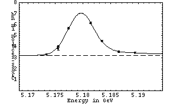
(pass1 statistics plotted above)
121887 11/29/2001 00:17 DataTaking 5.18941 1275.34 3.43 +/- 0.11
121889 11/29/2001 01:25 DataTaking 5.17340 1176.58 3.13 +/- 0.10
121890 11/29/2001 02:29 DataTaking 5.18648 1167.51 3.39 +/- 0.11
121891 11/29/2001 07:52 DataTaking 5.17551 197.67 4.16 +/- 0.34
121892 11/29/2001 08:06 DataTaking 5.17551 1102.25 3.99 +/- 0.14
121893 11/29/2001 08:45 SmallCal 5.17551 0.00 n/a
121894 n/a n/a DataTaking n/a n/a 3.99 +/- 0.14
121895 11/29/2001 09:00 DataTaking 5.18138 1556.08 5.98 +/- 0.17
121896 n/a n/a DataTaking n/a n/a 6.02 +/- 0.16
121897 11/29/2001 10:04 DataTaking 5.18341 1548.25 4.31 +/- 0.13
121898 11/29/2001 11:14 DataTaking 5.17741 1568.99 5.46 +/- 0.15
November 29 Continuum Point
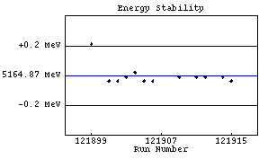 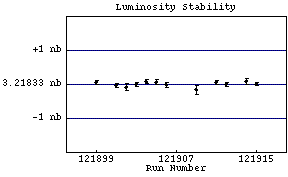
(pass1 statistics plotted above)
121899 11/29/2001 12:38 DataTaking 5.16508 1260.93 3.08 +/- 0.10
121901 11/29/2001 13:39 DataTaking 5.16483 1162.79 3.15 +/- 0.11
121902 11/29/2001 14:35 DataTaking 5.16483 433.70 3.01 +/- 0.19
121903 11/29/2001 15:33 DataTaking 5.16486 1149.53 3.36 +/- 0.11
121904 11/29/2001 16:48 DataTaking 5.16489 1380.27 3.14 +/- 0.10
121905 11/29/2001 17:44 DataTaking 5.16483 1253.62 3.16 +/- 0.11
121906 11/29/2001 18:39 DataTaking 5.16483 675.37 3.18 +/- 0.16
121907 n/a n/a DataTaking n/a n/a 3.21 +/- 0.15
121908 11/29/2001 19:42 DataTaking 5.16486 0.00 n/a
121909 11/29/2001 19:51 DataTaking 5.16486 181.67 2.61 +/- 0.29
121910 11/29/2001 20:24 SmallCal 5.16486 0.00 n/a
121911 11/29/2001 20:43 DataTaking 5.16486 1284.27 3.16 +/- 0.10
121912 11/29/2001 21:39 DataTaking 5.16486 1325.32 3.08 +/- 0.10
121913 n/a n/a DataTaking n/a n/a 3.04 +/- 0.10
121914 11/29/2001 23:05 DataTaking 5.16486 524.52 2.97 +/- 0.15
121915 11/29/2001 23:32 DataTaking 5.16483 1326.79 3.12 +/- 0.10
November 29 Peak Point
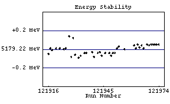 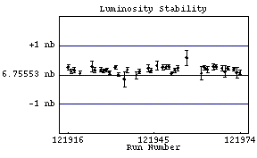
(pass1 statistics plotted above)
121916 11/30/2001 00:47 DataTaking 5.17917 1446.96 6.66 +/- 0.18
121917 11/30/2001 01:52 DataTaking 5.17923 1622.33 6.49 +/- 0.16
121918 11/30/2001 03:04 DataTaking 5.17921 1403.89 6.64 +/- 0.18
121920 11/30/2001 04:34 DataTaking 5.17923 1175.21 6.46 +/- 0.18
121921 11/30/2001 05:23 SmallCal 5.17923 0.00 n/a
121922 11/30/2001 05:29 DataTaking 5.17923 0.14 6.46 +/- 0.18
121923 n/a n/a n/a n/a n/a n/a
121924 11/30/2001 05:57 DataTaking 5.17922 345.56 6.77 +/- 0.34
121925 11/30/2001 06:19 DataTaking 5.17923 1348.99 6.76 +/- 0.18
121926 11/30/2001 07:14 DataTaking 5.17922 n/a n/a
121927 11/30/2001 08:23 DataTaking 5.17936 1611.51 6.77 +/- 0.16
121928 11/30/2001 10:02 DataTaking 5.17914 2067.95 6.74 +/- 0.15
121929 11/30/2001 12:58 DataTaking 5.17934 2021.23 6.71 +/- 0.15
121930 11/30/2001 14:20 DataTaking 5.17916 1953.56 6.64 +/- 0.16
121931 11/30/2001 15:38 SmallCal 5.17916 n/a n/a
121932 11/30/2001 15:43 DataTaking 5.17913 2001.70 6.61 +/- 0.15
121933 11/30/2001 17:06 DataTaking 5.17915 2015.21 6.45 +/- 0.15
121934 11/30/2001 18:26 SmallCal 5.17915 0.00 n/a
121935 11/30/2001 18:32 DataTaking 5.17918 152.27 5.90 +/- 0.51
121936 11/30/2001 18:41 DataTaking 5.17918 1465.67 6.52 +/- 0.17
121937 n/a n/a n/a n/a n/a n/a
121938 11/30/2001 20:01 DataTaking 5.17919 35.53 n/a
121939 11/30/2001 20:29 DataTaking 5.17919 634.36 6.07 +/- 0.23
121940 11/30/2001 21:08 DataTaking 5.17914 2160.96 6.44 +/- 0.14
121941 n/a n/a DataTaking n/a n/a 6.43 +/- 0.14
121942 11/30/2001 23:01 DataTaking 5.17918 24.41 0.00 +/- 0.00
121943 11/30/2001 23:12 DataTaking 5.17919 846.85 7.24 +/- 0.24
121944 11/30/2001 23:55 DataTaking 5.17915 1521.42 6.52 +/- 0.18
121945 12/01/2001 00:57 DataTaking 5.17915 n/a 0.00 +/- 0.00
121946 12/01/2001 01:23 DataTaking 5.17918 476.30 6.21 +/- 0.31
121947 12/01/2001 01:43 SmallCal 5.17918 0.00 n/a
121948 12/01/2001 02:00 DataTaking 5.17918 1971.89 6.73 +/- 0.15
121949 12/01/2001 03:18 DataTaking 5.17915 2111.62 6.70 +/- 0.15
121950 12/01/2001 04:44 DataTaking 5.17918 1974.49 6.71 +/- 0.15
121951 12/01/2001 06:08 DataTaking 5.17918 2187.07 6.51 +/- 0.15
121952 12/01/2001 07:38 DataTaking 5.17923 2193.07 6.53 +/- 0.15
121953 12/01/2001 09:04 DataTaking 5.17925 1222.68 6.87 +/- 0.22
121954 12/01/2001 10:16 DataTaking 5.17922 n/a n/a
121955 n/a n/a DataTaking n/a n/a n/a
121956 12/01/2001 11:29 DataTaking 5.17922 176.44 6.88 +/- 0.50
121957 n/a n/a DataTaking n/a n/a 7.04 +/- 0.48
121958 12/01/2001 12:42 SmallCal 5.17922 0.00 n/a
121959 n/a n/a DataTaking n/a n/a n/a
121960 n/a n/a DataTaking n/a n/a n/a
121961 12/01/2001 13:18 DataTaking 5.17926 181.43 7.08 +/- 0.51
121962 12/01/2001 13:30 DataTaking 5.17923 1546.05 6.92 +/- 0.17
121963 12/01/2001 14:40 DataTaking 5.17927 879.89 6.49 +/- 0.24
121964 12/01/2001 15:10 DataTaking 5.17924 411.15 6.48 +/- 0.24
121965 12/01/2001 15:27 DataTaking 5.17926 1086.82 6.64 +/- 0.19
121966 12/01/2001 16:21 DataTaking 5.17923 2568.11 6.75 +/- 0.14
121967 12/01/2001 17:59 DataTaking 5.17926 n/a 7.05 +/- 0.31
121968 12/01/2001 18:31 DataTaking 5.17927 1539.70 6.66 +/- 0.17
121969 12/01/2001 19:38 DataTaking 5.17926 272.00 7.09 +/- 0.51
121970 12/01/2001 19:58 DataTaking 5.17927 2600.49 6.76 +/- 0.14
121971 12/01/2001 21:38 DataTaking 5.17927 9.89
n/a
121972 12/01/2001 21:49 DataTaking 5.17927 2194.60 6.67 +/- 0.15
121973 12/01/2001 23:17 DataTaking 5.17927 286.99 6.06 +/- 0.43
121974 12/01/2001 23:41 DataTaking 5.17927 1818.25 6.49 +/- 0.15
121975 12/02/2001 01:10 DataTaking 5.17927 2635.84 6.49 +/- 0.16
121976 12/02/2001 03:04 DataTaking 5.17930 2586.30 6.75 +/- 0.14
121977 n/a n/a DataTaking n/a n/a 6.76 +/- 0.14
121978 12/02/2001 05:23 SmallCal 5.17930 0.00 n/a
121979 12/02/2001 06:29 DataTaking n/a 0.00 0.00 +/- 0.00
121980 12/02/2001 06:39 DataTaking n/a n/a n/a
121981 12/02/2001 10:00 DataTaking 5.17929 112.60 6.17 +/- 0.76
121982 n/a n/a DataTaking n/a n/a 6.33 +/- 0.66
121983 12/02/2001 10:10 SmallCal 5.17929 0.00 n/a
121984 12/02/2001 10:23 DataTaking 5.17929 25.51 0.00 +/- 0.00
121985 12/02/2001 10:27 DataTaking 5.17929 1987.56 6.76 +/- 0.15
121986 12/02/2001 11:57 DataTaking 5.17930 2271.92 6.52 +/- 0.13
121987 12/02/2001 13:34 DataTaking 5.17929 2245.07 6.74 +/- 0.14
121988 12/02/2001 15:06 DataTaking 5.17929 216.16 6.76 +/- 0.14
121989 12/02/2001 15:21 DataTaking 5.17929 1803.97 6.56 +/- 0.15
121990 12/02/2001 16:37 SmallCal 5.17929 0.00 n/a
121991 12/02/2001 16:42 DataTaking 5.17930 141.01 7.17 +/- 0.64
121992 12/02/2001 16:49 DataTaking 5.17932 2268.11 6.63 +/- 0.14
121993 12/02/2001 18:19 DataTaking 5.17929 2337.32 6.81 +/- 0.14
121994 12/02/2001 19:57 DataTaking 5.17929 286.08 7.16 +/- 0.52
121995 12/02/2001 20:26 DataTaking 5.17932 2577.48 6.76 +/- 0.14
121996 12/02/2001 22:05 DataTaking 5.17928 2488.22 6.70 +/- 0.14
121997 12/02/2001 23:43 DataTaking 5.17929 822.88 6.63 +/- 0.23
121998 12/03/2001 00:22 SmallCal 5.17929 0.00 n/a
121999 12/03/2001 00:28 DataTaking 5.17931 2311.21 6.68 +/- 0.14
122000 n/a n/a DataTaking n/a n/a n/a
122001 12/03/2001 02:56 DataTaking 5.17934 1128.68 6.84 +/- 0.16
122002 n/a n/a DataTaking n/a n/a 6.82 +/- 0.16
122003 12/03/2001 04:14 DataTaking 5.17932 2519.95 6.73 +/- 0.13
122004 12/03/2001 05:49 SmallCal 5.17932 0.00 n/a
122005 12/03/2001 05:54 DataTaking 5.17928 40.79 6.74 +/- 0.13
122006 12/03/2001 06:08 DataTaking 5.17936 2338.08 6.74 +/- 0.14
122007 12/03/2001 07:45 DataTaking 5.17932 531.62 6.68 +/- 0.34
122008 12/03/2001 18:33 CosmicRun 0.00000 103.26 0.00 +/- 0.00
122009 12/03/2001 18:41 CosmicRun 0.00000 146.47 0.00 +/- 0.00
122010 12/03/2001 21:26 CosmicRun 0.00000 1.18 0.00 +/- 0.00
122011 12/03/2001 21:34 SmallCal 0.00000 0.00 n/a
122012 12/03/2001 22:20 SmallCal 0.00000 0.00 n/a
122013 12/04/2001 10:20 SmallCal 0.00000 0.00 n/a
122014 12/04/2001 10:32 SmallCal 0.00000 0.00 n/a
122015 12/04/2001 10:40 DRBigCal 0.00000 0.03 n/a
122016 12/04/2001 11:07 SVXBigCal 0.00000 0.00 n/a
122017 n/a n/a CCBigCal n/a n/a n/a
122018 12/04/2001 12:27 CCBigCal 0.00000 0.00 n/a
122019 12/04/2001 12:33 CCBigCal 0.00000 0.00 n/a
122020 12/04/2001 15:41 CosmicRun 0.00000 1.18 0.00 +/- 0.00
122021 12/04/2001 17:10 CosmicRun 0.00000 1.18 0.00 +/- 0.00
122022 12/04/2001 17:26 CosmicRun 0.00000 1.18 0.00 +/- 0.00
122023 12/04/2001 18:02 CosmicRun 0.00000 0.03 0.00 +/- 0.00
122024 12/04/2001 18:55 SmallCal 0.00000 n/a n/a
122025 12/04/2001 19:29 CosmicRun 0.00000 0.08 0.00 +/- 0.00
122026 12/04/2001 19:47 CosmicRun 0.00000 0.08 0.00 +/- 0.00
122027 12/04/2001 20:14 CosmicRun 0.00000 0.05 0.00 +/- 0.00
122028 12/04/2001 20:32 CosmicRun 0.00000 0.03 0.00 +/- 0.00
122029 12/04/2001 20:53 CosmicRun 0.00000 0.03 0.00 +/- 0.00
122030 12/04/2001 21:36 CosmicRun 0.00000 0.11 0.00 +/- 0.00
122031 12/04/2001 22:00 CosmicRun 0.00000 0.00 0.00 +/- 0.00
122032 12/04/2001 22:21 CosmicRun 0.00000 0.03 0.00 +/- 0.00
122033 12/04/2001 22:55 CosmicRun 0.00000 0.00 0.00 +/- 0.00
122034 12/04/2001 23:07 CosmicRun 0.00000 0.05 0.00 +/- 0.00
122035 12/04/2001 23:29 CosmicRun 0.00000 0.03 0.00 +/- 0.00
122036 12/04/2001 23:52 CosmicRun 0.00000 0.11 0.00 +/- 0.00
122037 12/05/2001 00:15 CosmicRun 0.00000 0.00 0.00 +/- 0.00
122038 12/05/2001 00:41 CosmicRun 0.00000 0.00 0.00 +/- 0.00
122039 12/05/2001 01:03 CosmicRun 0.00000 0.00 0.00 +/- 0.00
122040 12/05/2001 01:27 CosmicRun 0.00000 0.00 0.00 +/- 0.00
122041 n/a n/a CosmicRun n/a n/a 0.00 +/- 0.00
122042 n/a n/a n/a n/a n/a n/a
122043 12/05/2001 02:24 CosmicRun 0.00000 0.11 0.00 +/- 0.00
122044 12/05/2001 02:47 CosmicRun 0.00000 0.05 0.00 +/- 0.00
122045 12/05/2001 03:23 CosmicRun 0.00000 0.05 0.00 +/- 0.00
122046 12/05/2001 03:55 CosmicRun 0.00000 0.00 0.00 +/- 0.00
122047 12/05/2001 04:18 CosmicRun 0.00000 0.03 0.00 +/- 0.00
122048 12/05/2001 04:57 CosmicRun 0.00000 0.08 0.00 +/- 0.00
122049 12/05/2001 05:19 CosmicRun 0.00000 0.08 0.00 +/- 0.00
122050 12/05/2001 16:57 SmallCal 0.00000 0.00 n/a
122051 12/05/2001 17:02 CosmicRun 0.00000 0.05 0.00 +/- 0.00
122052 12/05/2001 17:09 CosmicRun 0.00000 8.14 n/a
122053 12/05/2001 17:27 CosmicRun 0.00000 1.18 0.00 +/- 0.00
122054 12/05/2001 18:44 DataTaking 5.17941 154.47 6.78 +/- 0.49
122055 12/05/2001 18:58 DataTaking 5.17941 66.85 8.51 +/- 0.78
122056 12/05/2001 19:12 DataTaking 5.17941 82.49 6.76 +/- 0.59
122057 12/05/2001 19:19 DataTaking 5.17921 100.85 7.01 +/- 0.62
122058 12/05/2001 19:47 DRBigCal 5.17921 0.00 n/a
122059 n/a n/a n/a n/a n/a n/a
122060 12/05/2001 20:08 CosmicRun 5.17921 0.11 0.00 +/- 0.00
122061 12/05/2001 20:25 CosmicRun 5.17921 0.22 37.02 +/- 30.22
122062 12/05/2001 20:41 DRBigCal 5.17921 0.11 n/a
December 6 Scan
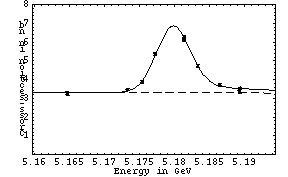
(pass1 statistics plotted above)
122063 12/05/2001 20:56 DataTaking 5.18931 173.29 3.48 +/- 0.28
122064 12/05/2001 22:51 DataTaking 5.16473 465.07 3.17 +/- 0.16
122066 12/05/2001 23:25 DataTaking 5.16477 427.07 3.04 +/- 0.17
122067 12/06/2001 00:19 SmallCal 0.00000 n/a n/a
122068 12/06/2001 00:26 DataTaking 5.18934 4.25 0.00 +/- 0.00
122069 12/06/2001 00:29 DataTaking 5.18937 961.21 3.55 +/- 0.11
122070 12/06/2001 01:33 DataTaking 5.17333 1393.75 3.38 +/- 0.10
122071 12/06/2001 02:41 DataTaking 5.18642 1435.07 3.65 +/- 0.10
122072 12/06/2001 03:49 DataTaking 5.17539 1370.71 3.77 +/- 0.11
122073 12/06/2001 04:56 DataTaking 5.18141 1472.11 6.02 +/- 0.15
122074 12/06/2001 06:04 DataTaking 5.18334 1420.05 4.44 +/- 0.12
122075 n/a n/a DataTaking n/a n/a 4.45 +/- 0.12
122076 12/06/2001 07:12 DataTaking 5.17728 1414.14 5.27 +/- 0.14
122077 12/06/2001 08:16 DataTaking 5.18141 1082.30 5.92 +/- 0.18
122078 12/06/2001 08:57 SmallCal 5.18141 0.00 n/a
December 6 Peak Point (more is coming...)
122079 12/06/2001 09:09 DataTaking 5.17939 2030.36 6.76 +/- 0.14
December 6 Continuum Point
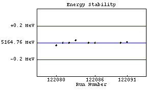 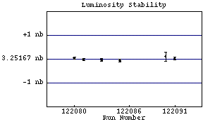
(pass1 statistics plotted above)
122080 12/06/2001 11:50 DataTaking 5.16473 1566.41 3.15 +/- 0.08
122081 12/06/2001 13:08 DataTaking 5.16476 1766.36 3.05 +/- 0.08
122082 12/06/2001 14:27 DataTaking 5.16476 236.16 3.31 +/- 0.37
122083 12/06/2001 14:51 DataTaking 5.16479 1180.88 3.16 +/- 0.09
122085 12/06/2001 16:05 DataTaking 5.16476 1068.66 3.10 +/- 0.09
122086 12/06/2001 17:00 DataTaking 5.16476 10.00 3.09 +/- 0.09
122087 n/a n/a DataTaking n/a n/a 2.80 +/- 0.54
122088 12/06/2001 17:11 SmallCal 5.16476 0.00 n/a
122089 12/06/2001 17:26 DataTaking 5.16476 n/a 3.10 +/- 0.10
122090 12/06/2001 18:26 DataTaking 5.16476 110.77 3.60 +/- 0.41
122091 12/06/2001 18:59 DataTaking 5.16477 1668.38 3.17 +/- 0.08
December 6 Peak Point
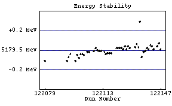 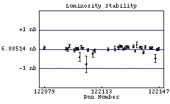
(pass1 statistics plotted above)
122092 12/06/2001 20:35 DataTaking 5.17939 1564.63 6.71 +/- 0.14
122093 12/06/2001 22:02 DataTaking 5.17943 1113.12 6.67 +/- 0.15
122094 12/06/2001 23:27 DataTaking 5.17946 1246.96 7.04 +/- 0.18
122097 12/07/2001 00:39 DataTaking 5.17939 1309.84 6.59 +/- 0.17
122098 12/07/2001 01:49 DataTaking 5.17945 1594.44 6.78 +/- 0.16
122099 12/07/2001 02:56 DataTaking 5.17942 1956.00 6.66 +/- 0.15
122100 12/07/2001 04:20 DataTaking 5.17946 172.47 7.57 +/- 0.68
122101 12/07/2001 04:38 DataTaking 5.17946 1948.55 6.69 +/- 0.14
122102 12/07/2001 06:00 DataTaking 5.17945 2005.29 6.69 +/- 0.14
122103 12/07/2001 07:22 SmallCal 5.17946 0.00 n/a
122104 12/07/2001 07:28 DataTaking 5.17948 47.70 6.67 +/- 0.83
122105 12/07/2001 07:32 DataTaking 5.17948 1671.04 6.48 +/- 0.15
122106 12/07/2001 09:00 SmallCal 5.17948 0.00 n/a
122107 12/07/2001 09:02 SmallCal 5.17948 0.00 n/a
122108 12/07/2001 09:09 DataTaking 5.17949 255.07 6.45 +/- 0.46
122109 12/07/2001 09:21 DataTaking 5.17952 1070.27 6.51 +/- 0.18
122110 12/07/2001 10:13 DataTaking 5.17950 18.00
n/a
122111 12/07/2001 10:32 DataTaking 5.17949 1285.64 6.47 +/- 0.16
122112 12/07/2001 11:35 DataTaking 5.17949 2048.49 6.75 +/- 0.14
122113 12/07/2001 13:38 SmallCal 5.17949 0.00 n/a
122114 12/07/2001 14:09 DataTaking 5.17948 535.26 6.97 +/- 0.33
122115 12/07/2001 14:33 DataTaking 5.17946 15.75
n/a
122116 12/07/2001 14:47 DataTaking 5.17947 588.14 7.36 +/- 0.28
122117 12/07/2001 15:17 DataTaking 5.17947 1860.68 6.51 +/- 0.14
122118 12/07/2001 16:43 DataTaking 5.17947 1515.64 6.45 +/- 0.16
122119 12/07/2001 17:54 DataTaking 5.17949 n/a n/a
122120 12/07/2001 18:17 DataTaking 5.17948 n/a n/a
122121 12/07/2001 18:32 DataTaking 5.17952 679.67 6.61 +/- 0.21
122122 12/07/2001 19:34 DataTaking 5.17952 1.29 0.00 +/- 0.00
122123 12/07/2001 19:48 DataTaking 5.17952 1895.37 6.66 +/- 0.14
122124 12/07/2001 21:13 DataTaking 5.17952 2011.75 6.86 +/- 0.15
122125 12/07/2001 22:37 DataTaking 5.17951 2139.97 6.78 +/- 0.14
122126 12/08/2001 00:06 DataTaking 5.17954 2016.44 6.69 +/- 0.14
122127 12/08/2001 01:29 DataTaking 5.17951 2088.16 6.62 +/- 0.14
122128 12/08/2001 02:53 DataTaking 5.17954 2102.82 6.84 +/- 0.14
122129 12/08/2001 04:17 DataTaking 5.17952 2042.96 6.86 +/- 0.14
122130 12/08/2001 05:36 SmallCal 5.17952 0.00 n/a
122131 12/08/2001 05:38 SmallCal 5.17952 0.00 n/a
122132 12/08/2001 07:00 DataTaking 5.17953 1670.25 6.77 +/- 0.16
122133 12/08/2001 08:08 DataTaking 5.17956 2097.29 6.35 +/- 0.13
122134 12/08/2001 09:32 DataTaking 5.17953 489.86 7.37 +/- 0.35
122135 12/08/2001 10:08 DataTaking 5.17979 3.26 7.27 +/- 0.34
122136 12/08/2001 10:12 DataTaking 5.17943 1982.79 6.63 +/- 0.14
122137 12/08/2001 11:34 DataTaking 5.17948 1859.18 6.59 +/- 0.14
122138 12/08/2001 12:55 DataTaking 5.17949 1736.16 6.49 +/- 0.14
122139 12/08/2001 14:20 DataTaking 5.17952 1929.07 6.73 +/- 0.14
122140 12/08/2001 16:51 DataTaking 5.17951 1926.52
n/a
122141 12/08/2001 18:23 DataTaking 5.17955 2105.95
n/a
122142 12/08/2001 18:46 DataTaking 5.17954 2303.70 6.72 +/- 0.13
122143 12/08/2001 20:22 DataTaking 5.17951 2205.56 6.59 +/- 0.14
122144 12/08/2001 21:48 SmallCal 5.17951 0.00 n/a
122145 12/08/2001 21:58 DataTaking 5.17954 201.97 6.72 +/- 0.48
122146 12/08/2001 22:08 DataTaking 5.17957 2032.03 6.64 +/- 0.14
122147 12/08/2001 23:35 DataTaking 5.17951 1648.33 6.89 +/- 0.17
122148 12/09/2001 00:47 DataTaking 5.17950 2311.26 6.66 +/- 0.13
122149 12/09/2001 02:26 DataTaking 5.17950 3.78 6.67 +/- 0.13
122150 12/09/2001 02:30 DataTaking 5.17953 0.00 6.51 +/- 1.49
122151 12/09/2001 02:42 DataTaking 5.17953 59.40 7.17 +/- 0.90
122152 12/09/2001 02:48 DataTaking 5.17950 1686.38 6.93 +/- 0.15
122153 12/09/2001 04:09 DataTaking 5.17950 2119.67 6.68 +/- 0.13
122154 12/09/2001 05:47 DataTaking 5.17954 342.71 6.96 +/- 0.39
122155 n/a n/a DataTaking n/a n/a 6.98 +/- 0.37
122156 12/09/2001 06:31 DataTaking 5.17955 511.10 6.31 +/- 0.26
122157 n/a n/a DataTaking n/a n/a 6.33 +/- 0.25
122158 12/09/2001 07:30 DataTaking 5.17954 310.57 6.93 +/- 0.33
122159 12/09/2001 07:55 DataTaking 5.17955 2086.00 6.54 +/- 0.13
122160 12/09/2001 09:58 DataTaking 5.17955 709.40 6.42 +/- 0.25
122161 12/09/2001 10:26 DataTaking 5.17949 970.55 6.65 +/- 0.18
122162 12/09/2001 11:20 DataTaking 5.17949 89.07 6.49 +/- 0.46
122163 12/09/2001 11:35 DataTaking 5.17947 2220.14 7.01 +/- 0.13
122164 12/09/2001 13:11 DataTaking 5.17947 2189.23 6.64 +/- 0.13
122165 n/a n/a SmallCal n/a 0.00 n/a
122166 12/09/2001 14:55 DataTaking 5.17948 983.92 6.58 +/- 0.21
122167 12/09/2001 15:45 DataTaking 5.17952 751.34 6.64 +/- 0.22
122168 12/09/2001 16:26 DataTaking 5.17952 2519.75 6.78 +/- 0.13
122169 12/09/2001 18:08 DataTaking 5.17952 2538.85 6.70 +/- 0.13
122170 12/09/2001 19:46 DataTaking 5.17951 2398.30 6.58 +/- 0.13
122171 12/09/2001 21:13 SmallCal 5.17951 0.00 n/a
122172 12/09/2001 21:54 DataTaking 5.17954 2571.81 6.61 +/- 0.13
122173 12/09/2001 23:32 DataTaking 5.17954 2625.15 6.60 +/- 0.12
122174 12/10/2001 01:15 DataTaking 5.17957 2513.73 6.99 +/- 0.14
122175 n/a n/a DataTaking n/a n/a 6.95 +/- 0.14
122176 12/10/2001 03:13 DataTaking 5.17957 1694.99 6.61 +/- 0.15
122177 12/10/2001 04:17 DataTaking 5.17958 138.69 6.93 +/- 0.50
122178 12/10/2001 04:32 DataTaking 5.17957 2515.92 6.94 +/- 0.13
122179 12/10/2001 06:10 DataTaking 5.17955 2880.27 6.71 +/- 0.12
122180 12/10/2001 08:03 SmallCal 5.17955 0.00 n/a
122181 12/10/2001 08:42 CosmicRun 5.17955 1.18 6.74 +/- 0.12
122182 12/10/2001 09:29 DataTaking 5.95782 1.18 0.00 +/- 0.00
122183 12/10/2001 10:34 CosmicRun 5.95782 0.03 n/a
122184 12/10/2001 11:06 CosmicRun 5.95782 0.00 0.00 +/- 0.00
122185 12/10/2001 11:56 DataTaking 6.47226 169.73 n/a
122186 12/10/2001 12:36 CosmicRun 6.47226 2.03 n/a
122187 12/10/2001 12:57 DataTaking 5.89885 0.05 0.00 +/- 0.00
122188 12/10/2001 13:26 CosmicRun 5.89885 0.00 n/a
122189 12/10/2001 13:45 DataTaking 6.02902 0.00 n/a
122190 n/a n/a DataTaking n/a n/a n/a
122191 12/10/2001 15:36 DataTaking 0.00000 91.97 n/a
122192 12/10/2001 15:54 DataTaking 0.00000 134.19 n/a
122193 12/10/2001 16:49 DataTaking 0.00000 0.00 0.00 +/- 0.00
122194 12/10/2001 17:04 DataTaking 0.00000 527.78 n/a
122195 12/10/2001 17:55 DataTaking 0.00000 64.55 n/a
122196 12/10/2001 18:17 DataTaking 0.00000 9.89 0.00 +/- 0.00
122197 12/10/2001 18:50 DataTaking 6.50285 0.05 0.00 +/- 0.00
122198 12/11/2001 10:20 SmallCal 6.50285 0.00 n/a
122199 12/11/2001 10:31 DRBigCal 6.50285 0.00 n/a
122200 12/11/2001 10:51 SVXBigCal 6.50285 0.00 n/a
122201 12/11/2001 11:02 CCBigCal 6.50285 0.00 n/a
122202 12/11/2001 11:50 CCBigCal 6.50285 0.00 n/a
122203 12/11/2001 12:55 CCBigCal 6.50285 0.00 n/a
122204 12/11/2001 12:57 CCBigCal 6.50285 n/a n/a
122205 12/11/2001 13:32 CCBigCal 6.50285 0.00 n/a
122206 n/a n/a n/a n/a n/a n/a
122207 12/11/2001 14:07 SmallCal 6.50285 n/a n/a
122208 12/11/2001 14:37 CosmicRun 6.50285 0.03 n/a
122209 12/11/2001 15:05 CosmicRun 6.50285 0.00 0.00 +/- 0.00
122210 12/11/2001 16:00 DataTaking 4.39391 0.00 n/a
122211 12/11/2001 16:40 CosmicRun 4.39391 0.00 n/a
122212 12/11/2001 16:43 CosmicRun 4.39391 n/a n/a
122213 n/a n/a DataTaking n/a n/a n/a
122214 n/a n/a DataTaking n/a n/a n/a
122215 n/a n/a n/a n/a n/a n/a
122216 n/a n/a n/a n/a n/a n/a
122217 n/a n/a n/a n/a n/a n/a
122218 n/a n/a n/a n/a n/a n/a
122219 n/a n/a n/a n/a n/a n/a
122220 12/11/2001 22:53 CosmicRun 4.39391 0.05 n/a
122221 n/a n/a n/a n/a n/a n/a
122222 12/11/2001 23:19 CosmicRun 4.39391 0.00 0.00 +/- 0.00
122223 12/11/2001 23:25 CosmicRun 4.39391 0.00 n/a
122224 12/12/2001 00:02 CosmicRun 4.39391 39.84 n/a
122225 12/12/2001 00:22 DataTaking 1.81157 65.97 0.00 +/- 0.00
BEGINNING OF DATA 17
122226 12/12/2001 00:39 DataTaking 1.81158 0.77 0.00 +/- 0.00
122227 12/12/2001 00:48 DataTaking 1.81158 9.12 0.00 +/- 0.00
122228 12/12/2001 01:54 DataTaking 1.81158 n/a n/a
122229 12/12/2001 02:52 DataTaking 1.81158 n/a n/a
122230 12/12/2001 03:14 DataTaking 1.81158 0.90 0.00 +/- 0.00
122231 12/12/2001 03:22 DataTaking 1.81158 4.55 6.30 +/- 6.50
122232 12/12/2001 04:02 DataTaking 1.81157 15.18 6.30 +/- 3.75
122233 12/12/2001 05:20 DataTaking 1.81158 1.29 11.86 +/- 8.87
122234 12/12/2001 05:52 DataTaking 1.81158 6.49 2.73 +/- 1.38
122235 12/12/2001 06:51 DataTaking 1.81157 9.75 2.73 +/- 1.38
122236 12/12/2001 16:52 DataTaking 5.16011 0.03 0.00 +/- 0.00
122237 12/12/2001 17:42 DataTaking 5.17920 0.03 0.00 +/- 0.00
122238 12/12/2001 17:55 CosmicRun 5.17920 0.00 0.00 +/- 0.00
122239 12/12/2001 19:02 SmallCal 5.17920 0.00 n/a
122240 12/12/2001 19:05 SmallCal 5.17920 0.00 n/a
122241 12/12/2001 19:35 SmallCal 5.17920 0.00 n/a
122242 12/12/2001 20:31 CosmicRun 5.17920 438.11 5.09 +/- 0.26
122243 12/12/2001 21:11 CosmicRun 5.17920 251.86 51.70 +/- 12.56
122244 12/12/2001 23:27 DataTaking 5.17736 10.55 n/a
December 13 Scan
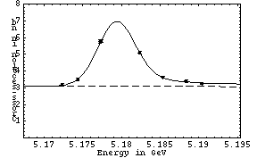
(pass1 statistics plotted above)
122245 12/12/2001 23:40 DataTaking 5.17740 1046.88 5.65 +/- 0.22
122246 12/13/2001 00:52 DataTaking 5.18234 1371.86 5.13 +/- 0.18
122247 12/13/2001 02:05 DataTaking 5.19042 1807.15 3.21 +/- 0.11
122248 12/13/2001 05:54 DataTaking 5.17233 5.64 3.22 +/- 0.11
122249 12/13/2001 06:04 DataTaking 5.17233 1064.00 2.84 +/- 0.14
122251 12/13/2001 07:37 DataTaking 5.18835 968.66 3.21 +/- 0.15
122252 12/13/2001 08:37 DataTaking 5.17435 1243.53 3.46 +/- 0.14
122253 12/13/2001 09:41 DataTaking 5.18535 1413.89 3.55 +/- 0.14
122254 n/a n/a DataTaking n/a n/a 3.54 +/- 0.14
122255 n/a n/a n/a n/a n/a n/a
122256 12/13/2001 11:15 DataTaking 5.17725 859.89 5.53 +/- 0.24
122257 12/13/2001 11:56 RandomLow 5.17726 0.00 5.53 +/- 0.23
122258 12/13/2001 12:00 CosmicRun 5.17726 0.00 n/a
122259 12/13/2001 12:29 DataTaking 5.17938 n/a 0.00 +/- 0.00
122260 n/a n/a n/a n/a n/a n/a
122261 12/13/2001 12:45 DataTaking 5.17941 n/a 7.17 +/- 0.90
122262 n/a n/a DataTaking n/a n/a n/a
December 13 Peak Point (more is coming...)
122263 12/13/2001 13:23 DataTaking 5.17950 289.86 7.00 +/- 0.44
December 13 Continuum Point
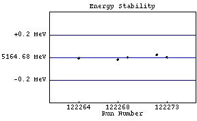 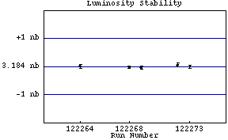
(pass1 statistics plotted above)
122264 12/13/2001 13:53 DataTaking 5.16467 804.93 2.52 +/- 0.16
122268 12/13/2001 15:09 DataTaking 5.16466 1743.56 3.08 +/- 0.10
122269 12/13/2001 16:55 DataTaking 5.16468 1654.41 3.00 +/- 0.11
122270 12/13/2001 18:14 SmallCal 5.16468 0.00 n/a
122271 12/13/2001 18:25 DataTaking 5.16470 n/a n/a
122272 12/13/2001 18:48 DataTaking 5.16470 904.66 3.19 +/- 0.14
122273 12/13/2001 19:44 DataTaking 5.16468 1869.42 3.03 +/- 0.10
December 13 Peak Point
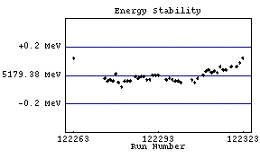 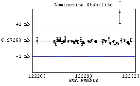
(pass1 statistics plotted above)
122274 12/13/2001 21:17 DataTaking 5.17936 2001.89 6.88 +/- 0.18
122275 12/13/2001 22:50 DataTaking 5.17934 991.62 6.65 +/- 0.26
122276 12/13/2001 23:28 DataTaking 5.17935 716.77 7.10 +/- 0.30
122277 12/14/2001 00:05 DataTaking 5.17934 2232.25 6.47 +/- 0.17
122278 12/14/2001 01:36 DataTaking 5.17939 554.49 6.89 +/- 0.38
122279 12/14/2001 01:57 DataTaking 5.17933 1173.75 6.61 +/- 0.23
122280 12/14/2001 02:48 DataTaking 5.17930 2235.78 6.51 +/- 0.18
122281 12/14/2001 04:09 DataTaking 5.17934 426.93 6.98 +/- 0.50
122282 12/14/2001 04:31 DataTaking 5.17934 42.77 6.81 +/- 0.46
122283 12/14/2001 04:44 DataTaking 5.17934 1577.37 6.84 +/- 0.22
122285 12/14/2001 07:15 DataTaking 5.17937 2091.64 6.68 +/- 0.18
122286 12/14/2001 08:39 DataTaking 5.17936 1924.49 6.31 +/- 0.18
122287 12/14/2001 10:02 DataTaking 5.17937 1655.75 6.99 +/- 0.20
122288 12/14/2001 11:14 DataTaking 5.17937 2087.78 6.72 +/- 0.19
122289 12/14/2001 12:33 DataTaking 5.17935 1524.27 6.69 +/- 0.24
122290 12/14/2001 13:31 DataTaking 5.17935 38.25
n/a
122291 12/14/2001 14:08 DataTaking 5.17938 952.33 6.52 +/- 0.27
122292 12/14/2001 14:48 DataTaking 5.17938 512.38 6.05 +/- 0.74
122293 12/14/2001 15:22 DataTaking 5.17938 1733.18 6.62 +/- 0.20
122294 12/14/2001 16:34 DataTaking 5.17934 n/a n/a
122295 12/14/2001 18:28 SmallCal 5.17934 n/a n/a
122296 12/14/2001 19:22 DataTaking 5.17935 2095.26 6.62 +/- 0.18
122297 12/14/2001 20:37 DataTaking 5.17936 2274.38 6.59 +/- 0.19
122298 12/14/2001 21:59 DataTaking 5.17935 2262.30 6.84 +/- 0.21
122299 12/14/2001 23:40 DataTaking 5.17934 0.00 6.85 +/- 0.21
122300 12/14/2001 23:44 DataTaking 5.17934 1425.29 6.64 +/- 0.27
122301 12/15/2001 00:40 DataTaking 5.17933 2315.12 6.90 +/- 0.23
122302 12/15/2001 02:03 SmallCal 5.17933 0.00 n/a
122303 n/a n/a SmallCal n/a n/a n/a
122304 12/15/2001 02:54 SmallCal 5.17933 n/a n/a
122305 12/15/2001 03:05 DataTaking 5.17935 367.89 6.82 +/- 0.42
122306 12/15/2001 03:26 DataTaking 5.17933 2358.77 6.82 +/- 0.19
122307 12/15/2001 04:50 DataTaking 5.17936 2188.41 6.79 +/- 0.22
122308 12/15/2001 06:08 SmallCal 5.17936 0.00 n/a
122309 12/15/2001 06:20 DataTaking 5.17938 1970.00 7.00 +/- 0.20
122310 12/15/2001 07:39 DataTaking 5.17941 2004.49 6.36 +/- 0.19
122311 12/15/2001 09:03 DataTaking 5.17942 17.07 6.37 +/- 0.19
122312 12/15/2001 09:49 DataTaking 5.17940 1778.36 6.63 +/- 0.19
122313 12/15/2001 11:33 DataTaking 5.17941 1698.36 6.56 +/- 0.21
122314 12/15/2001 13:10 DataTaking 5.17940 2124.27 6.43 +/- 0.18
122315 12/15/2001 14:37 DataTaking 5.17944 2235.15 6.43 +/- 0.19
122316 12/15/2001 16:10 DataTaking 5.17942 32.55 8.51 +/- 1.11
122317 12/15/2001 16:14 DataTaking 5.17942 488.85 6.94 +/- 0.50
122318 n/a n/a DataTaking n/a n/a 7.00 +/- 0.48
122319 12/15/2001 16:52 DataTaking 5.17944 1873.59 6.89 +/- 0.20
122320 n/a n/a n/a n/a n/a n/a
122321 12/15/2001 18:30 DataTaking 5.17944 2222.52 6.59 +/- 0.19
122322 12/15/2001 19:55 DataTaking 5.17947 2453.56 6.68 +/- 0.17
122323 12/15/2001 21:37 DataTaking 5.17950 2461.86 6.81 +/- 0.19
122324 n/a n/a n/a n/a n/a n/a
122325 12/15/2001 23:14 DataTaking 5.17950 0.00 n/a
122326 12/15/2001 23:48 DataTaking 5.17950 1680.79 6.55 +/- 0.21
122327 12/16/2001 00:53 SmallCal 5.17950 0.00 n/a
122328 n/a n/a DataTaking n/a n/a n/a
122329 n/a n/a n/a n/a n/a n/a
122330 12/16/2001 02:55 DataTaking 5.17950 1919.64 6.32 +/- 0.20
122331 12/16/2001 04:24 DataTaking 5.17950 177.89 7.26 +/- 0.91
122332 12/16/2001 04:56 DataTaking 5.17954 62.25 7.34 +/- 0.77
122333 12/16/2001 05:36 DataTaking 5.17955 302.57 0.00 +/- 0.00
122334 12/16/2001 06:04 DataTaking 5.17952 239.23 0.00 +/- 0.00
122335 12/16/2001 06:14 DataTaking 5.17954 107.15 n/a
122336 12/16/2001 06:44 DataTaking 5.17952 639.01 7.18 +/- 0.45
122337 12/16/2001 08:58 DataTaking 5.17956 1.34 0.00 +/- 0.00
122338 12/16/2001 09:17 DataTaking 5.17959 0.36 n/a
122339 12/16/2001 09:45 DataTaking 5.17958 527.10 6.95 +/- 0.43
122340 12/16/2001 10:30 DataTaking 5.17955 5.95 7.06 +/- 0.42
122341 12/16/2001 10:33 DataTaking 5.17952 n/a 7.13 +/- 0.63
122342 12/16/2001 11:32 DataTaking 5.17955 378.11 6.69 +/- 0.48
122343 n/a n/a DataTaking n/a n/a 6.76 +/- 0.45
122344 12/16/2001 12:22 DataTaking 5.17952 55.10 0.00 +/- 0.00
122345 12/16/2001 12:37 DataTaking 5.17954 88.90 8.69 +/- 1.13
122346 12/16/2001 12:53 DataTaking 5.17954 0.55 8.20 +/- 0.92
122347 12/16/2001 13:00 DataTaking 5.17957 390.49 6.72 +/- 0.59
122348 12/16/2001 13:35 DataTaking 5.17955 4.60 7.09 +/- 0.55
122349 12/16/2001 13:38 DataTaking 5.17955 571.56 6.45 +/- 0.40
122350 12/16/2001 14:28 DataTaking 5.17953 676.30 7.40 +/- 0.42
122351 12/16/2001 15:23 DataTaking 5.17954 441.73 7.42 +/- 0.54
122352 12/16/2001 16:09 DataTaking 5.17952 116.52 7.62 +/- 0.52
122353 12/16/2001 16:31 DataTaking 5.17959 8.16 5.45 +/- 0.67
122354 12/16/2001 20:21 DataTaking 5.17944 1592.77 6.54 +/- 0.20
122355 12/16/2001 21:40 DataTaking 5.17947 168.06 6.78 +/- 0.84
122356 12/16/2001 22:02 DataTaking 5.17941 1685.73 6.56 +/- 0.21
122357 12/16/2001 23:16 DataTaking 5.17946 2364.79 6.46 +/- 0.18
122358 12/17/2001 00:53 SmallCal 5.17946 0.00 n/a
122359 12/17/2001 00:55 SmallCal 5.17946 0.00 n/a
122360 12/17/2001 01:03 DataTaking 5.17947 2080.49 6.79 +/- 0.32
122361 12/17/2001 02:32 DataTaking 5.17950 27.18 n/a
122362 12/17/2001 03:04 DataTaking 5.17950 169.04 9.28 +/- 1.23
122363 12/17/2001 03:20 DataTaking 5.17950 1072.79 6.84 +/- 0.30
122364 12/17/2001 04:08 SmallCal 5.17950 0.00 n/a
122365 12/17/2001 04:22 DataTaking 5.17946 708.71 6.75 +/- 0.42
122366 12/17/2001 04:49 DataTaking 5.17946 1310.96 6.49 +/- 0.27
122367 12/17/2001 05:52 DataTaking 5.17949 66.05 6.40 +/- 0.26
122368 n/a n/a DataTaking n/a n/a n/a
122369 12/17/2001 06:35 DataTaking 5.17949 632.08 6.00 +/- 0.37
122370 12/17/2001 07:16 SmallCal 5.17949 0.00 n/a
122371 12/17/2001 07:54 SmallCal 5.17949 n/a n/a
122372 12/17/2001 08:39 CCBigCal 5.17949 0.00 n/a
122373 12/17/2001 08:56 CCBigCal 5.17949 0.00 n/a
122374 12/17/2001 09:02 DRBigCal 5.17949 0.00 n/a
122375 n/a n/a DRBigCal n/a 0.00 n/a
122376 n/a n/a DRBigCal n/a 0.00 n/a
122377 12/17/2001 10:34 DRBigCal 5.17949 n/a n/a
122378 12/17/2001 11:02 DRBigCal 5.17949 0.00 n/a
122379 12/17/2001 11:32 DRBigCal 0.00000 0.03 n/a
122380 12/17/2001 11:49 SVXBigCal 0.00000 0.00 n/a
122381 12/17/2001 12:12 SmallCal 0.00000 n/a n/a
122382 12/17/2001 15:15 SmallCal 0.00000 n/a n/a
122383 12/17/2001 15:44 DataTaking 5.17000 0.03 n/a
122384 12/17/2001 15:55 RandomLow 5.17000 0.03 0.00 +/- 0.00
122385 12/17/2001 16:17 RandomLow 5.17000 0.00 0.00 +/- 0.00
122386 12/17/2001 16:41 CosmicRun 5.17000 0.00 0.00 +/- 0.00
122387 12/17/2001 20:57 SmallCal 5.17000 0.00 n/a
122388 12/17/2001 21:06 CosmicRun 5.17000 20.47 0.00 +/- 0.00
122389 12/17/2001 21:31 DataTaking 1.82269 127.29 0.00 +/- 0.00
122390 n/a n/a DataTaking n/a n/a n/a
122391 n/a n/a n/a n/a n/a n/a
122392 n/a n/a n/a n/a n/a n/a
122393 12/18/2001 18:33 CosmicRun 1.82269 0.00 n/a
122394 n/a n/a DataTaking n/a n/a n/a
122395 12/18/2001 19:43 DataTaking 1.82283 0.11 n/a
122396 12/18/2001 22:18 DataTaking 1.82185 1810.05 n/a
122397 n/a n/a DataTaking n/a n/a n/a
122398 n/a n/a CCBigCal n/a n/a n/a
122399 n/a n/a n/a n/a n/a n/a
122400 n/a n/a CCBigCal n/a n/a n/a
122401 12/19/2001 10:32 CCBigCal 0.00000 n/a n/a
122402 n/a n/a n/a n/a n/a n/a
122403 12/19/2001 19:24 SmallCal 0.00000 n/a n/a
122404 12/19/2001 19:36 CosmicRun 0.00000 0.05 0.00 +/- 0.00
122405 12/19/2001 20:26 CosmicRun 0.00000 7.97 0.00 +/- 0.00
122406 12/19/2001 20:33 SmallCal 0.00000 0.00 n/a
122407 12/19/2001 20:44 CosmicRun 0.00000 8.11 0.00 +/- 0.00
122408 n/a n/a DataTaking n/a n/a n/a
December 20 Scan
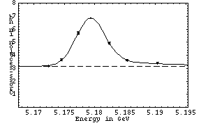
(pass1 statistics plotted above)
122409 12/19/2001 23:37 DataTaking 5.17730 848.85 5.47 +/- 0.19
122410 12/20/2001 00:46 DataTaking 5.18241 1504.33 4.87 +/- 0.17
122411 12/20/2001 02:00 DataTaking 5.19036 1390.66 3.15 +/- 0.12
122412 12/20/2001 03:14 DataTaking 5.17244 1445.04 3.01 +/- 0.12
122413 12/20/2001 04:32 DataTaking 5.18783
n/a n/a
122414 12/20/2001 06:44 DataTaking 5.18536 1440.14 3.33 +/- 0.13
122415 12/20/2001 08:16 DataTaking 5.17730
n/a 5.69 +/- 0.20
122416 12/20/2001 09:46 DataTaking 5.17451 762.41 3.53 +/- 0.18
(
n/a in the luminosity was due to mistakes in closing EndRun properly...)
December 20 Continuum Point
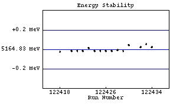 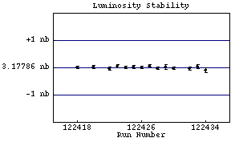
(pass1 statistics plotted above)
122418 12/20/2001 14:35 DataTaking 5.16480 1652.36 3.18 +/- 0.13
122420 12/20/2001 16:27 DataTaking 5.16481 1743.40 3.14 +/- 0.10
122421 12/20/2001 17:49 DataTaking 5.16481 8.63 3.11 +/- 0.10
122422 12/20/2001 18:21 DataTaking 5.16481 988.38 3.05 +/- 0.14
122423 12/20/2001 19:11 DataTaking 5.16484 1893.26 3.24 +/- 0.11
122424 12/20/2001 20:33 DataTaking 5.16481 1934.63 3.19 +/- 0.11
122425 12/20/2001 21:56 DataTaking 5.16481 1904.71 3.11 +/- 0.11
122426 12/20/2001 23:19 DataTaking 5.16481 1886.96 3.25 +/- 0.12
122427 12/21/2001 00:44 DataTaking 5.16481 1673.23 3.12 +/- 0.12
122428 12/21/2001 02:08 DataTaking 5.16482 1892.88 3.07 +/- 0.11
122429 12/21/2001 03:33 DataTaking 5.16481 697.67 3.22 +/- 0.21
122430 12/21/2001 04:15 DataTaking 5.16487 1790.90 3.07 +/- 0.11
122431 12/21/2001 05:35 SmallCal 5.16487 0.00 n/a
122432 12/21/2001 05:43 DataTaking 5.16485 1688.99 3.22 +/- 0.13
122433 12/21/2001 07:01 DataTaking 5.16488 939.34 3.06 +/- 0.15
122434 12/21/2001 07:55 DataTaking 5.16485 445.67 2.78 +/- 0.18
122435 12/21/2001 08:37 DataTaking 5.17934 n/a 7.02 +/- 0.44
122436 n/a n/a n/a n/a n/a n/a
December 20 Peak Point
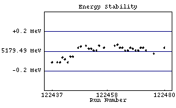 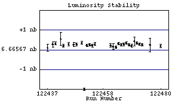
(pass1 statistics plotted above)
122437 12/21/2001 09:39 DataTaking 5.17938 289.64 6.13 +/- 0.38
122439 12/21/2001 10:58 DataTaking 5.17938 672.22 6.63 +/- 0.29
122440 12/21/2001 11:41 DataTaking 5.17938 2038.00 6.66 +/- 0.18
122441 12/21/2001 13:04 DataTaking 5.17943 1563.48 7.45 +/- 0.67
122442 12/21/2001 14:15 DataTaking 5.17941 112.11 8.39 +/- 0.77
122443 12/21/2001 14:28 DataTaking 5.17938 2069.21 6.61 +/- 0.19
122444 12/21/2001 16:01 DataTaking 5.17944 0.00 0.00 +/- 0.00
122445 12/21/2001 16:19 DataTaking 5.17944 1266.71 6.71 +/- 0.24
122446 n/a n/a DataTaking n/a n/a 6.67 +/- 0.23
122447 12/21/2001 17:30 DataTaking 5.17953 1035.78 6.73 +/- 0.28
122448 12/21/2001 18:17 DataTaking 5.17954 2106.55 6.45 +/- 0.19
122449 12/21/2001 19:38 DataTaking 5.17951 n/a n/a
122450 12/21/2001 20:21 DataTaking 5.17955 2024.16 6.53 +/- 0.19
122451 12/21/2001 21:47 DataTaking 5.17952 1776.96 2.33 +/- 0.07
122452 12/21/2001 22:58 DataTaking 5.17952 2199.95 6.55 +/- 0.18
122453 12/22/2001 00:23 DataTaking 5.17950 2095.62 6.53 +/- 0.17
122454 12/22/2001 01:51 DataTaking 5.17950 2043.95 6.42 +/- 0.18
122455 12/22/2001 03:13 DataTaking 5.17955 2100.55 6.63 +/- 0.19
122456 n/a n/a n/a n/a n/a n/a
122457 12/22/2001 04:48 DataTaking 5.17953 0.16 0.00 +/- 0.00
122458 n/a n/a n/a n/a n/a n/a
122459 n/a n/a n/a n/a n/a n/a
122460 12/22/2001 10:33 DRBigCal 5.17953 38.66 n/a
122461 12/22/2001 10:51 DataTaking 5.17955 1612.79 6.40 +/- 0.21
122462 12/22/2001 11:53 DataTaking 5.17956 401.07 7.27 +/- 0.46
122463 12/22/2001 12:19 DataTaking 5.17953 2588.77 6.56 +/- 0.18
122464 12/22/2001 13:56 DataTaking 5.17953 2582.79 6.83 +/- 0.18
122465 12/22/2001 15:31 DataTaking 5.17950 2632.90 6.59 +/- 0.17
122466 12/22/2001 17:13 DataTaking 5.17950 2419.42 6.67 +/- 0.19
122467 12/22/2001 18:42 DataTaking 5.17953 2701.51 7.18 +/- 0.19
122468 12/22/2001 20:17 DataTaking 5.17952 2687.37 6.63 +/- 0.18
122469 12/22/2001 21:51 DataTaking 5.17950 2292.60 6.51 +/- 0.20
122470 12/22/2001 23:18 DataTaking 5.17950 190.55 6.05 +/- 0.74
122471 12/22/2001 23:30 DataTaking 5.17953 2727.15 7.08 +/- 0.19
122472 12/23/2001 01:07 DataTaking 5.17953 2639.75 6.09 +/- 0.20
122473 12/23/2001 02:43 DataTaking 5.17950 2693.92 6.57 +/- 0.21
122474 12/23/2001 04:23 SmallCal 5.17950 0.00 n/a
122475 n/a n/a DataTaking n/a n/a n/a
122476 12/23/2001 07:26 DataTaking 5.17947 85.70 5.85 +/- 0.71
122477 n/a n/a n/a n/a n/a 6.28 +/- 0.65
122478 n/a n/a n/a n/a n/a n/a
122479 n/a n/a n/a n/a n/a n/a
122480 12/23/2001 08:03 DataTaking 5.17953 1407.40 7.04 +/- 0.27
122481 12/23/2001 08:54 DataTaking 5.17947 208.08 6.71 +/- 0.59
122482 12/23/2001 09:07 SmallCal 5.17947 0.00 n/a
122483 n/a n/a SmallCal n/a 0.00 n/a
122484 12/23/2001 09:24 DataTaking 5.17953 n/a n/a
122485 12/23/2001 10:31 DataTaking 5.17950 490.55 7.12 +/- 0.36
122486 12/23/2001 10:59 DataTaking 5.17950 2639.62 6.85 +/- 0.17
122487 12/23/2001 12:35 DataTaking 5.17947 2684.85 6.65 +/- 0.17
122488 12/23/2001 14:10 DataTaking 5.17947 2620.08 6.66 +/- 0.17
122489 12/23/2001 15:45 DataTaking 5.17947 2455.18 6.68 +/- 0.19
122490 12/23/2001 18:29 SmallCal 5.17947 n/a n/a
122491 12/23/2001 18:42 DataTaking 5.17933 410.66 0.00 +/- 0.00
122492 12/23/2001 19:07 DataTaking 5.17951 659.07 6.85 +/- 0.32
122493 12/23/2001 19:38 DataTaking 5.17954 2321.89 6.85 +/- 0.20
122494 12/23/2001 21:03 SmallCal 5.17954 0.00 n/a
122495 n/a n/a SmallCal n/a 0.00 n/a
122496 12/23/2001 21:47 DataTaking 5.17952 1596.58 6.71 +/- 0.20
122497 12/23/2001 22:50 DataTaking 5.17949 2734.00 6.77 +/- 0.17
122498 12/24/2001 00:26 DataTaking 5.17954 2538.38 6.61 +/- 0.17
122499 12/24/2001 02:04 DataTaking 5.17949 19.51 n/a
122500 12/24/2001 02:24 DataTaking 5.17949 1964.14 6.59 +/- 0.19
122501 12/24/2001 03:40 DataTaking 5.17949 2698.14 6.74 +/- 0.18
122502 12/24/2001 05:16 DataTaking 5.17946 2729.04 6.61 +/- 0.18
122503 12/24/2001 06:52 DataTaking 5.17948 2474.30 6.61 +/- 0.20
122504 12/24/2001 08:16 SmallCal 5.17948 0.00 n/a
122505 12/24/2001 08:28 DataTaking 5.17950 663.12 6.78 +/- 0.42
122506 12/24/2001 08:53 SmallCal 5.17950 0.00 n/a
122507 12/24/2001 09:07 DataTaking 5.17950 1121.86 6.90 +/- 0.22
122508 12/24/2001 10:03 DataTaking 5.17947 2712.52 6.45 +/- 0.16
122509 12/24/2001 11:39 DataTaking 5.17947 2694.36 6.43 +/- 0.17
122510 12/24/2001 13:15 DataTaking 5.17950 2699.62 6.23 +/- 0.16
122511 12/24/2001 14:50 DataTaking 5.17950 2202.52 6.88 +/- 0.20
122512 12/24/2001 16:16 SmallCal 5.17950 0.00 n/a
122513 12/24/2001 16:23 SmallCal 5.17950 0.00 n/a
122514 12/24/2001 16:31 DataTaking 5.17944 2316.33 6.93 +/- 0.20
122515 12/24/2001 17:56 SmallCal 5.17945 0.00 n/a
122516 12/24/2001 18:08 SmallCal 5.17945 0.00 n/a
122517 n/a n/a DataTaking n/a n/a 6.96 +/- 0.20
122518 n/a n/a DataTaking n/a n/a 0.00 +/- 0.00
122519 12/24/2001 18:29 DataTaking 5.17948 328.36 6.60 +/- 0.82
122520 12/24/2001 18:46 DataTaking 5.17947 731.15 6.62 +/- 0.37
122521 12/24/2001 19:13 DataTaking 5.17950 1125.62 7.11 +/- 0.32
122522 12/24/2001 19:55 DataTaking 5.17948 1330.85 4.93 +/- 0.18
122523 12/24/2001 20:49 DataTaking 5.17951 2717.29 5.07 +/- 0.13
122524 12/24/2001 22:24 DataTaking 5.17948 2220.19 6.82 +/- 0.21
122525 12/25/2001 00:03 DataTaking 5.17951 2529.89 6.80 +/- 0.18
122526 12/25/2001 01:36 DataTaking 5.17954 2631.40 6.70 +/- 0.19
122527 12/25/2001 03:11 DataTaking 5.17953 1874.38 6.67 +/- 0.22
122528 n/a n/a DataTaking n/a n/a n/a
122529 n/a n/a n/a n/a n/a n/a
122530 12/25/2001 04:56 DataTaking 5.17953 697.04 6.19 +/- 0.34
122531 12/25/2001 05:27 SmallCal 5.17953 0.00 n/a
122532 12/25/2001 05:35 DataTaking 5.17953 1891.95 6.66 +/- 0.21
122533 12/25/2001 07:01 DataTaking 5.17953 961.15 7.16 +/- 0.32
122534 12/25/2001 07:47 DataTaking 5.17953 564.96 6.67 +/- 0.28
122535 n/a n/a DataTaking n/a 1347.48 5.63 +/- 0.20
December 25 Scan
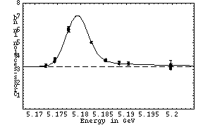
(pass1 statistics plotted above)
122536 12/25/2001 09:54 DataTaking 5.19045 1300.44 3.26 +/- 0.13
122537 12/25/2001 10:57 DataTaking 5.17431 1359.97 3.42 +/- 0.14
122538 12/25/2001 12:01 DataTaking 5.18236 1310.11 4.91 +/- 0.18
122539 12/25/2001 13:00 DataTaking 5.17240 1316.03 3.03 +/- 0.13
122540 12/25/2001 14:01 DataTaking 5.18535 1250.77 3.28 +/- 0.14
122541 12/25/2001 15:04 DataTaking 5.18846 1224.85 3.56 +/- 0.15
122542 12/25/2001 16:04 DataTaking 5.17743 1148.49 5.81 +/- 0.23
122544 12/25/2001 17:06 DataTaking 5.19046 25.75 5.83 +/- 0.23
122545 12/25/2001 17:11 DataTaking 5.19046 1177.73 3.01 +/- 0.15
122546 12/25/2001 18:09 DataTaking 5.17451 164.63 3.00 +/- 0.14
122547 12/25/2001 18:27 DataTaking 5.17449 2.08 3.42 +/- 0.51
122548 12/25/2001 18:30 DataTaking 5.17449 1172.30 3.74 +/- 0.16
122549 12/25/2001 19:24 DataTaking 5.18240 1401.59 4.88 +/- 0.18
122550 12/25/2001 20:26 DataTaking 5.17246 1346.05 3.26 +/- 0.13
122551 12/25/2001 21:29 DataTaking 5.18554 1329.78 3.22 +/- 0.14
122552 n/a n/a n/a n/a n/a n/a
122553 12/25/2001 22:44 DataTaking 5.18846 0.14
n/a
122554 n/a n/a DataTaking n/a n/a n/a
122555 12/25/2001 23:28 DataTaking 5.18845 846.82 3.42 +/- 0.16
122556 12/26/2001 00:22 DataTaking 5.17739 888.33 5.69 +/- 0.24
122557 12/26/2001 01:11 DataTaking 5.19046 873.78 3.35 +/- 0.17
122558 12/26/2001 01:53 SmallCal 5.19046 0.00 n/a
122559 12/26/2001 02:11 DataTaking 5.17432 1192.30 3.28 +/- 0.14
122560 12/26/2001 03:11 DataTaking 5.18237 1140.71 4.84 +/- 0.18
122561 n/a n/a n/a n/a 1176.66 3.07 +/- 0.14
122562 12/26/2001 05:08 DataTaking 5.18548 1136.90 3.32 +/- 0.14
122563 12/26/2001 06:07 DataTaking 5.18843 1112.63 3.15 +/- 0.14
122564 12/26/2001 07:05 DataTaking 5.17742 1265.92 5.61 +/- 0.21
122565 12/26/2001 10:47 SmallCal 0.00000 n/a n/a
December 25 Scan (High-energy tail point!)

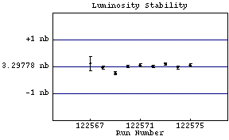
(pass1 statistics plotted above)
122566 12/26/2001 10:54 DataTaking 5.19965 27.21 0.00 +/- 0.00
122567 12/26/2001 11:01 DataTaking 5.19968 61.86 3.55 +/- 0.75
122568 12/26/2001 11:11 DataTaking 5.19968 1065.89 3.16 +/- 0.13
122569 12/26/2001 12:03 DataTaking 5.19965 947.42 3.23 +/- 0.16
122570 12/26/2001 12:53 DataTaking 5.19968 1703.45 3.17 +/- 0.11
122571 12/26/2001 14:13 DataTaking 5.19968 1679.67 3.14 +/- 0.11
122572 12/26/2001 15:33 DataTaking 5.19967 1738.11 3.18 +/- 0.11
122573 12/26/2001 16:53 DataTaking 5.19968 1751.51 3.38 +/- 0.12
122574 12/26/2001 18:13 DataTaking 5.19974 1323.95 3.28 +/- 0.13
122575 12/26/2001 19:12 DataTaking 5.19975 1202.96 3.19 +/- 0.13
December 25 Peak Point (more is coming...)
122576 12/26/2001 20:50 DataTaking 5.17934 366.90 6.33 +/- 0.45
122577 12/26/2001 21:08 DataTaking 5.17936 1348.41 6.39 +/- 0.26
122578 12/26/2001 21:54 DataTaking 5.17952 107.10 6.63 +/- 0.82
122579 12/26/2001 22:03 DataTaking 5.17939 450.00 6.46 +/- 0.56
December 25 Continuum Point
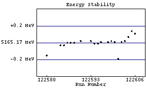 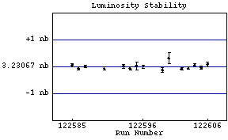
(pass1 statistics plotted above)
122580 12/26/2001 22:57 DataTaking 5.16502 94.08
n/a
122584 12/27/2001 00:41 DataTaking 5.16514 64.41 0.00 +/- 0.00
122585 12/27/2001 01:07 DataTaking 5.16514 1722.74 3.04 +/- 0.10
122586 12/27/2001 02:31 DataTaking 5.16517 1676.33 2.95 +/- 0.10
122587 12/27/2001 03:52 DataTaking 5.16517 1687.73 3.02 +/- 0.10
122588 12/27/2001 05:17 DataTaking 5.16517 7.10 3.05 +/- 0.10
122589 12/27/2001 05:25 DataTaking 5.16519 n/a n/a
122590 12/27/2001 06:51 DataTaking 5.16519 1439.01 2.94 +/- 0.12
122591 12/27/2001 08:20 SmallCal 5.16519 0.00 n/a
122592 n/a n/a n/a n/a n/a n/a
122593 12/27/2001 08:44 DataTaking 5.16519 711.48 3.42 +/- 0.17
122594 12/27/2001 09:24 DataTaking 5.16516 779.10 3.47 +/- 0.20
122595 12/27/2001 10:02 DataTaking 5.16516 177.59 3.45 +/- 0.39
122596 12/27/2001 10:15 DataTaking 5.16518 1331.51 3.07 +/- 0.13
122597 12/27/2001 11:26 SmallCal 5.16518 0.00 n/a
122598 12/27/2001 11:43 DataTaking 5.16518 20.93
n/a
122599 12/27/2001 12:06 DataTaking 5.16519 424.63 2.93 +/- 0.19
122600 12/27/2001 12:34 DataTaking 5.16518 111.70 4.15 +/- 0.48
122601 12/27/2001 12:43 DataTaking 5.16498 0.00 3.79 +/- 0.34
122602 12/27/2001 12:51 DataTaking 5.16518 1753.34 3.00 +/- 0.10
122603 12/27/2001 14:11 DataTaking 5.16519 1848.08 2.99 +/- 0.10
122604 12/27/2001 15:33 DataTaking 5.16524 1803.18 3.13 +/- 0.10
122605 12/27/2001 16:53 DataTaking 5.16531 1806.14 3.31 +/- 0.11
122606 12/27/2001 18:13 DataTaking 5.16528 575.73 3.21 +/- 0.21
December 25 Peak Point
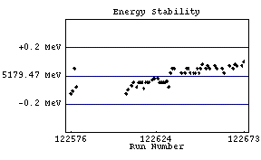 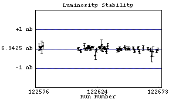
(pass1 statistics plotted above)
122607 12/27/2001 18:50 DataTaking 5.17934 20.63 3.28 +/- 0.20
122608 12/27/2001 19:04 DataTaking 5.17937 1779.12 6.56 +/- 0.20
122610 12/27/2001 20:20 DataTaking 5.17940 1926.08 6.33 +/- 0.19
122611 12/27/2001 21:29 DataTaking 5.17942 34.52
n/a
122612 12/27/2001 21:59 DataTaking 5.17942 n/a n/a
122613 12/27/2001 22:21 DataTaking 5.17939 643.89 6.87 +/- 0.35
122614 12/27/2001 22:48 DataTaking 5.17942 2348.63 6.72 +/- 0.19
122615 12/28/2001 00:08 DataTaking 5.17942 2360.99 6.67 +/- 0.19
122616 12/28/2001 01:28 DataTaking 5.17942 2337.12 6.57 +/- 0.19
122617 12/28/2001 02:48 DataTaking 5.17938 1923.32 6.56 +/- 0.21
122618 12/28/2001 04:05 DataTaking 5.17942 2260.11 6.46 +/- 0.19
122619 12/28/2001 05:25 DataTaking 5.17942 2366.49 6.51 +/- 0.20
122620 12/28/2001 06:44 DataTaking 5.17942 2362.00 6.56 +/- 0.20
122621 12/28/2001 08:05 SmallCal 5.17942 0.00 n/a
122622 12/28/2001 08:12 DataTaking 5.17944 205.18 6.71 +/- 0.83
122623 12/28/2001 08:22 DataTaking 5.17945 1020.33 6.41 +/- 0.26
122624 n/a n/a DataTaking n/a n/a n/a
122625 12/28/2001 09:43 DataTaking 5.17945 1697.01 6.68 +/- 0.20
122626 12/28/2001 10:50 DataTaking 5.17942 2218.30 6.55 +/- 0.17
122627 12/28/2001 12:14 DataTaking 5.17942 161.26 7.48 +/- 0.67
122628 12/28/2001 13:06 DataTaking 5.17942 532.47 6.45 +/- 0.36
122629 12/28/2001 13:35 DataTaking 5.17942 2277.23 6.98 +/- 0.19
122630 12/28/2001 14:57 DataTaking 5.17943 2268.79 6.75 +/- 0.18
122631 12/28/2001 16:18 DataTaking 5.17939 573.59 6.58 +/- 0.58
122632 12/28/2001 16:43 DataTaking 5.17949 674.22 6.31 +/- 0.35
122633 12/28/2001 17:11 DataTaking 5.17952 4.16 6.26 +/- 0.33
122634 12/28/2001 17:14 DataTaking 5.17952 860.44
n/a
122635 12/28/2001 17:55 SmallCal 5.17952 n/a n/a
122636 n/a n/a n/a n/a n/a n/a
122637 n/a n/a CosmicRun n/a n/a n/a
122638 12/28/2001 18:25 DataTaking 5.17949 0.00
n/a
122639 n/a n/a DataTaking n/a n/a n/a
122640 12/28/2001 18:49 DataTaking 5.17949 1322.11 6.61 +/- 0.23
122641 12/28/2001 19:46 DataTaking 5.17952 2172.85 6.52 +/- 0.18
122642 12/28/2001 21:08 DataTaking 5.17952 2376.52 6.59 +/- 0.19
122643 12/28/2001 22:30 DataTaking 5.17949 2021.84 7.18 +/- 0.23
122644 12/28/2001 23:37 SmallCal 5.17949 0.00 n/a
122645 12/28/2001 23:53 DataTaking 5.17949 10.38 7.16 +/- 0.23
122646 12/29/2001 00:34 DataTaking 5.17949 1107.62 7.01 +/- 0.25
122647 12/29/2001 01:22 DataTaking 5.17952 902.49 6.63 +/- 0.31
122648 12/29/2001 01:53 DataTaking 5.17949 1209.34 7.36 +/- 0.35
122649 12/29/2001 02:41 DataTaking 5.17952 2354.08 6.45 +/- 0.18
122650 12/29/2001 04:00 DataTaking 5.17955 2183.48 6.79 +/- 0.20
122651 12/29/2001 05:25 DataTaking 5.17952 n/a n/a
122652 12/29/2001 05:44 DataTaking 5.17952 1582.22 6.51 +/- 0.22
122653 12/29/2001 06:42 DataTaking 5.17954 2406.38 6.60 +/- 0.18
122654 12/29/2001 08:06 DataTaking 5.17952 2078.36 6.95 +/- 0.22
122655 n/a n/a n/a n/a n/a n/a
122656 12/29/2001 09:28 SmallCal 5.17952 n/a n/a
122657 12/29/2001 10:02 DataTaking 5.17954 1277.67 6.75 +/- 0.25
122658 12/29/2001 10:55 DataTaking 5.17952 907.81 6.66 +/- 0.34
122659 12/29/2001 11:30 SmallCal 5.17952 0.00 n/a
122660 n/a n/a n/a n/a n/a n/a
122661 12/29/2001 12:17 DataTaking 5.17952 748.27 6.53 +/- 0.29
122662 12/29/2001 12:56 DataTaking 5.17949 17.73
n/a
122663 n/a n/a n/a n/a n/a n/a
122664 n/a n/a DataTaking n/a n/a n/a
122665 12/29/2001 13:53 DataTaking 5.17954 1662.41 6.75 +/- 0.22
122666 12/29/2001 15:00 SmallCal 5.17954 0.00 n/a
122667 12/29/2001 15:11 DataTaking 5.17952 1188.60 6.85 +/- 0.26
122668 12/29/2001 16:08 DataTaking 5.17955 123.42 8.57 +/- 1.12
122669 12/29/2001 16:18 DataTaking 5.17954 173.40 5.93 +/- 0.72
122670 n/a n/a DataTaking n/a n/a 6.09 +/- 0.55
122671 12/29/2001 16:35 SmallCal 5.17954 0.00 n/a
122672 12/29/2001 17:20 DataTaking 5.17954 2292.27 6.70 +/- 0.18
122673 12/29/2001 18:41 DataTaking 5.17957 2333.70 6.53 +/- 0.18
122674 12/29/2001 20:04 DataTaking 5.17957 2357.75 6.81 +/- 0.19
122675 12/29/2001 21:24 DataTaking 5.17957 2263.21 6.64 +/- 0.18
122676 12/29/2001 22:46 DataTaking 5.17958 2275.97 6.60 +/- 0.18
122677 12/30/2001 00:06 DataTaking 5.17954 2279.51 6.59 +/- 0.18
122678 12/30/2001 01:27 DataTaking 5.17956 18.05 n/a
122679 12/30/2001 02:18 DataTaking 5.17959 500.90 6.55 +/- 0.33
122680 12/30/2001 02:46 DataTaking 5.17960 283.31 6.53 +/- 0.33
122681 12/30/2001 03:03 DataTaking 5.17957 1563.56 6.59 +/- 0.21
122682 12/30/2001 04:07 DataTaking 5.17959 2329.26 6.89 +/- 0.19
122683 12/30/2001 05:35 DataTaking 5.17957 2238.90 7.59 +/- 0.23
122684 12/30/2001 06:58 DataTaking 5.17954 2379.23 6.63 +/- 0.20
122685 12/30/2001 08:24 DataTaking 5.17953 1339.95 6.97 +/- 0.28
122686 12/30/2001 09:07 DataTaking 5.17954 517.70 6.81 +/- 0.30
122687 12/30/2001 09:55 DataTaking 5.17956 1863.15 6.60 +/- 0.19
122688 12/30/2001 11:18 DataTaking 5.17957 238.33 6.60 +/- 0.58
122689 12/30/2001 11:56 DataTaking 5.17959 541.78 6.65 +/- 0.37
122690 12/30/2001 12:46 DataTaking 5.17954 2046.52 6.72 +/- 0.20
122691 12/30/2001 14:10 DataTaking 5.17956 2196.33 6.52 +/- 0.18
122692 12/30/2001 15:32 DataTaking 5.17954 2169.78 6.82 +/- 0.21
122693 12/30/2001 16:53 DataTaking 5.17955 1489.89 6.50 +/- 0.23
122694 n/a n/a n/a n/a n/a n/a
122695 12/30/2001 18:22 DataTaking 5.17956 2026.71 6.71 +/- 0.19
122696 12/30/2001 19:38 DataTaking 5.17956 1922.38 6.90 +/- 0.22
122697 12/30/2001 20:46 SmallCal 5.17956 0.00 n/a
122698 12/30/2001 21:00 DataTaking 5.17916 2163.89 6.59 +/- 0.19
122699 12/30/2001 22:18 DataTaking 5.17912 2292.63 6.71 +/- 0.19
122700 12/30/2001 23:39 DataTaking 5.17912 2262.55 6.76 +/- 0.19
122701 12/31/2001 00:57 DataTaking 5.17960 2001.37 6.83 +/- 0.43
122702 12/31/2001 02:22 DataTaking 5.17916 n/a 6.28 +/- 0.34
122703 12/31/2001 03:17 DataTaking 5.17915 488.27 7.34 +/- 0.38
122704 12/31/2001 03:48 DataTaking 5.17916 2208.11 6.78 +/- 0.19
122705 12/31/2001 05:09 DataTaking 5.17957 1619.86 6.97 +/- 0.22
122706 12/31/2001 08:28 DRBigCal 0.00000 47.95 n/a
122707 n/a n/a SmallCal n/a n/a n/a
122708 12/31/2001 08:51 DataTaking 5.17913 918.96 6.39 +/- 0.32
122709 12/31/2001 09:40 DataTaking 5.17916 55.01 7.43 +/- 0.94
122710 12/31/2001 10:10 DataTaking 5.17913 2182.03 6.67 +/- 0.20
122711 12/31/2001 11:33 DataTaking 5.17915 2062.82 6.60 +/- 0.20
122712 12/31/2001 13:09 DataTaking 5.17913 1677.64 6.64 +/- 0.21
122713 12/31/2001 14:18 DataTaking 5.17913 1942.66 n/a
122714 12/31/2001 15:38 DataTaking 5.17910 1669.70 6.66 +/- 0.24
122715 n/a n/a SmallCal n/a n/a n/a
122716 12/31/2001 17:04 SmallCal 5.17910 0.00 n/a
122717 n/a n/a SmallCal n/a 0.00 n/a
122718 12/31/2001 17:35 SmallCal 5.17910 0.00 n/a
122719 12/31/2001 17:43 DataTaking 5.17911 10.05 0.00 +/- 0.00
122720 12/31/2001 17:50 SmallCal 5.17911 0.00 n/a
122721 12/31/2001 18:00 DataTaking 5.17916 246.25 6.32 +/- 0.39
122722 12/31/2001 18:31 DataTaking 5.17904 2160.47 6.32 +/- 0.17
122723 12/31/2001 19:51 DataTaking 5.17906 2241.95 6.80 +/- 0.20
122724 12/31/2001 21:10 SmallCal 5.17906 0.00 n/a
122725 12/31/2001 21:17 SmallCal 5.17906 0.00 n/a
122726 12/31/2001 21:26 DataTaking 5.17908 1690.27 6.84 +/- 0.20
122727 12/31/2001 22:28 DataTaking 5.17909 2279.62 6.47 +/- 0.17
122728 12/31/2001 23:47 DataTaking 5.17909 1045.10 6.84 +/- 0.30
122729 01/01/2002 00:29 DataTaking 5.17953 2158.33 6.37 +/- 0.18
122730 01/01/2002 01:50 DataTaking 5.17912 2279.12 6.50 +/- 0.18
122731 01/01/2002 03:12 DataTaking 5.17908 2042.82 6.61 +/- 0.20
122732 01/01/2002 04:24 SmallCal 5.17908 0.00 n/a
122733 01/01/2002 04:36 DataTaking 5.17911 1588.38 6.81 +/- 0.22
122734 01/01/2002 05:57 DataTaking 5.17908 1854.99 6.56 +/- 0.19
122735 01/01/2002 07:05 DataTaking 5.17912 2291.51 6.71 +/- 0.18
122736 01/01/2002 08:28 DataTaking 5.17906 2364.63 6.59 +/- 0.18
122737 01/01/2002 09:54 DataTaking 5.17909 2308.82 6.88 +/- 0.18
122738 01/01/2002 11:58 DataTaking 5.17912 2181.10 6.94 +/- 0.18
122739 01/01/2002 13:21 DataTaking 5.17911 2355.64 6.90 +/- 0.19
122740 01/01/2002 14:42 DataTaking 5.17911 2296.47 6.97 +/- 0.19
122741 01/01/2002 16:02 DataTaking 5.17988 2029.23 6.57 +/- 0.18
122742 n/a n/a DataTaking n/a n/a 6.59 +/- 0.18
122743 01/01/2002 17:30 DataTaking 5.17901 2241.12 6.81 +/- 0.18
122744 01/01/2002 18:53 DataTaking 5.17904 2300.08 6.86 +/- 0.19
122745 01/01/2002 20:14 DataTaking 5.17909 2321.86 6.53 +/- 0.18
122746 01/01/2002 21:36 DataTaking 5.17907 2419.75 6.75 +/- 0.18
122747 01/01/2002 23:04 DataTaking 5.17910 2177.64 6.94 +/- 0.20
122748 01/02/2002 00:19 SmallCal 5.17910 0.00 n/a
122749 01/02/2002 00:36 DataTaking 5.17912 1817.04 6.83 +/- 0.19
122750 n/a n/a DataTaking n/a n/a n/a
122751 01/02/2002 02:14 DataTaking 5.17909 1290.60 6.88 +/- 0.22
122752 01/02/2002 03:09 DataTaking 5.17910 2167.92 6.91 +/- 0.18
122753 01/02/2002 04:28 DataTaking 5.17910 2313.64 6.71 +/- 0.17
122754 01/02/2002 05:50 DataTaking 5.17909 2281.12 6.16 +/- 0.16
122755 01/02/2002 07:11 DataTaking 5.17909 1565.62 6.55 +/- 0.22
122756 n/a n/a DataTaking n/a n/a 6.61 +/- 0.22
122757 01/02/2002 09:06 CCBigCal 5.17909 0.00 n/a
122758 01/02/2002 09:17 DRBigCal 5.17909 0.03 n/a
122759 01/02/2002 09:22 SmallCal 5.17909 0.00 n/a
122760 01/02/2002 09:40 SVXBigCal 5.17909 0.00 n/a
122761 n/a n/a n/a n/a n/a n/a
122762 n/a n/a n/a n/a n/a n/a
122763 01/02/2002 17:51 DataTaking 5.17701 0.05 n/a
122764 01/02/2002 18:15 DataTaking 5.17705 3.15 0.00 +/- 0.00
122765 01/02/2002 18:20 SmallCal 5.17705 0.00 n/a
January 3 Scan
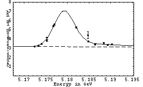
(pass1 statistics plotted above)
122766 01/02/2002 18:32 DataTaking 5.17702 1222.71 5.54 +/- 0.20
122767 01/02/2002 19:30 DataTaking 5.19034 1395.10 3.52 +/- 0.14
122768 01/02/2002 20:32 DataTaking 5.17405 1474.66 3.59 +/- 0.14
122769 01/02/2002 21:34 DataTaking 5.18205 1365.95 4.92 +/- 0.18
122770 01/02/2002 22:34 DataTaking 5.17243 1372.38 3.09 +/- 0.13
122771 01/02/2002 23:36 DataTaking 5.18476 48.25 3.14 +/- 0.13
122772 01/02/2002 23:52 DataTaking 5.18490 1151.89 3.30 +/- 0.14
122773 01/03/2002 00:55 DataTaking 5.18843 1272.85 3.42 +/- 0.14
122776 01/03/2002 02:29 DataTaking 5.17679 953.70 5.30 +/- 0.21
122777 01/03/2002 03:26 DataTaking 5.18936 1296.14 3.30 +/- 0.14
122778 01/03/2002 04:33 DataTaking 5.17335 1326.19 3.08 +/- 0.13
122779 01/03/2002 05:42 DataTaking 5.18641 1340.05 3.44 +/- 0.15
122780 01/03/2002 06:46 DataTaking 5.17528 285.62 2.98 +/- 0.33
122781 01/03/2002 06:58 DataTaking 5.17527 1109.73 4.00 +/- 0.19
122782 01/03/2002 07:42 SmallCal 5.17527 0.00 n/a
January 3 Continuum Point
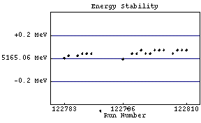 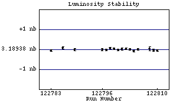
(pass1 statistics plotted above)
122783 01/03/2002 07:57 DataTaking 5.16506 1386.41 3.01 +/- 0.10
122784 01/03/2002 09:18 DataTaking 5.16508 51.42 3.02 +/- 0.10
122786 01/03/2002 11:19 DataTaking 5.16508 1085.59 3.17 +/- 0.13
122787 01/03/2002 12:12 DataTaking 5.16510 616.38
n/a
122788 01/03/2002 13:18 DataTaking 5.16510 0.30 0.00 +/- 0.00
122789 01/03/2002 13:42 DataTaking 5.16510 1600.85 3.04 +/- 0.11
122790 n/a n/a DataTaking n/a n/a 3.02 +/- 0.11
122791 01/03/2002 15:06 DataTaking 5.16460 9.23 0.00 +/- 0.00
122792 n/a n/a DataTaking n/a n/a 3.98 +/- 0.77
122793 n/a n/a DataTaking n/a n/a n/a
122794 01/03/2002 15:51 SmallCal 5.16460 0.00 n/a
122795 n/a n/a DataTaking n/a n/a n/a
122796 01/03/2002 16:38 DataTaking 5.16505 1897.92 3.10 +/- 0.10
122797 01/03/2002 17:57 DataTaking 5.16462 1658.47 3.13 +/- 0.12
122798 01/03/2002 19:20 DataTaking 5.16510 1689.97 3.26 +/- 0.11
122799 01/03/2002 20:43 DataTaking 5.16510 1794.00 3.21 +/- 0.11
122800 01/03/2002 22:12 DataTaking 5.16513 1672.63 3.13 +/- 0.11
122801 01/03/2002 23:29 DataTaking 5.16510 1622.60 3.07 +/- 0.11
122802 01/04/2002 00:52 DataTaking 5.16510 1930.88 3.11 +/- 0.12
122803 01/04/2002 02:17 DataTaking 5.16513 1855.18 3.21 +/- 0.11
122804 01/04/2002 03:40 DataTaking 5.16513 1849.42 3.13 +/- 0.12
122805 01/04/2002 05:04 DataTaking 5.16513 1551.15 3.23 +/- 0.13
122806 01/04/2002 06:13 SmallCal 5.16513 0.00 n/a
122807 01/04/2002 06:26 DataTaking 5.16510 0.00 3.22 +/- 0.12
122808 01/04/2002 06:35 DataTaking 5.16513 397.92 3.54 +/- 0.28
122809 01/04/2002 06:57 DataTaking 5.16513 1230.55 3.02 +/- 0.13
122810 01/04/2002 07:56 DataTaking 5.16513 1667.23 2.98 +/- 0.11
122811 n/a n/a DataTaking n/a n/a 3.00 +/- 0.11
January 3 Peak Point
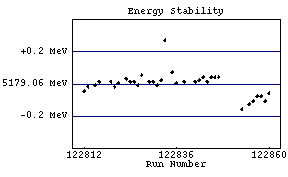 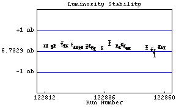
(pass1 statistics plotted above)
122812 01/04/2002 09:29 DataTaking 5.17901 2120.47 6.52 +/- 0.20
122813 01/04/2002 10:47 DataTaking 5.17904 1834.00 6.63 +/- 0.23
122815 01/04/2002 12:06 DataTaking 5.17905 2068.05 6.62 +/- 0.19
122816 01/04/2002 13:23 DataTaking 5.17907 1921.07 6.70 +/- 0.22
122817 01/04/2002 14:43 SmallCal 5.17907 n/a n/a
122818 01/04/2002 14:54 DataTaking 5.17904 n/a 0.00 +/- 0.00
122819 01/04/2002 15:23 DataTaking 5.17907 922.08 6.93 +/- 0.29
122820 01/04/2002 16:03 DataTaking 5.17904 2348.25 6.81 +/- 0.19
122821 01/04/2002 17:25 DataTaking 5.17906 2142.38 6.59 +/- 0.20
122822 01/04/2002 18:35 SmallCal 5.17906 0.00 n/a
122823 01/04/2002 18:48 DataTaking 5.17909 2309.23 6.88 +/- 0.19
122824 01/04/2002 20:07 DataTaking 5.17907 2372.58 6.48 +/- 0.18
122825 01/04/2002 21:28 DataTaking 5.17907 2343.48 6.65 +/- 0.19
122826 01/04/2002 22:49 DataTaking 5.17905 2295.73 6.45 +/- 0.19
122827 01/05/2002 00:11 DataTaking 5.17911 2223.48 6.54 +/- 0.19
122828 n/a n/a n/a n/a n/a n/a
122829 01/05/2002 02:04 DataTaking 5.17907 1328.71 6.71 +/- 0.25
122830 01/05/2002 02:56 DataTaking 5.17907 2284.77 6.68 +/- 0.21
122831 01/05/2002 04:17 DataTaking 5.17905 2316.66 6.53 +/- 0.19
122832 01/05/2002 05:37 DataTaking 5.17908 2335.29 6.45 +/- 0.19
122833 01/05/2002 08:14 DataTaking 5.17933 2354.00
n/a
122834 n/a n/a DataTaking n/a n/a n/a
122835 01/05/2002 08:37 DataTaking 5.17913 2072.47 6.63 +/- 0.20
122836 01/05/2002 10:42 DataTaking 5.17906 270.74 6.65 +/- 0.20
122837 n/a n/a n/a n/a n/a n/a
122838 01/05/2002 11:22 DataTaking 5.17907 977.18 7.02 +/- 0.29
122839 01/05/2002 12:04 SmallCal 5.17907 0.00 n/a
122840 01/05/2002 12:15 SmallCal 5.17907 0.00 n/a
122841 01/05/2002 12:25 DataTaking 5.17907 2334.38 6.80 +/- 0.18
122842 01/05/2002 13:50 DataTaking 5.17908 2799.84 6.35 +/- 0.16
122843 01/05/2002 15:25 DataTaking 5.17910 2795.07 6.66 +/- 0.17
122844 01/05/2002 17:03 DataTaking 5.17907 2717.45 6.46 +/- 0.17
122845 01/05/2002 18:38 DataTaking 5.17910 2770.05 6.66 +/- 0.17
122846 01/05/2002 20:14 DataTaking 5.17910 2744.11 6.33 +/- 0.17
122847 01/05/2002 21:51 DataTaking 5.17910 2593.78
n/a
122848 n/a n/a n/a n/a n/a n/a
122849 01/06/2002 00:05 SmallCal 5.17910 n/a n/a
122850 n/a n/a SmallCal n/a n/a n/a
122851 01/06/2002 00:26 SmallCal 5.17910 n/a n/a
122852 01/06/2002 01:15 DataTaking 5.17887 n/a n/a
122853 01/06/2002 03:14 DataTaking 5.17890 950.25 6.83 +/- 0.26
122854 n/a n/a DataTaking n/a n/a n/a
122855 01/06/2002 04:33 DataTaking 5.17893 1489.42 6.62 +/- 0.21
122856 01/06/2002 05:54 DataTaking 5.17895 294.63 6.06 +/- 0.52
122857 01/06/2002 06:13 DataTaking 5.17898 5.78 5.86 +/- 0.42
122858 01/06/2002 06:17 DataTaking 5.17898 2491.32 6.55 +/- 0.17
122859 01/06/2002 07:50 DataTaking 5.17895 2615.48 6.65 +/- 0.18
122860 01/06/2002 09:23 DataTaking 5.17900 2480.74 6.75 +/- 0.20
122861 01/06/2002 10:48 SmallCal 5.17900 0.00 n/a
122862 01/06/2002 11:00 DataTaking 5.17896 2651.92 6.72 +/- 0.16
122863 01/06/2002 12:32 DataTaking 5.17899 2680.90 6.55 +/- 0.16
122864 01/06/2002 14:08 DataTaking 5.17900 0.00 6.57 +/- 0.16
122865 n/a n/a DataTaking n/a n/a n/a
122866 01/06/2002 14:25 DataTaking 5.17900 2135.92 6.85 +/- 0.19
122867 01/06/2002 15:42 DataTaking 5.17897 2846.47 6.78 +/- 0.18
122868 01/06/2002 17:18 DataTaking 5.17897 2759.48 6.69 +/- 0.18
122869 01/06/2002 18:55 DataTaking 5.17897 2856.79 6.66 +/- 0.18
122870 01/06/2002 20:29 DataTaking 5.17897 2749.95 6.82 +/- 0.18
122871 01/06/2002 22:06 DataTaking 5.17900 2429.75 6.45 +/- 0.20
122872 01/06/2002 23:29 SmallCal 5.17900 0.00 n/a
122873 01/06/2002 23:44 DataTaking 5.17896 2023.64 6.74 +/- 0.20
122874 01/07/2002 01:26 DataTaking 5.17897 n/a n/a
122875 01/07/2002 02:53 DataTaking 5.17896 110.69 6.56 +/- 0.81
122876 01/07/2002 03:03 SmallCal 5.17896 0.00 n/a
122877 n/a n/a n/a n/a n/a n/a
122878 n/a n/a n/a n/a n/a n/a
122879 01/07/2002 04:43 DataTaking 5.17897 1620.85 6.68 +/- 0.21
122880 01/07/2002 05:46 DataTaking 5.17897 1270.90 6.76 +/- 0.28
122881 01/07/2002 06:30 DataTaking 5.17897 2857.37 6.66 +/- 0.18
122882 01/07/2002 14:52 CosmicRun 5.17897 0.00 0.00 +/- 0.00
122883 n/a n/a n/a n/a n/a n/a
122884 01/07/2002 16:08 CosmicRun 5.17897 0.05 104.89 +/- 78.41
122885 01/07/2002 16:30 CosmicRun 5.17897 0.00 n/a
122886 n/a n/a n/a n/a n/a n/a
122887 01/07/2002 18:31 CosmicRun 5.17897 0.82 277.64 +/- 200.64
122888 01/07/2002 18:44 CosmicRun 5.17897 0.00 277.64 +/- 200.64
122889 01/07/2002 18:55 CosmicRun 5.17897 0.00 0.00 +/- 0.00
122890 01/07/2002 18:59 CosmicRun 5.17897 0.00 n/a
122891 01/07/2002 19:03 CosmicRun 5.17897 0.00 n/a
122892 n/a n/a CosmicRun n/a n/a n/a
122893 01/07/2002 19:31 CosmicRun 5.17897 0.03 0.00 +/- 0.00
122894 01/07/2002 21:05 CosmicRun 5.17897 0.03 n/a
122895 n/a n/a n/a n/a n/a n/a
122896 n/a n/a n/a n/a n/a n/a
122897 01/08/2002 08:58 CCBigCal 5.17897 n/a n/a
122898 01/08/2002 09:11 CCBigCal 5.17897 n/a n/a
122899 01/08/2002 09:25 DRBigCal 5.17897 0.00 n/a
122900 01/08/2002 09:30 SmallCal 5.17897 0.00 n/a
122901 01/08/2002 09:49 SVXBigCal 5.17897 0.00 n/a
122902 01/08/2002 12:30 CosmicRun 5.17897 0.00 0.00 +/- 0.00
122903 n/a n/a SmallCal n/a n/a n/a
122904 n/a n/a n/a n/a n/a n/a
122905 01/08/2002 13:08 CosmicRun 5.17897 0.00 0.00 +/- 0.00
122906 01/08/2002 13:16 SmallCal 5.17897 0.00 n/a
122907 01/08/2002 14:01 CosmicRun 5.17897 0.03 0.00 +/- 0.00
122908 01/08/2002 14:23 SmallCal 5.17897 0.00 n/a
122909 01/08/2002 14:53 CosmicRun 5.17897 0.00 0.00 +/- 0.00
122910 01/08/2002 14:59 RICHCal 165.77600 0.00 n/a
122911 01/08/2002 15:08 CosmicRun 165.77600 n/a 0.00 +/- 0.00
122912 01/08/2002 15:41 CosmicRun 165.77600 0.00 n/a
122913 01/08/2002 16:11 CosmicRun 165.77600 0.00 0.00 +/- 0.00
122914 01/08/2002 16:29 CosmicRun 165.77600 0.00 0.00 +/- 0.00
122915 01/08/2002 17:50 CosmicRun 165.77600 0.00 0.00 +/- 0.00
122916 01/08/2002 18:12 CosmicRun 165.77600 0.00 0.00 +/- 0.00
122917 01/08/2002 18:18 RICHCal 36.25620 0.00 n/a
122918 01/08/2002 18:39 RICHCal 36.25620 0.00 n/a
122919 01/08/2002 18:45 CosmicRun 36.25620 0.00 n/a
122920 01/08/2002 19:06 RICHCal 36.25620 0.00 n/a
122921 01/08/2002 19:12 CosmicRun 36.25620 0.00 0.00 +/- 0.00
122922 01/08/2002 19:27 RICHCal 36.25620 0.00 n/a
122923 01/08/2002 19:33 CosmicRun 36.25620 0.00 0.25 +/- 0.36
122924 01/08/2002 19:41 CosmicRun 36.25620 0.00 0.00 +/- 0.00
122925 01/08/2002 19:54 CosmicRun 36.25620 0.00 n/a
122926 n/a n/a n/a n/a n/a n/a
122927 n/a n/a n/a n/a n/a n/a
122928 01/08/2002 20:32 RICHCal 36.25620 0.00 n/a
122929 01/08/2002 20:40 CosmicRun 36.25620 0.00 0.00 +/- 0.00
122930 01/08/2002 21:25 RICHCal 36.25620 0.00 n/a
122931 01/08/2002 21:30 CosmicRun 36.25620 0.03 0.00 +/- 0.00
122932 01/08/2002 21:45 RICHCal 36.25620 0.00 n/a
122933 01/08/2002 21:50 CosmicRun 36.25620 0.00 0.25 +/- 0.36
122934 01/08/2002 21:57 RICHCal 36.25620 0.00 n/a
122935 01/08/2002 22:02 CosmicRun 36.25620 0.00 0.00 +/- 0.00
122936 01/08/2002 22:12 RICHCal 36.25620 0.00 n/a
122937 01/08/2002 22:18 CosmicRun 36.25620 0.03 0.00 +/- 0.00
122938 01/08/2002 22:31 RICHCal 36.25620 0.00 n/a
122939 01/08/2002 22:38 CosmicRun 36.25620 0.00 0.00 +/- 0.00
122940 01/08/2002 22:59 RICHCal 36.25620 0.00 n/a
122941 n/a n/a CosmicRun n/a n/a 0.00 +/- 0.00
122942 n/a n/a CosmicRun n/a n/a 0.00 +/- 0.00
122943 01/08/2002 23:16 SmallCal 36.25620 0.00 n/a
122944 01/08/2002 23:23 CosmicRun 36.25620 0.03 0.00 +/- 0.00
122945 01/09/2002 00:04 RICHCal 5.16466 0.00 n/a
122946 01/09/2002 00:10 CosmicRun 5.16466 0.03 0.00 +/- 0.00
122947 01/09/2002 00:17 RICHCal 5.16482 0.00 n/a
122948 01/09/2002 00:22 CosmicRun 5.16482 0.00 62.04 +/- 67.96
122949 01/09/2002 00:32 RICHCal 5.16489 0.00 n/a
122950 01/09/2002 00:43 CosmicRun 5.16489 0.00 0.00 +/- 0.00
122951 01/09/2002 01:15 RICHCal 5.16486 0.00 n/a
122952 01/09/2002 01:48 CosmicRun 5.16486 0.03 23.04 +/- 10.80
122953 01/09/2002 02:13 RICHCal 5.16479 0.00 n/a
122954 01/09/2002 02:34 CosmicRun 5.16479 0.00 241.94 +/- 175.41
122955 01/09/2002 02:43 RICHCal 5.16476 0.00 n/a
122956 01/09/2002 02:49 CosmicRun 5.16476 0.03 37.22 +/- 24.82
122957 01/09/2002 02:59 RICHCal 5.16476 0.00 n/a
122958 01/09/2002 03:03 CosmicRun 5.16476 0.00 28.95 +/- 19.98
122959 01/09/2002 03:18 RICHCal 5.16476 0.00 n/a
122960 01/09/2002 03:45 CosmicRun 5.16476 0.00 28.36 +/- 12.85
122961 01/09/2002 03:56 RICHCal 5.16471 0.00 n/a
122962 01/09/2002 04:02 CosmicRun 5.16471 0.03 173.71 +/- 179.80
122963 01/09/2002 08:43 SmallCal 5.16471 n/a n/a
122964 01/09/2002 09:17 RICHCal 5.16537 n/a n/a
122965 01/09/2002 09:40 RICHCal 5.16534 0.00 n/a
122966 01/09/2002 09:57 CosmicRun 5.16534 49.29 0.00 +/- 0.00
122967 01/09/2002 10:15 DataTaking 5.16508 519.59 3.08 +/- 0.17
122968 01/09/2002 11:25 RandomLow 5.16508 224.25 3.20 +/- 0.16
122969 01/09/2002 11:55 DataTaking 4.72915 0.00 111.66 +/- 117.69
122970 01/09/2002 12:03 CosmicRun 4.72915 5.10 52.57 +/- 9.65
122971 n/a n/a n/a n/a n/a n/a
122972 01/09/2002 14:08 RandomLow 4.72915 0.47 n/a
122973 n/a n/a n/a n/a n/a n/a
122974 n/a n/a CosmicRun n/a n/a n/a
122975 n/a n/a n/a n/a n/a n/a
122976 01/09/2002 17:43 RandomLow 0.00000 365.18 0.00 +/- 0.00
122977 01/09/2002 17:56 RICHCal 5.85362 0.00 n/a
122978 n/a n/a n/a n/a n/a n/a
122979 01/09/2002 18:13 CosmicRun 5.85362 0.00 0.00 +/- 0.00
122980 01/09/2002 18:18 CosmicRun 5.85362 16.52 13.52 +/- 7.92
122981 01/09/2002 18:25 RICHCal 4.72897 0.00 n/a
122982 01/09/2002 18:39 CosmicRun 4.72897 381.78 17.02 +/- 0.49
122983 01/09/2002 19:25 RICHCal 4.72881 2.99 n/a
122984 01/09/2002 19:34 CosmicRun 4.72881 0.30 17.02 +/- 0.49
122985 01/09/2002 19:54 CosmicRun 4.72881 0.00 25.37 +/- 12.07
122986 01/09/2002 20:21 DataTaking 4.72879 457.18 16.43 +/- 0.80
122987 01/09/2002 20:52 DataTaking 4.72877 330.88 16.57 +/- 0.98
122988 01/09/2002 21:12 DataTaking 4.72881 454.47 15.42 +/- 0.83
122989 n/a n/a n/a n/a n/a n/a
122990 01/09/2002 21:47 DataTaking 4.72878 218.49 16.45 +/- 1.38
122991 01/09/2002 21:58 DataTaking 4.72900 25.56 15.42 +/- 2.20
122992 n/a n/a DataTaking n/a n/a 14.55 +/- 1.91
January 10 Scan
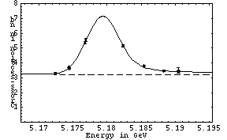
(pass1 statistics plotted above)
122993 01/09/2002 22:17 DataTaking 5.17692 797.59 5.35 +/- 0.19
122994 01/09/2002 23:21 DataTaking 5.19045 145.62 3.63 +/- 0.41
122995 01/09/2002 23:38 DataTaking 5.19048 974.66 3.32 +/- 0.13
122996 01/10/2002 00:55 DataTaking 5.17445 540.19 3.59 +/- 0.15
122998 01/10/2002 01:53 DataTaking 5.17448 967.86 3.63 +/- 0.15
122999 01/10/2002 02:58 DataTaking 5.18235 950.79 4.88 +/- 0.17
123000 n/a n/a n/a n/a n/a n/a
123001 01/10/2002 04:18 DataTaking 5.17243 984.77 3.30 +/- 0.13
123002 01/10/2002 05:32 DataTaking 5.18543 971.07 3.70 +/- 0.15
123003 01/10/2002 06:39 DataTaking 5.18832 1063.23 3.27 +/- 0.13
123004 01/10/2002 07:43 DataTaking 5.17678 992.03 5.09 +/- 0.18
123005 n/a n/a DataTaking n/a n/a 5.05 +/- 0.18
123006 01/10/2002 08:42 RICHCal 5.17914 0.00 n/a
123007 n/a n/a DataTaking n/a n/a 0.00 +/- 0.00
123008 n/a n/a DataTaking n/a n/a 0.00 +/- 0.00
123009 01/10/2002 09:25 DataTaking 5.17899 n/a n/a
January 10 Peak Point (more is coming...)
123010 01/10/2002 09:47 DataTaking 5.17902 201.15 7.39 +/- 0.54
January 10 Continuum Point
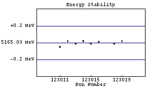 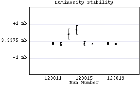
(pass1 statistics plotted above)
123011 01/10/2002 10:11 DataTaking 5.16498 1367.62 3.09 +/- 0.10
123012 01/10/2002 11:33 DataTaking 5.16505 660.05 3.16 +/- 0.11
123013 01/10/2002 13:45 DataTaking 5.16502 61.70 0.00 +/- 0.00
123014 01/10/2002 14:40 DataTaking 5.16505 76.77 0.00 +/- 0.00
123015 01/10/2002 15:38 DataTaking 5.16502 228.36 3.24 +/- 0.26
123016 01/10/2002 15:58 DataTaking 5.16504 1530.55 3.08 +/- 0.11
123018 01/10/2002 17:17 DataTaking 5.16502 1699.51 3.24 +/- 0.11
123019 01/10/2002 18:38 DataTaking 5.16505 1511.04 3.05 +/- 0.09
January 10 Peak Point
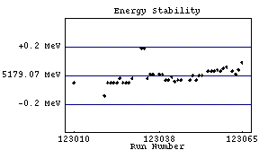 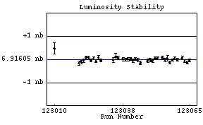
(pass1 statistics plotted above)
123020 01/10/2002 20:08 DataTaking 5.17893 1177.15 6.41 +/- 0.20
123021 01/10/2002 21:03 DataTaking 5.17902 2089.26 6.41 +/- 0.19
123022 01/10/2002 22:26 DataTaking 5.17902 2098.47 6.60 +/- 0.18
123023 01/10/2002 23:47 DataTaking 5.17902 2191.29 6.54 +/- 0.17
123024 01/11/2002 01:10 DataTaking 5.17902 2310.85 6.46 +/- 0.17
123025 01/11/2002 02:38 DataTaking 5.17905 2039.26 6.52 +/- 0.18
123026 01/11/2002 04:00 DataTaking 5.17902 2161.59 6.70 +/- 0.19
123027 01/11/2002 05:22 DataTaking 5.17902 2083.84 6.72 +/- 0.19
123028 01/11/2002 06:45 DataTaking 5.17902 2040.41 6.57 +/- 0.19
123029 01/11/2002 08:07 DataTaking 5.17905 2119.53 6.81 +/- 0.19
123032 01/11/2002 10:05 DataTaking 5.17926 0.00 6.77 +/- 0.19
123033 01/11/2002 10:08 DataTaking 5.17926 0.03 0.00 +/- 0.00
123034 01/11/2002 10:33 DataTaking 5.17905 881.45 6.89 +/- 0.27
123035 01/11/2002 11:12 DataTaking 5.17908 676.88 6.60 +/- 0.33
123036 01/11/2002 11:44 DataTaking 5.17908 2156.14 6.67 +/- 0.18
123037 n/a n/a n/a n/a n/a n/a
123038 01/11/2002 13:29 DataTaking 5.17908 1370.16 6.32 +/- 0.22
123039 01/11/2002 14:26 DataTaking 5.17908 2246.99 6.86 +/- 0.19
123040 01/11/2002 15:47 DataTaking 5.17904 2233.78 6.87 +/- 0.19
123041 01/11/2002 17:11 DataTaking 5.17904 2093.64 6.72 +/- 0.19
123042 01/11/2002 18:33 DataTaking 5.17906 2261.53 6.79 +/- 0.19
123043 01/11/2002 19:55 DataTaking 5.17903 2254.93 6.48 +/- 0.18
123044 01/11/2002 21:16 DataTaking 5.17904 1711.64 6.64 +/- 0.23
123045 01/11/2002 22:18 DataTaking 5.17904 2200.71 6.31 +/- 0.18
123046 01/11/2002 23:40 RICHCal 5.17907 6.30 n/a
123047 n/a n/a RICHCal n/a 0.00 n/a
123048 01/11/2002 23:51 DataTaking 5.17904 1872.41 6.55 +/- 0.18
123049 01/12/2002 01:03 DataTaking 5.17907 2235.97 6.77 +/- 0.18
123050 01/12/2002 02:34 DataTaking 5.17904 2228.27 6.45 +/- 0.18
123051 01/12/2002 03:56 DataTaking 5.17907 2263.81 6.38 +/- 0.18
123052 01/12/2002 05:20 DataTaking 5.17907 2082.30 6.69 +/- 0.20
123053 01/12/2002 06:37 RICHCal 5.17909 0.00 n/a
123054 01/12/2002 06:53 DataTaking 5.17910 2101.64 6.68 +/- 0.19
123055 01/12/2002 08:14 DataTaking 5.17910 1503.92 6.42 +/- 0.21
123056 01/12/2002 09:34 DataTaking 5.17910 710.63 6.59 +/- 0.33
123057 01/12/2002 10:04 DataTaking 5.17911 2562.63 6.63 +/- 0.16
123058 01/12/2002 11:40 DataTaking 5.17910 2560.00 6.50 +/- 0.17
123059 01/12/2002 13:16 DataTaking 5.17912 2478.14 6.49 +/- 0.17
123060 01/12/2002 14:53 DataTaking 5.17913 2365.62 6.80 +/- 0.17
123061 01/12/2002 16:19 RICHCal 5.17909 3.86 n/a
123062 01/12/2002 16:29 DataTaking 5.17910 2513.78 6.65 +/- 0.17
123063 01/12/2002 18:05 DataTaking 5.17908 2537.75 6.62 +/- 0.17
123064 01/12/2002 19:41 DataTaking 5.17911 2565.34 6.74 +/- 0.17
123065 01/12/2002 21:19 DataTaking 5.17916 2497.86 6.73 +/- 0.18
123066 01/12/2002 22:53 DataTaking 5.17913 2595.21 6.65 +/- 0.17
123067 01/13/2002 00:32 DataTaking 5.17907 2532.85 6.40 +/- 0.16
123068 01/13/2002 02:16 DataTaking 5.17910 2255.15 6.40 +/- 0.18
123069 01/13/2002 03:49 DataTaking 5.17913 132.52 6.89 +/- 0.86
123070 01/13/2002 03:57 DataTaking 5.17912 2258.82 6.27 +/- 0.17
123071 01/13/2002 05:27 DataTaking 5.17912 1.37 6.31 +/- 0.17
123072 n/a n/a n/a n/a n/a n/a
123073 n/a n/a n/a n/a n/a n/a
123074 01/13/2002 06:28 DataTaking 5.17912 518.30 6.61 +/- 0.37
123075 01/13/2002 06:55 RICHCal 5.17912 3.78 n/a
123076 01/13/2002 07:02 RICHCal 5.17990 23.75 n/a
123077 01/13/2002 07:07 DataTaking 5.17912 250.11 6.14 +/- 0.75
123078 01/13/2002 07:46 DataTaking 5.17913 327.23 7.26 +/- 0.65
123079 01/13/2002 08:13 RICHCal 5.17912 5.04 n/a
123080 01/13/2002 08:22 DataTaking 5.17909 111.67 0.00 +/- 0.00
123081 01/13/2002 08:29 DataTaking 5.17909 920.90 6.24 +/- 0.31
123082 01/13/2002 09:09 RICHCal 5.17907 4.85 n/a
123083 01/13/2002 09:23 DataTaking 5.17912 2527.73 6.31 +/- 0.16
123084 01/13/2002 11:01 DataTaking 5.17910 1097.01 6.36 +/- 0.28
123085 01/13/2002 11:37 DataTaking 5.17910 1758.77 6.66 +/- 0.19
123086 01/13/2002 12:53 RICHCal 5.17910 3.45 n/a
123087 01/13/2002 13:10 DataTaking 5.17910 1935.07 7.08 +/- 0.19
123088 01/13/2002 14:51 DataTaking 5.17911 3123.45 6.67 +/- 0.14
123089 01/13/2002 16:59 DataTaking 5.17911 3193.81 6.63 +/- 0.15
123090 01/13/2002 19:08 DataTaking 5.17915 3123.67 6.63 +/- 0.15
123091 01/13/2002 21:15 DataTaking 5.17912 1705.34 6.53 +/- 0.22
123092 01/13/2002 22:18 DataTaking 5.17915 0.03 6.60 +/- 0.21
123093 01/13/2002 22:43 DataTaking 5.17912 513.04 6.82 +/- 0.32
123094 01/13/2002 23:11 RICHCal 5.17909 2.93 n/a
123095 01/13/2002 23:24 DataTaking 5.17915 3082.66 6.55 +/- 0.14
123096 01/14/2002 01:30 DataTaking 5.17941 0.00 6.53 +/- 0.13
123097 01/14/2002 01:38 DataTaking 5.17920 1153.51 6.62 +/- 0.26
123098 01/14/2002 02:50 DataTaking 5.17918 3034.05 6.76 +/- 0.15
123099 01/14/2002 05:01 DataTaking 5.17918 2957.62 6.66 +/- 0.15
123100 01/14/2002 06:59 RICHCal 5.17914 3.12 n/a
123101 01/14/2002 07:10 DataTaking 5.17918 1516.85 6.54 +/- 0.23
123102 01/14/2002 10:27 RandomLow 5.17918 0.00 n/a
123103 01/14/2002 10:44 DataTaking 1.81849 0.00 n/a
123104 n/a n/a n/a n/a n/a n/a
123105 01/14/2002 11:39 DataTaking 1.82174 1.18 n/a
123106 01/14/2002 11:59 DataTaking 1.82019 0.00 n/a
123107 01/14/2002 12:01 RICHCal 1.82019 0.00 n/a
123108 01/14/2002 12:04 RICHCal 1.81952 0.00 n/a
123109 01/14/2002 12:27 RICHCal 1.82019 0.00 n/a
123110 01/14/2002 12:29 RICHCal 1.82019 0.00 n/a
123111 n/a n/a CosmicRun n/a n/a n/a
123112 01/14/2002 12:44 CosmicRun 1.82019 0.00 n/a
123113 n/a n/a CosmicRun n/a n/a n/a
123114 01/14/2002 14:01 CosmicRun 1.82019 0.00 n/a
123115 01/14/2002 14:39 RandomLow 1.82019 0.00 n/a
123116 01/14/2002 14:44 RICHCal 1.82019 0.00 n/a
123117 01/14/2002 14:55 CosmicRun 1.82019 0.00 0.00 +/- 0.00
123118 n/a n/a n/a n/a n/a n/a
123119 01/14/2002 15:03 RICHCal 1.82019 0.00 n/a
123120 n/a n/a CosmicRun n/a n/a n/a
123121 n/a n/a n/a n/a n/a n/a
123122 01/14/2002 15:17 CosmicRun 1.82019 0.00 0.00 +/- 0.00
123123 01/14/2002 15:29 RICHCal 1.82019 0.00 n/a
123124 01/14/2002 15:32 RandomLow 1.82019 n/a 33.30 +/- 38.45
123125 01/14/2002 17:18 CosmicRun 1.82019 8.41 9.17 +/- 3.20
123126 01/14/2002 17:41 DataTaking 1.81923 0.00 9.17 +/- 3.20
123127 01/14/2002 17:47 DataTaking 1.81922 0.00 0.00 +/- 0.00
123128 n/a n/a CosmicRun n/a n/a n/a
123129 01/14/2002 18:26 CosmicRun 1.81922 1.59 22.41 +/- 6.88
123130 01/14/2002 18:59 RandomLow 1.81922 0.03 22.41 +/- 6.88
123131 n/a n/a CosmicRun n/a n/a 0.00 +/- 0.00
123132 n/a n/a DataTaking n/a n/a 0.00 +/- 0.00
123133 01/14/2002 19:18 CosmicRun 1.81922 1.34 18.84 +/- 5.70
123134 n/a n/a CosmicRun n/a n/a 18.84 +/- 5.70
123135 01/14/2002 20:01 CosmicRun 1.81922 8.96 21.80 +/- 5.83
123136 n/a n/a n/a n/a n/a n/a
123137 n/a n/a RandomLow n/a n/a n/a
123138 01/14/2002 21:19 RandomLow 1.81922 33.26 0.00 +/- 0.00
123139 01/14/2002 22:21 CosmicRun 1.81922 10.11 14.29 +/- 3.94
123140 01/14/2002 22:47 CosmicRun 1.81922 4.38 16.67 +/- 10.39
123141 01/14/2002 23:23 RandomLow 1.81922 0.00 16.67 +/- 10.39
123142 n/a n/a n/a n/a n/a n/a
123143 01/14/2002 23:47 CosmicRun 1.81922 0.55 6.25 +/- 6.44
123144 01/15/2002 09:38 CCBigCal 1.81922 0.00 n/a
123145 01/15/2002 09:49 DRBigCal 1.81922 0.00 n/a
123146 01/15/2002 09:55 SmallCal 1.81922 0.00 n/a
123147 01/15/2002 10:23 SVXBigCal 1.81922 0.00 n/a
123148 01/15/2002 11:39 CosmicRun 1.81922 0.00 0.00 +/- 0.00
123149 n/a n/a n/a n/a n/a n/a
123150 01/15/2002 12:15 CosmicRun 1.81922 0.00 0.00 +/- 0.00
123151 01/15/2002 12:59 CosmicRun 1.81922 0.00 0.00 +/- 0.00
123152 01/15/2002 13:26 CosmicRun 1.81922 0.00 n/a
123153 01/15/2002 13:46 CosmicRun 1.81922 0.03 0.00 +/- 0.00
123154 01/15/2002 14:01 RandomLow 1.81922 0.03 28.57 +/- 11.45
123155 01/15/2002 15:19 RandomLow 1.81922 343.45 0.00 +/- 0.00
123156 01/15/2002 16:01 CosmicRun 1.81922 25.15 11.69 +/- 2.91
123157 n/a n/a n/a n/a n/a n/a
123158 01/15/2002 17:26 CosmicRun 1.81922 0.05 77.78 +/- 39.20
123159 01/15/2002 19:39 CosmicRun 1.81922 0.16 0.00 +/- 0.00
123160 01/15/2002 19:45 RICHCal 4.72656 0.00 n/a
123161 01/15/2002 19:56 DataTaking 4.73790 263.64 33.33 +/- 27.22
123162 01/15/2002 20:16 DataTaking 4.73790 343.34 0.00 +/- 0.00
123163 01/15/2002 20:49 CosmicRun 4.73800 194.00 5.45 +/- 0.35
January 16 Scan
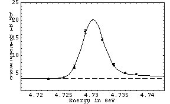
(online statistics plotted above)
123164 01/15/2002 21:21 DataTaking 4.72684 469.81 6.68 +/- 0.33
123165 01/15/2002 21:44 DataTaking 4.72685 274.96 6.95 +/- 0.49
123166 01/15/2002 22:28 DataTaking 4.73797 990.30 4.75 +/- 0.17
123167 01/15/2002 23:31 DataTaking 4.72489 806.66 3.77 +/- 0.15
123168 01/16/2002 01:13 DataTaking 4.73185 1014.63 14.60 +/- 0.44
123169 01/16/2002 02:18 DataTaking 4.72224 1093.95 3.40 +/- 0.14
123170 01/16/2002 03:23 DataTaking 4.73389 575.64 7.50 +/- 0.33
123172 01/16/2002 04:26 DataTaking 4.73392 779.70 7.35 +/- 0.34
123173 01/16/2002 05:10 RICHCal 4.73389 0.00 n/a
123174 01/16/2002 05:28 DataTaking 4.73599 0.00
n/a
123175 01/16/2002 05:55 DataTaking 4.73599 796.49 5.08 +/- 0.20
123176 01/16/2002 06:57 DataTaking 4.72683 927.151
n/a
123177 n/a n/a DataTaking n/a n/a 7.47 +/- 0.24
123178 01/16/2002 09:20 DataTaking 4.72884 424.47 16.77 +/- 0.56
123179 01/16/2002 12:43 CosmicRun 4.72884 290.55 18.73 +/- 0.71
January 16 Peak Point
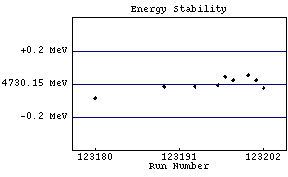 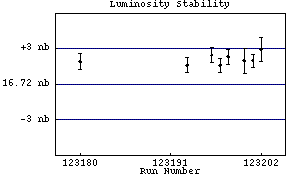
(online statistics plotted above)
123180 01/16/2002 13:08 DataTaking 4.73006 12.00 18.62 +/- 0.69
123189 01/16/2002 22:17 DataTaking 4.73013 728.63 0.00 +/- 0.00
123190 n/a n/a n/a n/a n/a n/a
123191 n/a n/a n/a n/a n/a n/a
123192 n/a n/a n/a n/a n/a n/a
123193 01/17/2002 00:44 DataTaking 4.73013 1149.15 18.33 +/- 0.61
123194 01/17/2002 01:39 SmallCal 4.73013 0.00 n/a
123195 01/17/2002 01:46 SmallCal 4.73013 0.00 n/a
123196 01/17/2002 01:53 DataTaking 4.73014 1372.36 19.15 +/- 0.62
123197 01/17/2002 02:51 DataTaking 4.73019 1379.89 18.32 +/- 0.58
123198 01/17/2002 03:53 DataTaking 4.73017 1420.47 19.01 +/- 0.63
123199 n/a n/a n/a n/a n/a n/a
123200 01/17/2002 05:21 DataTaking 4.73020 385.73 18.69 +/- 1.06
123201 01/17/2002 05:45 DataTaking 4.73017 1491.64 18.69 +/- 0.57
123202 01/17/2002 06:49 DataTaking 4.73012 654.99 19.67 +/- 1.00
123203 n/a n/a n/a n/a n/a n/a
123204 01/17/2002 07:55 DataTaking 5.17893 770.88 6.66 +/- 0.24
123205 01/17/2002 08:45 DataTaking 5.17899 1210.60 7.23 +/- 0.24
123206 01/17/2002 09:41 DataTaking 5.17902 n/a n/a
123207 01/17/2002 11:17 DataTaking 5.17902 2340.93 6.45 +/- 0.17
123208 01/17/2002 12:53 SmallCal 5.17902 0.00 n/a
123209 01/17/2002 13:05 DataTaking 5.17903 2105.15 6.60 +/- 0.17
123210 01/17/2002 14:51 DataTaking 5.17942 356.33 6.50 +/- 0.46
123211 01/17/2002 15:09 DataTaking 5.17944 1342.52 6.51 +/- 0.23
123212 01/17/2002 16:05 DataTaking 5.17959 2.38 6.46 +/- 0.23
123213 01/17/2002 16:08 DataTaking 5.17956 1974.85 6.57 +/- 0.21
123214 01/17/2002 17:27 SmallCal 5.17956 0.00 n/a
123215 01/17/2002 17:42 DataTaking 5.17958 2283.89 6.25 +/- 0.16
123216 01/17/2002 19:41 DataTaking 5.17963 120.19 6.97 +/- 0.87
123217 01/17/2002 19:53 DataTaking 5.17959 1.97 6.29 +/- 0.67
123218 01/17/2002 19:55 DataTaking 5.17959 2164.96 6.87 +/- 0.18
123219 01/17/2002 21:28 DataTaking 5.17959 2384.00 6.52 +/- 0.18
123220 01/17/2002 23:24 DataTaking 5.17962 91.86 5.85 +/- 0.71
123221 01/18/2002 00:24 DataTaking 5.17961 193.26 6.25 +/- 0.54
123222 n/a n/a DataTaking n/a n/a 6.58 +/- 0.47
123223 01/18/2002 01:22 DataTaking 5.17974 1264.66 6.79 +/- 0.23
123224 01/18/2002 02:24 DataTaking 5.17971 2391.81 6.71 +/- 0.19
123225 01/18/2002 04:01 DataTaking 5.17960 2390.85 6.78 +/- 0.18
123226 01/18/2002 05:38 DataTaking 5.17958 1263.59 6.72 +/- 0.28
123227 01/18/2002 06:31 DataTaking 5.17960 2335.18 6.78 +/- 0.19
123228 01/18/2002 08:04 SmallCal 5.17960 0.00 n/a
123229 01/18/2002 08:13 DataTaking 5.17960 1660.79 6.41 +/- 0.21
123230 01/18/2002 09:35 DataTaking 5.17963 n/a n/a
123231 n/a n/a n/a n/a n/a n/a
123232 01/18/2002 10:09 DataTaking 5.17960 0.16 n/a
123233 01/18/2002 10:34 DataTaking 5.17966 900.47 6.68 +/- 0.28
123234 01/18/2002 11:16 SmallCal 5.17966 0.00 n/a
123235 01/18/2002 11:29 DataTaking 5.17960 228.57 6.67 +/- 0.83
123236 01/18/2002 11:59 SmallCal 5.17960 0.00 n/a
123237 01/18/2002 12:12 DataTaking 5.17963 973.07 6.76 +/- 0.25
123238 01/18/2002 12:59 DataTaking 5.17960 2243.23 6.50 +/- 0.18
123239 01/18/2002 14:28 SmallCal 5.17960 0.00 n/a
123240 01/18/2002 14:40 DataTaking 5.17960 2180.00 6.71 +/- 0.18
123241 01/18/2002 16:12 DataTaking 5.17959 0.00 n/a
123242 01/18/2002 16:47 DataTaking 5.17957 246.66 6.25 +/- 0.54
123243 01/18/2002 17:01 DataTaking 5.17960 672.16 6.12 +/- 0.31
123244 01/18/2002 17:36 SmallCal 5.17960 0.00 n/a
123245 01/18/2002 17:50 DataTaking 5.17959 2383.89 6.53 +/- 0.17
123246 n/a n/a n/a n/a n/a 6.51 +/- 0.17
123247 n/a n/a n/a n/a n/a n/a
123248 01/18/2002 19:49 DataTaking 5.17956 1487.56 6.75 +/- 0.20
123249 01/18/2002 21:01 DataTaking 5.17957 40.88 6.83 +/- 0.20
123250 01/18/2002 21:08 DataTaking 5.17957 2204.90 6.84 +/- 0.19
123251 01/18/2002 22:54 DataTaking 5.17961 2521.37 6.74 +/- 0.17
123252 01/19/2002 00:34 DataTaking 5.17964 2415.48 6.77 +/- 0.18
123253 01/19/2002 02:12 DataTaking 5.17962 2460.25 6.87 +/- 0.18
123254 01/19/2002 03:47 DataTaking 5.17965 2247.51 5.99 +/- 0.16
123255 01/19/2002 05:26 SmallCal 5.17965 0.00 n/a
123256 01/19/2002 05:33 DataTaking 5.17962 2206.79 6.92 +/- 0.19
123257 01/19/2002 07:02 DataTaking 5.17962 173.04 9.21 +/- 1.22
123258 01/19/2002 07:16 DataTaking 5.17962 1967.29 6.57 +/- 0.18
123259 01/19/2002 08:37 DataTaking 5.17965 2353.15 6.61 +/- 0.17
123260 01/19/2002 10:11 DataTaking 5.17965 2355.84 6.90 +/- 0.19
123261 01/19/2002 11:47 DataTaking 5.17962 2338.03 6.44 +/- 0.17
123262 01/19/2002 13:21 DataTaking 5.17962 2164.74 6.66 +/- 0.18
123263 01/19/2002 14:48 SmallCal 5.17962 0.00 n/a
123264 01/19/2002 14:59 DataTaking 5.17961 2103.84 6.52 +/- 0.17
123265 n/a n/a n/a n/a n/a n/a
123266 01/19/2002 16:44 DataTaking 5.17957 1740.60 6.67 +/- 0.20
123267 01/19/2002 18:10 DataTaking 5.17957 2112.99 6.66 +/- 0.18
123268 01/19/2002 19:45 DataTaking 5.17954 2297.23 6.43 +/- 0.17
123269 01/19/2002 21:19 DataTaking 5.17960 2366.38 6.65 +/- 0.17
123270 01/19/2002 22:53 DataTaking 5.17961 1023.59 6.86 +/- 0.30
123271 01/19/2002 23:36 SmallCal 5.17961 0.00 n/a
123272 01/19/2002 23:48 DataTaking 5.17960 2278.08 6.68 +/- 0.17
123273 01/20/2002 01:23 DataTaking 5.17961 n/a n/a
123274 01/20/2002 02:01 DataTaking 5.17960 1226.16 6.27 +/- 0.23
123275 01/20/2002 03:00 DataTaking 5.17960 2321.40 6.57 +/- 0.17
123276 01/20/2002 04:37 SmallCal 5.17960 0.00 n/a
123277 01/20/2002 04:44 DataTaking 5.17957 2327.73 6.89 +/- 0.18
123278 01/20/2002 06:13 DataTaking 5.17957 2545.89 6.53 +/- 0.16
123279 01/20/2002 07:54 DataTaking 5.17963 2462.52 6.52 +/- 0.16
123280 01/20/2002 09:28 DataTaking 5.17955 3167.18 6.53 +/- 0.14
123281 01/20/2002 12:38 DataTaking 5.17959 1517.62 n/a
123282 n/a n/a DataTaking n/a n/a n/a
123283 01/20/2002 13:11 DataTaking 5.17956 0.05 0.00 +/- 0.00
123284 01/20/2002 13:38 DataTaking 5.17960 n/a n/a
123285 01/20/2002 14:08 DataTaking 5.17959 1568.11 6.87 +/- 0.21
123286 01/20/2002 15:20 SmallCal 5.17959 0.00 n/a
123287 01/20/2002 15:31 DataTaking 5.17958 149.67 n/a
123288 n/a n/a n/a n/a n/a n/a
123289 01/20/2002 16:13 DataTaking 5.17956 6.63 0.00 +/- 0.00
123290 01/20/2002 16:33 DataTaking 5.17959 565.18 6.86 +/- 0.32
123291 01/20/2002 17:09 DataTaking 5.17953 163.64 5.63 +/- 0.68
123292 01/20/2002 17:23 DataTaking 5.17959 0.52 6.05 +/- 0.56
123293 01/20/2002 17:27 DataTaking 5.17959 2770.27 6.67 +/- 0.15
123294 01/20/2002 19:28 DataTaking 5.17960 3132.44 6.69 +/- 0.15
123295 01/20/2002 21:33 DataTaking 5.17957 2858.71 6.78 +/- 0.17
123296 01/20/2002 23:26 SmallCal 5.17957 0.00 n/a
123297 n/a n/a SmallCal n/a 0.00 n/a
123298 01/20/2002 23:41 DataTaking 5.17964 3194.49 7.10 +/- 0.15
123299 01/21/2002 02:32 DataTaking 5.17961 2.88 0.00 +/- 0.00
123300 01/21/2002 02:35 DataTaking 5.17960 2357.45 6.33 +/- 0.14
123301 01/21/2002 04:35 DataTaking 5.17964 2537.75 6.96 +/- 0.17
123302 01/21/2002 06:16 DataTaking 5.17965 335.15 6.75 +/- 0.38
123303 01/21/2002 07:15 DataTaking 5.17962 276.16 7.01 +/- 0.62
123304 01/21/2002 07:35 DataTaking 5.17967 767.78 6.53 +/- 0.33
123305 01/21/2002 08:10 CCBigCal 5.17967 0.00 n/a
123306 n/a n/a DRBigCal n/a n/a n/a
123307 01/21/2002 11:40 CosmicRun 5.17967 0.03 0.00 +/- 0.00
123308 01/21/2002 12:06 CosmicRun 5.17967 n/a n/a
123309 01/21/2002 12:30 CosmicRun 5.17967 14.41 0.00 +/- 0.00
123310 01/21/2002 12:45 DataTaking 1.81521 160.30 0.00 +/- 0.00
123311 01/21/2002 14:08 RandomLow 1.81521 0.05 0.00 +/- 0.00
123312 12/31/1969 19:00 n/a n/a n/a n/a
123313 01/21/2002 15:31 DataTaking 1.81536 511.92 0.82 +/- 0.83
123314 01/21/2002 17:05 DataTaking 1.81538 4.14 0.82 +/- 0.83
123315 01/21/2002 17:35 DataTaking 1.81538 3.51 1.39 +/- 1.40
123316 01/21/2002 17:58 DataTaking 1.81597 2.74 3.86 +/- 2.78
123317 01/21/2002 18:50 DataTaking 1.81685 3.78 2.64 +/- 1.89
123318 01/21/2002 19:19 DataTaking 1.81744 2.77 0.01 +/- 0.01
123319 01/21/2002 20:07 DataTaking 1.81773 1.97 0.01 +/- 0.01
123320 01/21/2002 22:05 DataTaking 1.81803 2.66 0.01 +/- 0.01
123321 01/21/2002 22:26 DataTaking 1.81877 2.63 0.02 +/- 0.02
123322 01/21/2002 23:44 DataTaking 1.81936 0.90 n/a
123323 01/22/2002 02:16 DataTaking 1.81950 0.00 n/a
123324 01/22/2002 02:55 DataTaking 1.81950 2.63 0.00 +/- 0.00
123325 01/22/2002 03:17 DataTaking 1.82009 1.26 0.02 +/- 0.02
123326 01/22/2002 03:55 DataTaking 1.82082 2.96 0.02 +/- 0.02
123327 01/22/2002 04:54 DataTaking 1.82141 2.00 0.02 +/- 0.02
123328 01/22/2002 05:40 DataTaking 1.82200 0.11 0.02 +/- 0.02
123329 01/22/2002 06:02 DataTaking 1.82200 2.44 0.00 +/- 0.00
123330 01/22/2002 06:20 DataTaking 1.82259 1.84 0.00 +/- 0.00
123331 01/22/2002 07:14 DataTaking 1.82332 2.49 0.00 +/- 0.00
123332 01/22/2002 10:31 CCBigCal 1.82332 0.00 n/a
123333 01/22/2002 10:42 DRBigCal 1.82332 0.03 n/a
123334 12/31/1969 19:00 n/a n/a n/a n/a
123335 12/31/1969 19:00 n/a n/a n/a n/a
123336 12/31/1969 19:00 n/a n/a n/a n/a
123337 12/31/1969 19:00 n/a n/a n/a n/a
123338 12/31/1969 19:00 n/a n/a n/a n/a
123339 12/31/1969 19:00 n/a n/a n/a n/a
123340 12/31/1969 19:00 n/a n/a n/a n/a
123341 12/31/1969 19:00 n/a n/a n/a n/a
123342 01/22/2002 14:36 CCBigCal 1.82332 n/a n/a
123343 01/22/2002 14:47 CCBigCal 1.82332 n/a n/a
123344 01/22/2002 14:51 SmallCal 1.82332 n/a n/a
123345 01/22/2002 15:11 SVXBigCal 1.82332 n/a n/a
123346 01/22/2002 18:12 SmallCal 1.82332 n/a n/a
123347 01/22/2002 18:23 SmallCal 1.82332 n/a n/a
123348 12/31/1969 19:00 CosmicRun n/a n/a n/a
123349 12/31/1969 19:00 n/a n/a n/a n/a
123350 12/31/1969 19:00 n/a n/a n/a n/a
123351 01/22/2002 22:13 RICHCal 1.82332 0.00 n/a
123352 01/22/2002 22:17 CosmicRun 1.82332 18.16 0.00 +/- 0.00
123353 12/31/1969 19:00 n/a n/a n/a n/a
123354 01/22/2002 22:32 CosmicRun 1.82332 221.70 2.70 +/- 0.66
123355 01/22/2002 23:04 CosmicRun 1.82332 334.55 2.70 +/- 0.66
123356 12/31/1969 19:00 n/a n/a n/a n/a
123357 12/31/1969 19:00 CosmicRun n/a n/a 1.20 +/- 0.36
123358 12/31/1969 19:00 n/a n/a n/a n/a
123359 01/23/2002 00:30 DataTaking 4.71662 98.90 0.00 +/- 0.00
123360 12/31/1969 19:00 n/a n/a n/a n/a
123361 12/31/1969 19:00 SmallCal n/a n/a n/a
123362 01/23/2002 00:59 SmallCal 4.71662 n/a n/a
123363 12/31/1969 19:00 n/a n/a n/a n/a
123364 12/31/1969 19:00 n/a n/a n/a n/a
123365 01/23/2002 01:26 RICHCal 4.71674 5.89 n/a
123366 12/31/1969 19:00 DataTaking n/a n/a n/a
123367 01/23/2002 01:35 RICHCal 4.71674 1.12 n/a
123368 01/23/2002 01:38 RICHCal 4.71650 0.00 n/a
January 16 Continuum Point
123369 01/23/2002 01:51 DataTaking 4.71674 1834.96 3.31 +/- 0.14
123370 01/23/2002 02:51 DataTaking 4.71671 2112.30 3.47 +/- 0.14
123378 01/23/2002 05:01 DataTaking 4.71670 1407.12 3.18 +/- 0.14
123379 01/23/2002 05:55 DataTaking 4.71670 152.19 3.21 +/- 0.14
123380 01/23/2002 06:12 DataTaking 4.71666 1718.33 3.24 +/- 0.16
123381 01/23/2002 07:04 SmallCal 4.71667 0.00 n/a
123382 01/23/2002 07:20 DataTaking 4.71669 1490.63 3.53 +/- 0.18
123383 12/31/1969 19:00 RandomLow n/a n/a n/a
123384 01/23/2002 11:38 RandomLow 4.71669 0.03 0.00 +/- 0.00
123385 01/23/2002 12:11 RandomLow 4.71669 0.00 0.00 +/- 0.00
123386 01/23/2002 12:57 CosmicRun 4.71669 39.75 185.96 +/- 136.65
123387 01/23/2002 14:34 RandomLow 4.71669 n/a 185.96 +/- 136.65
123388 01/23/2002 15:08 RandomLow 4.71669 9.29 0.00 +/- 0.00
123389 01/23/2002 18:42 CosmicRun 0.00000 2.00 0.00 +/- 0.00
123390 01/23/2002 20:24 RandomLow 0.00000 0.11 n/a
123391 01/23/2002 20:38 CosmicRun 0.00000 n/a 0.00 +/- 0.00
123392 01/23/2002 20:51 RandomLow 0.00000 42.47 0.00 +/- 0.00
123393 01/23/2002 21:06 RandomLow 0.00000 292.25 0.00 +/- 0.00
123394 n/a n/a n/a n/a n/a n/a
123395 n/a n/a DataTaking n/a n/a n/a
123396 01/23/2002 22:59 DataTaking 4.72990 1041.62 18.81 +/- 0.65
123397 01/23/2002 23:48 DataTaking 4.72990 1875.92 19.23 +/- 0.56
123398 n/a n/a n/a n/a n/a n/a
123399 01/24/2002 01:03 DataTaking 4.72991 58.22 19.99 +/- 2.17
123400 01/24/2002 01:16 DataTaking 4.72991 460.63 18.14 +/- 1.02
123401 01/24/2002 03:49 DataTaking 4.73005 1004.27 17.39 +/- 0.57
123402 01/24/2002 04:50 DataTaking 4.73007 1605.04 18.47 +/- 0.53
123403 01/24/2002 05:59 DataTaking 4.73005 1725.48 18.68 +/- 0.55
123404 01/24/2002 07:08 DataTaking 4.73003 2029.37 18.55 +/- 0.52
123405 01/24/2002 08:20 DataTaking 4.73008 1515.78 18.84 +/- 0.65
123406 01/24/2002 09:10 DataTaking 4.73007 n/a n/a
123407 01/24/2002 09:24 SmallCal 4.73007 0.00 n/a
123408 01/24/2002 09:35 DataTaking 4.73008 6.55 0.00 +/- 0.00
123409 01/24/2002 09:38 DataTaking 4.73009 2110.88 19.02 +/- 0.38
123410 01/24/2002 11:32 DataTaking 4.73006 43.40 16.91 +/- 1.75
123411 01/24/2002 13:32 DataTaking 4.73006 n/a n/a
123412 01/24/2002 14:46 SmallCal 4.73006 0.00 n/a
123413 01/24/2002 15:08 DataTaking 4.73006 2155.21 19.25 +/- 0.49
123414 01/24/2002 16:26 DataTaking 4.73005 2245.32 18.13 +/- 0.45
123415 01/24/2002 17:46 DataTaking 4.73009 2347.89 18.92 +/- 0.48
123416 01/24/2002 19:10 SmallCal 4.73009 0.00 n/a
123417 01/24/2002 19:49 DataTaking 4.73008 1965.34 18.40 +/- 0.51
123418 01/24/2002 20:54 DataTaking 4.73008 2446.47 18.45 +/- 0.47
123419 01/24/2002 22:15 DataTaking 4.73007 2266.11 19.60 +/- 0.51
123420 01/24/2002 23:36 DataTaking 4.73007 2362.19 19.22 +/- 0.52
123421 01/25/2002 00:58 DataTaking 4.73008 1886.71 19.45 +/- 0.56
123422 n/a n/a n/a n/a n/a n/a
123423 01/25/2002 02:31 DataTaking 4.73010 1759.45 18.67 +/- 0.55
123424 01/25/2002 03:35 SmallCal 4.73010 0.00 n/a
123425 01/25/2002 03:50 DataTaking 4.73010 1750.05 19.05 +/- 0.50
123426 01/25/2002 05:02 DataTaking 4.73011 2171.95 19.57 +/- 0.50
123427 01/25/2002 06:23 DataTaking 4.73011 2168.66 18.95 +/- 0.48
123428 01/25/2002 07:43 DataTaking 4.73012 2186.22 20.05 +/- 0.54
123429 01/25/2002 09:02 DataTaking 4.73008 2420.00 18.98 +/- 0.48
123430 01/25/2002 10:22 DataTaking 4.73011 2405.12 19.07 +/- 0.49
123431 01/25/2002 11:51 SmallCal 4.73011 0.00 n/a
123432 01/25/2002 12:06 DataTaking 4.73011 2351.75 18.09 +/- 0.44
123433 01/25/2002 13:27 DataTaking 4.73016 2181.42 19.07 +/- 0.48
123434 01/25/2002 15:07 DataTaking 4.73022 445.89 18.76 +/- 1.07
123435 01/25/2002 15:42 DataTaking 4.73021 260.66 n/a
123436 01/25/2002 16:09 DataTaking 4.73024 1497.84 17.99 +/- 0.57
123437 01/25/2002 17:05 DataTaking 4.73021 1360.49 17.97 +/- 0.63
123438 n/a n/a DataTaking n/a n/a n/a
123439 01/25/2002 18:17 DataTaking 4.73026 1503.26 19.90 +/- 0.62
123440 01/25/2002 19:11 DataTaking 4.73026 2558.33 19.29 +/- 0.49
123441 01/25/2002 20:38 DataTaking 4.73029 2359.48 18.69 +/- 0.50
123442 01/25/2002 21:59 DataTaking 4.73029 2111.48 19.44 +/- 0.55
123443 01/25/2002 23:05 SmallCal 4.73029 0.00 n/a
123444 01/25/2002 23:21 DataTaking 4.73028 115.53 21.03 +/- 1.89
123445 01/25/2002 23:35 DataTaking 4.73028 2002.85 18.89 +/- 0.51
123446 01/26/2002 00:41 DataTaking 4.73028 2476.36 18.83 +/- 0.48
123447 01/26/2002 02:03 DataTaking 4.73028 n/a n/a
123448 n/a n/a n/a n/a n/a n/a
123449 01/26/2002 03:15 DataTaking 4.73025 89.21 16.44 +/- 1.69
123450 01/26/2002 03:25 DataTaking 4.73027 1720.68 18.64 +/- 0.58
123451 01/26/2002 04:19 DataTaking 4.73026 667.23 18.65 +/- 0.89
123452 01/26/2002 04:47 DataTaking 4.73026 2486.30 18.99 +/- 0.49
123453 01/26/2002 06:07 DataTaking 4.73026 n/a 16.25 +/- 2.35
123454 01/26/2002 06:38 SmallCal 4.73026 n/a n/a
123455 01/26/2002 06:46 DataTaking 4.73027 1024.44 17.78 +/- 0.70
123456 01/26/2002 07:26 DataTaking 4.73013 2436.22 18.87 +/- 0.50
123457 01/26/2002 08:47 DataTaking 4.73017 600.30 19.76 +/- 1.07
123458 01/26/2002 09:11 DataTaking 4.73014 13.42 n/a
123459 01/26/2002 09:32 DataTaking 4.73017 1194.68 19.39 +/- 0.69
123460 01/26/2002 10:19 SmallCal 4.73017 0.00 n/a
123461 01/26/2002 10:30 DataTaking 4.73015 2458.93 18.55 +/- 0.43
123462 01/26/2002 11:55 DataTaking 4.73012 2925.67 18.57 +/- 0.43
123463 01/26/2002 13:29 DataTaking 4.73016 2925.56 18.63 +/- 0.43
123464 01/26/2002 15:03 DataTaking 4.73014 2834.14 19.40 +/- 0.47
123465 01/26/2002 16:40 DataTaking 4.73014 2803.37 18.72 +/- 0.46
123466 01/26/2002 18:16 DataTaking 4.73013 2877.53 18.64 +/- 0.47
123467 01/26/2002 19:51 DataTaking 4.73013 159.59 19.72 +/- 2.13
123468 01/26/2002 20:03 DataTaking 4.73017 2704.16 18.44 +/- 0.50
123469 01/26/2002 21:31 SmallCal 4.73017 0.00 n/a
123470 01/26/2002 21:43 DataTaking 4.73013 2710.93 18.72 +/- 0.44
123471 01/26/2002 23:15 DataTaking 4.73012 2732.14 18.16 +/- 0.43
123472 01/27/2002 00:49 DataTaking 4.73015 2615.34 n/a
123473 01/27/2002 02:23 DataTaking 4.73015 n/a n/a
123474 01/27/2002 03:00 DataTaking 4.73013 1282.79 18.86 +/- 0.64
123475 01/27/2002 04:00 SmallCal 4.73013 0.00 n/a
123476 01/27/2002 04:17 DataTaking 4.73016 1985.15 19.05 +/- 0.50
123477 01/27/2002 05:36 DataTaking 4.73013 2698.44 19.24 +/- 0.47
123478 01/27/2002 07:09 DataTaking 4.73002 2536.14 19.13 +/- 0.47
123479 01/27/2002 08:45 DataTaking 4.73002 2682.49 18.51 +/- 0.46
123480 01/27/2002 10:20 DataTaking 4.72999 2638.88 18.40 +/- 0.49
123481 01/27/2002 11:54 DataTaking 4.72999 2653.51 18.79 +/- 0.51
123482 n/a n/a DataTaking n/a n/a n/a
123483 01/27/2002 13:27 SmallCal 4.72999 0.00 n/a
123484 01/27/2002 13:43 DataTaking 4.72998 1744.68 18.63 +/- 0.51
123485 01/27/2002 15:00 SmallCal 4.72998 0.00 n/a
123486 01/27/2002 15:07 SmallCal 4.72998 0.00 n/a
123487 n/a n/a n/a n/a n/a n/a
123488 01/27/2002 15:25 DataTaking 4.72999 1521.95 20.33 +/- 0.63
123489 n/a n/a DataTaking n/a n/a 20.32 +/- 0.62
123490 01/27/2002 17:43 DataTaking 4.72999 114.19 25.29 +/- 2.94
123491 01/27/2002 17:50 DataTaking 4.72999 1402.03 18.73 +/- 0.58
123492 01/27/2002 18:48 DataTaking 4.73000 2875.78 19.33 +/- 0.45
123493 01/27/2002 20:27 DataTaking 4.72998 870.25 n/a
123494 01/27/2002 21:07 DataTaking 4.72998 265.62 18.65 +/- 1.62
123495 01/27/2002 21:29 DataTaking 4.72998 254.60 17.78 +/- 1.18
123496 01/27/2002 22:12 DataTaking 4.72999 1857.51 20.08 +/- 0.55
123497 01/27/2002 23:24 DataTaking 4.72998 2880.22 19.51 +/- 0.46
123498 01/28/2002 01:00 DataTaking 4.72998 2825.86 19.26 +/- 0.62
123499 01/28/2002 02:34 DataTaking 4.72999 2801.56 19.84 +/- 0.51
123500 01/28/2002 04:09 DataTaking 4.73001 2862.14 18.35 +/- 0.45
123501 01/28/2002 05:47 DataTaking 4.72999 3092.38 18.66 +/- 0.42
123502 01/28/2002 07:34 SmallCal 4.72999 n/a n/a
123503 01/28/2002 07:38 SmallCal 4.72999 0.00 n/a
123504 01/28/2002 07:49 DataTaking 4.72999 405.43 n/a
123505 n/a n/a n/a n/a n/a n/a
123506 01/28/2002 17:14 RandomLow 0.00000 185.86 0.00 +/- 0.00
123507 n/a n/a DataTaking n/a n/a n/a
123508 01/28/2002 18:06 DataTaking 1.81101 77.12 0.00 +/- 0.00
123509 01/28/2002 18:40 DataTaking 1.81102 0.16 0.00 +/- 0.00
123510 n/a n/a DataTaking n/a n/a n/a
123511 01/28/2002 19:06 DataTaking 1.81100 0.49 0.00 +/- 0.00
123512 n/a n/a DataTaking n/a n/a 4.39 +/- 4.48
123513 n/a n/a DataTaking n/a n/a 0.00 +/- 0.00
123514 01/28/2002 20:31 DataTaking 1.81340 195.43 0.00 +/- 0.00
123515 01/28/2002 20:52 DataTaking 1.82048 2.71 0.00 +/- 0.00
123516 n/a n/a n/a n/a n/a n/a
123517 01/28/2002 21:32 DataTaking 1.81278 59.42 0.00 +/- 0.00
123518 01/28/2002 22:17 DataTaking 1.82167 2.93 0.00 +/- 0.00
123519 01/28/2002 22:40 DataTaking 1.82269 2.66 0.00 +/- 0.00
123520 01/28/2002 23:29 DataTaking 1.82358 3.18 4.67 +/- 2.76
123521 01/28/2002 23:44 DataTaking 1.82461 2.68 4.42 +/- 3.20
123522 01/29/2002 00:11 DataTaking 1.82579 2.71 n/a
123523 n/a n/a DataTaking n/a n/a n/a
123524 01/29/2002 00:24 DataTaking 1.82653 0.55 0.00 +/- 0.00
123525 n/a n/a DataTaking n/a n/a 11.02 +/- 11.62
123526 01/29/2002 01:18 DataTaking 1.82771 2.68 0.00 +/- 0.00
123527 01/29/2002 01:32 DataTaking 1.82874 2.63 4.95 +/- 2.93
123528 01/29/2002 01:50 DataTaking 1.82963 2.25 n/a
123529 01/29/2002 02:36 DataTaking 1.83066 2.63 0.00 +/- 0.00
123530 01/29/2002 02:53 DataTaking 1.83170 2.66 96.93 +/- 18.74
123531 01/29/2002 03:16 DataTaking 1.83273 2.63 41.25 +/- 10.24
123532 01/29/2002 03:43 DataTaking 1.83376 2.52 24.63 +/- 7.11
123533 01/29/2002 04:34 DataTaking 1.83022 2.63 9.65 +/- 4.52
123534 01/29/2002 04:56 DataTaking 1.83125 2.55 98.81 +/- 15.92
123535 n/a n/a DataTaking n/a n/a 84.92 +/- 19.04
123536 01/29/2002 06:55 CCBigCal 1.83125 0.00 n/a
123537 n/a n/a n/a n/a n/a n/a
123538 n/a n/a n/a n/a n/a n/a
123539 n/a n/a n/a n/a n/a n/a
123540 01/29/2002 13:38 DataTaking 16.41540 0.00 0.00 +/- 0.00
123541 n/a n/a DataTaking n/a n/a n/a
123542 01/29/2002 15:22 DataTaking 4.72985 20.14 0.00 +/- 0.00
123543 01/29/2002 16:26 DataTaking 4.72984 0.00 n/a
123544 01/29/2002 16:32 DataTaking 4.72983 0.14 0.00 +/- 0.00
123545 n/a n/a n/a n/a n/a n/a
123546 n/a n/a n/a n/a n/a n/a
123547 n/a n/a n/a n/a n/a n/a
123548 n/a n/a n/a n/a n/a n/a
123549 01/29/2002 19:39 DataTaking 4.73185 142.99 0.00 +/- 0.00
123550 n/a n/a DataTaking n/a n/a n/a
123551 01/29/2002 19:53 DataTaking 4.73192 0.00 n/a
123552 01/29/2002 20:03 DataTaking 4.73378 75.45 0.00 +/- 0.00
123553 01/29/2002 20:27 DataTaking 4.72702 579.56 0.03 +/- 0.01
123554 01/29/2002 21:12 DataTaking 4.73778 322.22 0.02 +/- 0.01
January 30 Continuum Point
123555 01/29/2002 21:46 DataTaking 4.71651 49.64 0.02 +/- 0.01
123556 01/29/2002 21:56 DataTaking 4.71667 10.79 0.08 +/- 0.04
123557 01/29/2002 22:18 DataTaking 4.71639 1.81
n/a
123558 01/29/2002 22:50 DataTaking 4.71640 63.67 0.00 +/- 0.00
123561 01/29/2002 23:06 DataTaking 4.71669 288.03 0.00 +/- 0.00
123562 01/29/2002 23:20 SmallCal 4.71669 0.00 n/a
123563 01/30/2002 00:10 SmallCal 4.71669 0.00 n/a
123564 01/30/2002 00:16 SmallCal 4.71669 0.00 n/a
123565 01/30/2002 00:32 DataTaking 4.71666 866.25 3.45 +/- 0.19
123566 01/30/2002 01:13 DataTaking 4.71672 2001.59 3.21 +/- 0.13
123567 01/30/2002 02:23 DataTaking 4.71667 2063.21 3.50 +/- 0.14
123568 01/30/2002 03:29 DataTaking 4.71668 2090.88 3.24 +/- 0.13
123569 01/30/2002 04:36 DataTaking 4.71668 1956.33 3.56 +/- 0.14
123570 01/30/2002 05:39 DataTaking 4.71667 2103.04 3.67 +/- 0.14
123571 n/a n/a CCBigCal n/a n/a n/a
123572 01/30/2002 06:52 CCBigCal 4.71667 0.00 n/a
123573 01/30/2002 06:57 CCBigCal 4.71667 0.00 n/a
123574 n/a n/a CCBigCal n/a n/a n/a
123575 01/30/2002 07:10 CCBigCal 4.71667 n/a n/a
123576 01/30/2002 07:17 CCBigCal 4.71667 n/a n/a
123577 01/30/2002 07:29 DRBigCal 4.71667 0.00 n/a
123578 n/a n/a DRBigCal n/a 0.00 n/a
123579 01/30/2002 07:46 DRBigCal 4.71667 0.00 n/a
123580 01/30/2002 07:57 DRBigCal 4.71667 0.00 n/a
123581 01/30/2002 08:09 DRBigCal 4.71667 0.00 n/a
123582 01/30/2002 08:13 SmallCal 4.71667 0.00 n/a
123583 01/30/2002 08:17 SmallCal 4.71667 0.00 n/a
123584 01/30/2002 08:31 SVXBigCal 4.71667 0.00 n/a
123585 01/30/2002 08:47 SVXBigCal 4.71667 0.00 n/a
123586 01/30/2002 09:49 CosmicRun 4.71667 0.00 n/a
123587 01/30/2002 10:12 CosmicRun 4.71667 0.00 0.00 +/- 0.00
123588 01/30/2002 10:18 CosmicRun 4.71667 0.00 0.00 +/- 0.00
123589 01/30/2002 10:26 CosmicRun 4.71667 0.03 0.00 +/- 0.00
123590 01/30/2002 11:44 DataTaking 4.71663 114.63 3.09 +/- 0.34
123591 01/30/2002 12:03 DataTaking 4.71664 1044.38 3.53 +/- 0.11
123592 01/30/2002 12:48 DataTaking 4.71671 1324.68 3.56 +/- 0.10
123593 n/a n/a DataTaking n/a n/a 3.56 +/- 0.10
123594 01/30/2002 17:16 DataTaking 5.85378 n/a n/a
123595 01/30/2002 17:38 SmallCal 5.85378 n/a n/a
January 30 Scan
123596 01/30/2002 18:44 DataTaking 4.72849 1303.23 15.02 +/- 0.44
123597 01/30/2002 20:01 DataTaking 4.73795 1552.08 4.48 +/- 0.16
123598 01/30/2002 21:22 DataTaking 4.72594 1158.77 5.00 +/- 0.17
123599 01/30/2002 22:40 DataTaking 4.73601 1517.89 4.83 +/- 0.17
123600 01/30/2002 23:59 DataTaking 4.73602 1453.37 5.14 +/- 0.19
123601 01/31/2002 01:18 DataTaking 4.72685 1758.16 7.17 +/- 0.24
123602 01/31/2002 02:38 DataTaking 4.73391 1537.32 7.20 +/- 0.24
123603 01/31/2002 03:56 DataTaking 4.73187 971.92 14.27 +/- 0.45
123604 01/31/2002 05:15 DataTaking 4.72848 1417.07 14.18 +/- 0.50
123606 01/31/2002 06:39 DataTaking 4.72596 1160.63 4.95 +/- 0.16
123607 01/31/2002 07:57 DataTaking 4.73187 438.27 14.57 +/- 0.78
123608 01/31/2002 08:34 DataTaking 4.72997 1864.68 19.32 +/- 0.54
123609 01/31/2002 09:44 SmallCal 4.72998 0.00 n/a
January 30 Peak Point
123610 01/31/2002 09:53 DataTaking 4.73002 2209.01 19.18 +/- 0.50
123611 01/31/2002 11:14 DataTaking 4.73001 2238.08 18.39 +/- 0.49
123612 01/31/2002 12:34 DataTaking 4.73001 2124.14 18.64 +/- 0.55
123614 01/31/2002 14:05 DataTaking 4.73002 428.41 17.77 +/- 1.32
123615 01/31/2002 14:31 DataTaking 4.73004 1406.96 19.74 +/- 0.66
123616 01/31/2002 15:25 DataTaking 4.73005 2303.32 19.04 +/- 0.53
123617 01/31/2002 16:48 DataTaking 4.73004 2213.21 18.22 +/- 0.51
123618 01/31/2002 18:09 DataTaking 4.73004 2292.03 18.98 +/- 0.52
123619 01/31/2002 19:30 DataTaking 4.73005 2260.05 19.17 +/- 0.52
123620 01/31/2002 20:50 DataTaking 4.73004 2238.03 19.12 +/- 0.54
123621 01/31/2002 22:11 DataTaking 4.73006 2031.67 18.40 +/- 0.55
123622 01/31/2002 23:19 SmallCal 4.73006 0.00 n/a
123623 01/31/2002 23:30 DataTaking 4.73006 2210.66 19.85 +/- 0.52
123624 02/01/2002 00:54 DataTaking 4.73005 2214.00
n/a
123625 n/a n/a n/a n/a n/a n/a
123626 n/a n/a n/a n/a n/a n/a
123627 n/a n/a n/a n/a n/a n/a
123628 n/a n/a n/a n/a n/a n/a
123629 n/a n/a n/a n/a n/a n/a
123630 n/a n/a n/a n/a n/a n/a
123631 02/01/2002 04:00 DataTaking 4.73006 434.88 19.50 +/- 1.05
123632 02/01/2002 04:38 DataTaking 4.73006 1893.07 19.82 +/- 0.56
123633 02/01/2002 05:49 DataTaking 4.73005 1654.52 18.85 +/- 0.58
123634 02/01/2002 06:49 SmallCal 4.73005 0.00 n/a
123635 02/01/2002 06:59 DataTaking 4.73005 2167.53 19.97 +/- 0.54
123636 02/01/2002 08:22 DataTaking 4.73005 1909.86 19.47 +/- 0.53
123637 02/01/2002 09:43 DataTaking 4.73002 1413.73 19.89 +/- 0.63
123638 02/01/2002 10:42 DataTaking 4.73002 304.41 19.55 +/- 1.22
123639 02/01/2002 11:04 DataTaking 4.73005 2228.11 18.73 +/- 0.51
123640 02/01/2002 12:24 DataTaking 4.73002 2121.86 19.44 +/- 0.56
123641 02/01/2002 13:42 DataTaking 4.73005 2047.64 18.28 +/- 0.56
123642 02/01/2002 14:50 SmallCal 4.73017 0.00 n/a
123643 02/01/2002 15:01 DataTaking 4.73017 2429.18 18.11 +/- 0.49
123644 02/01/2002 16:26 DataTaking 4.73018 2129.01 19.62 +/- 0.61
123645 02/01/2002 17:46 DataTaking 4.73017 2012.03 17.97 +/- 0.50
123646 02/01/2002 19:06 DataTaking 4.73017 2344.19 18.68 +/- 0.52
123647 02/01/2002 20:27 DataTaking 4.73017 2261.40 19.07 +/- 0.53
123648 02/01/2002 21:56 DataTaking 4.73017 1439.92 18.80 +/- 0.60
123649 02/01/2002 22:56 SmallCal 4.73018 0.00 n/a
123650 02/01/2002 23:08 DataTaking 4.73019 2206.27 18.95 +/- 0.55
123651 02/02/2002 00:34 DataTaking 4.73020 2211.04 18.86 +/- 0.53
123652 02/02/2002 01:59 DataTaking 4.73022 2373.70 18.68 +/- 0.53
123653 02/02/2002 03:24 DataTaking 4.73023 2555.62 18.37 +/- 0.51
123654 02/02/2002 04:46 DataTaking 4.73020 2616.05 19.47 +/- 0.55
123655 02/02/2002 06:12 DataTaking 4.73023 75.15 16.91 +/- 1.75
123656 02/02/2002 06:25 DataTaking 4.73020 2256.71 20.30 +/- 0.61
123657 02/02/2002 07:40 SmallCal 4.73021 0.00 n/a
123658 02/02/2002 07:48 DataTaking 4.73021 2351.21 18.44 +/- 0.55
123659 02/02/2002 09:07 DataTaking 4.73023 2555.53 19.51 +/- 0.55
123660 02/02/2002 10:31 SmallCal 4.73024 0.00 n/a
123661 02/02/2002 10:33 SmallCal 4.73024 0.00 n/a
123662 02/02/2002 10:42 DataTaking 4.73020 n/a n/a
123663 02/02/2002 11:06 DataTaking 4.73020 n/a n/a
123664 02/02/2002 12:12 DataTaking 4.73023 42.00 18.96 +/- 2.86
123665 02/02/2002 12:22 DataTaking 4.73021 2421.15 19.51 +/- 0.56
123666 n/a n/a n/a n/a n/a n/a
123667 02/02/2002 13:53 SmallCal 4.73024 n/a n/a
123668 n/a n/a n/a n/a n/a n/a
123669 n/a n/a n/a n/a n/a n/a
123670 02/02/2002 14:15 DataTaking 4.73024 1920.66 18.17 +/- 0.54
123671 02/02/2002 15:20 SmallCal 4.73023 0.00 n/a
123672 02/02/2002 15:32 DataTaking 4.73022 504.85 19.91 +/- 1.15
123673 02/02/2002 16:00 DataTaking 4.72995 2838.85 18.29 +/- 0.43
123674 02/02/2002 17:35 DataTaking 4.73000 1427.48 18.89 +/- 0.67
123675 02/02/2002 18:26 DataTaking 4.73000 2691.97 18.81 +/- 0.45
123676 02/02/2002 20:01 DataTaking 4.73001 121.18 17.40 +/- 2.57
123677 02/02/2002 20:12 DataTaking 4.73001 15.45 17.88 +/- 2.21
123678 02/02/2002 20:34 DataTaking 4.73002 1031.78 18.17 +/- 0.72
123679 02/02/2002 21:19 DataTaking 4.73002 2592.55 18.63 +/- 0.49
123680 02/02/2002 22:44 SmallCal 4.73001 0.00 n/a
123681 n/a n/a n/a n/a n/a n/a
123682 n/a n/a n/a n/a n/a n/a
123683 02/02/2002 23:18 DataTaking 4.73004 1830.74 18.68 +/- 0.50
123684 n/a n/a DataTaking n/a n/a 18.76 +/- 0.49
123685 02/03/2002 01:46 DataTaking 4.73003 1640.93 19.25 +/- 0.53
123686 02/03/2002 02:57 DataTaking 4.73004 2931.67 18.25 +/- 0.42
123687 n/a n/a SmallCal n/a n/a n/a
123688 02/03/2002 04:49 SmallCal 4.73004 n/a n/a
123689 02/03/2002 04:53 DataTaking 4.73002 474.82 20.07 +/- 1.16
123690 02/03/2002 05:11 DataTaking 4.73003 15.23 n/a
123691 02/03/2002 05:24 DataTaking 4.73003 1314.66 18.63 +/- 0.63
123692 02/03/2002 07:13 DataTaking 4.73003 2826.96 18.72 +/- 0.46
123693 02/03/2002 08:49 DataTaking 4.73006 2987.59 20.24 +/- 0.51
123694 02/03/2002 10:25 DataTaking 4.73006 520.71 19.46 +/- 1.05
123695 02/03/2002 11:01 DataTaking 4.72997 2681.29 19.57 +/- 0.54
123696 02/03/2002 12:24 SmallCal 4.73000 0.00 n/a
123697 02/03/2002 12:37 DataTaking 4.72999 3001.78 19.11 +/- 0.46
123698 02/03/2002 14:13 DataTaking 4.73000 2926.11 19.00 +/- 0.47
123699 02/03/2002 15:48 DataTaking 4.73002 2635.34 18.35 +/- 0.45
123700 02/03/2002 17:25 DataTaking 4.73003 2818.58 19.00 +/- 0.47
123701 02/03/2002 19:01 DataTaking 4.73002 208.49 20.17 +/- 1.79
123702 02/03/2002 19:17 DataTaking 4.73001 64.66 18.49 +/- 1.96
123703 02/03/2002 19:46 DataTaking 4.73001 n/a n/a
123704 02/03/2002 20:19 DataTaking 4.73002 444.22 17.40 +/- 0.97
123705 02/03/2002 21:45 DataTaking 4.72878 953.26 19.93 +/- 0.76
123706 02/03/2002 22:33 DataTaking 4.73002 953.56 18.41 +/- 0.80
123707 02/03/2002 23:08 DataTaking 4.73002 2457.48 19.29 +/- 0.49
123708 02/04/2002 00:34 SmallCal 4.73001 0.00 n/a
123709 02/04/2002 00:45 DataTaking 4.73001 2545.78 19.45 +/- 0.46
123710 02/04/2002 02:23 DataTaking 4.73004 376.38 19.41 +/- 1.32
123711 02/04/2002 02:43 DataTaking 4.73005 26.74 17.61 +/- 2.61
123712 02/04/2002 02:52 DataTaking 4.73001 147.70 21.13 +/- 3.29
123713 02/04/2002 03:07 DataTaking 4.73004 11.21 18.49 +/- 2.77
123714 02/04/2002 03:24 DataTaking 4.72996 462.96 20.63 +/- 1.21
123715 02/04/2002 03:48 DataTaking 4.72998 1686.16 19.96 +/- 0.56
123716 02/04/2002 05:03 DataTaking 4.73001 1763.40 19.27 +/- 0.57
123717 02/04/2002 06:09 DataTaking 4.73008 1147.32 17.87 +/- 0.69
123718 02/04/2002 06:52 DataTaking 4.73011 2094.08 18.29 +/- 0.51